NIST Special Publication · PDF 原文抽出
Guidelines on Mobile Device Forensics
モバイルデバイス・フォレンジックに関するガイドライン
NIST SP 800-101 Rev. 1（Guidelines on Mobile Device Forensics）の英文と日本語訳を段落ごとに並べた閲覧用ページです。モバイルデバイスからデジタル証拠を適切に保全・取得・検査・分析し、報告するための手順とフォレンジックツールの利用を説明します。 翻訳は有志による非公式のもので、NIST および米国商務省が作成・承認・推奨したものではありません。要件の確認にはNIST の正式版 PDFを参照してください。
PDF から抽出した原文は原本との照合待ちです。
PDF p.59: 二段組の可能性があるため読み順を原本と照合してください
本文の数式はLaTeXの構造からKaTeXで表示しています。
NIST Special Publication 800-101
翻訳準備中
Revision 1
翻訳準備中
Guidelines on Mobile Device Forensics
翻訳準備中
Rick Ayers
Rick Ayers
未レビュー訳Sam Brothers
翻訳準備中
Wayne Jansen
翻訳準備中
http://dx.doi.org/10.6028/NIST.SP.800-101r1
翻訳準備中
［NIST のロゴ。公的な標章のため、この非公式サイトには掲載していない。原本 PDF を参照。］
NIST Special Publication 800-101
翻訳準備中
Revision 1
翻訳準備中
Guidelines on Mobile Device Forensics
翻訳準備中
Rick Ayers, Software and Systems Division, Information Technology Laboratory
翻訳準備中
Sam Brothers, U.S. Customs and Border Protection, Department of Homeland Security, Springfield, VA
翻訳準備中
Wayne Jansen, Booz Allen Hamilton, McLean, VA
翻訳準備中
http://dx.doi.org/10.6028/NIST.SP. 800-101r1
翻訳準備中
May 2014
2014年5月
U.S. Department of Commerce Penny Pritzker, Secretary
米国商務省 ペニー・プリツカー長官
National Institute of Standards and Technology Patrick D. Gallagher, Under Secretary of Commerce for Standards and Technology and Director
翻訳準備中
Authority
翻訳準備中
This publication has been developed by NIST in accordance with its statutory responsibilities under the Federal Information Security Management Act of 2002 (FISMA), 44 U.S.C. § 3541 et seq., Public Law (P.L.) 107-347. NIST is responsible for developing information security standards and guidelines, including minimum requirements for Federal information systems, but such standards and guidelines shall not apply to national security systems without the express approval of appropriate Federal officials exercising policy authority over such systems. This guideline is consistent with the requirements of the Office of Management and Budget (OMB) Circular A-130, Section 8b(3), Securing Agency Information Systems, as analyzed in Circular A-130, Appendix IV: Analysis of Key Sections. Supplemental information is provided in Circular A-130, Appendix III, Security of Federal Automated Information Resources.
翻訳準備中
Nothing in this publication should be taken to contradict the standards and guidelines made mandatory and binding on Federal agencies by the Secretary of Commerce under statutory authority. Nor should these guidelines be interpreted as altering or superseding the existing authorities of the Secretary of Commerce, Director of the OMB, or any other Federal official. This publication may be used by nongovernmental organizations on a voluntary basis and is not subject to copyright in the United States. Attribution would, however, be appreciated by NIST.
本刊行物のいかなる内容も、商務長官が法定権限に基づき連邦機関に義務付けた基準およびガイドラインと矛盾するものと解釈してはならない（should）。また、これらのガイドラインは、商務長官、OMB局長、またはその他の連邦職員が有する既存の権限を変更または置き換えるものと解釈してはならない（should）。本刊行物は非政府組織が任意に使用でき（may）、米国内では著作権の対象ではない。ただし、NISTを出典として明記いただければ幸いである。
National Institute of Standards and Technology Special Publication 800-101r1 Natl. Inst. Stand. Technol. Spec. Publ. 800-101 Revision 1, 87 pages (May 2014) http://dx.doi.org/10.6028/NIST.SP. 800-101r1 CODEN: NSPUE2
翻訳準備中
Certain commercial entities, equipment, or materials may be identified in this document in order to describe an experimental procedure or concept adequately. Such identification is not intended to imply recommendation or endorsement by NIST, nor is it intended to imply that the entities, materials, or equipment are necessarily the best available for the purpose.
翻訳準備中
There may be references in this publication to other publications currently under development by NIST in accordance with its assigned statutory responsibilities. The information in this publication, including concepts and methodologies, may be used by Federal agencies even before the completion of such companion publications. Thus, until each publication is completed, current requirements, guidelines, and procedures, where they exist, remain operative. For planning and transition purposes, Federal agencies may wish to closely follow the development of these new publications by NIST.
本文書には、NISTが割り当てられた法定責任に従って現在策定中の他の文書への参照が含まれることがある。本文書に含まれる情報は、概念や方法論を含め、それらの関連文書の完成前であっても連邦政府機関が利用してよい。したがって、各文書が完成するまでは、現行の要件、ガイドライン、および手順は、存在する場合には引き続き有効である。計画立案および移行の目的のため、連邦政府機関は、NISTによるこれらの新しい文書の策定状況を注意深く追うことが望ましい。
未レビュー訳Organizations are encouraged to review all draft publications during public comment periods and provide feedback to NIST. All NIST Computer Security Division publications, other than the ones noted above, are available at http://csrc.nist.gov/publications.
各組織には、パブリックコメント期間中にすべての草案を確認し、NISTにフィードバックを提供することが奨励される。上記の文書を除くNISTコンピュータセキュリティ部門のすべての文書は、http://csrc.nist.gov/publications で入手できる。
未レビュー訳Reports on Computer Systems Technology
コンピュータシステム技術に関する報告
The Information Technology Laboratory (ITL) at the National Institute of Standards and Technology (NIST) promotes the U.S. economy and public welfare by providing technical leadership for the Nation’s measurement and standards infrastructure. ITL develops tests, test methods, reference data, proof of concept implementations, and technical analyses to advance the development and productive use of information technology. ITL’s responsibilities include the development of management, administrative, technical, and physical standards and guidelines for the cost-effective security and privacy of other than national security-related information in Federal information systems. The Special Publication 800-series reports on ITL’s research, guidelines, and outreach efforts in information system security, and its collaborative activities with industry, government, and academic organizations.
国立標準技術研究所（NIST）の情報技術研究所（ITL）は、国家の計測・標準インフラに技術的リーダーシップを提供することにより、米国経済と公共福祉の向上を図っている。ITLは、情報技術の発展と生産的利用を推進するため、試験、試験方法、参照データ、概念実証実装、および技術分析を開発する。ITLの責務には、連邦情報システムにおける国家安全保障関連以外の情報について、費用対効果の高いセキュリティとプライバシーを確保するための、管理面、事務面、技術面、および物理面の標準とガイドラインの策定が含まれる。Special Publication 800シリーズは、情報システムセキュリティに関するITLの研究、ガイドライン、普及活動、および産業界、政府、学術機関との協力活動について報告する。
Abstract
概要
Mobile device forensics is the science of recovering digital evidence from a mobile device under forensically sound conditions using accepted methods. Mobile device forensics is an evolving specialty in the field of digital forensics. This guide attempts to bridge the gap by providing an in-depth look into mobile devices and explaining technologies involved and their relationship to forensic procedures. This document covers mobile devices with features beyond simple voice communication and text messaging capabilities. This guide also discusses procedures for the validation, preservation, acquisition, examination, analysis, and reporting of digital information.
モバイルデバイス・フォレンジックとは、認められた手法を用い、フォレンジック上適切な条件下でモバイルデバイスからデジタル証拠を回収する科学である。モバイルデバイス・フォレンジックは、デジタル・フォレンジック分野において発展途上の専門領域である。本ガイドは、モバイルデバイスを詳細に解説し、関連技術とフォレンジック手順との関係を説明することで、その隔たりを埋めることを試みる。本書では、単純な音声通信やテキストメッセージ機能を超える機能を備えたモバイルデバイスを扱う。本ガイドはまた、デジタル情報の検証、保全、取得、検査、分析、および報告の手順についても説明する。
未レビュー訳Keywords
キーワード
未レビュー訳cell phone forensics; forensic tools; mobile devices; mobile device forensics; mobile device tools; smart phones
携帯電話フォレンジック；フォレンジックツール；モバイルデバイス；モバイルデバイス・フォレンジック；モバイルデバイス用ツール；スマートフォン
未レビュー訳Acknowledgements
謝辞
The authors, Rick Ayers from NIST, Sam Brothers from U.S. Customs and Border Protection and Wayne Jansen from Booz-Allen-Hamilton, wish to thank colleagues who reviewed drafts of this document. In particular, our appreciation goes to Barbara Guttman from NIST and Simson Garfinkle from the Naval Postgraduate School for their technical support and written contributions to this document.
著者であるNISTのRick Ayers、米国税関・国境警備局のSam Brothers、およびBooz-Allen-HamiltonのWayne Jansenは、本書の草稿を査読してくださった同僚に感謝する。特に、NISTのBarbara Guttman氏および海軍大学院のSimson Garfinkle氏には、技術的支援と本書への文書による貢献をいただき、深く感謝する。
Our appreciation also goes out to Bob Elder from TeelTech Canada, Gary Kessler from Gary Kessler Associates, Rick Mislan from Rochester Institute of Technology and Daren Melson for their assistance on technical issues that arose in our work. The authors would also like to thank all others who assisted with our review process.
また、TeelTech CanadaのBob Elder氏、Gary Kessler AssociatesのGary Kessler氏、ロチェスター工科大学のRick Mislan氏、およびDaren Melson氏には、作業中に生じた技術的課題への支援をいただき感謝する。著者らは、査読プロセスに協力してくださったその他すべての方々にも感謝する。
Table of Contents
目次
未レビュー訳TABLE OF CONTENTS............................................................................................................. V
目次............................................................................................................. V
未レビュー訳LIST OF FIGURES ....................................................................................................................VII
図一覧 ....................................................................................................................VII
未レビュー訳LIST OF TABLES.................................................................................................................... VIII
表一覧.................................................................................................................... VIII
未レビュー訳EXECUTIVE SUMMARY — 1
エグゼクティブサマリー — 1
1. INTRODUCTION — 1
1. はじめに — 1
未レビュー訳1.1 PURPOSE AND SCOPE — 1
1.1 目的と適用範囲 — 1
未レビュー訳1.2 AUDIENCE AND ASSUMPTIONS — 1
1.2 対象読者と前提 — 1
未レビュー訳1.3 DOCUMENT STRUCTURE — 1
1.3 文書の構成 — 1
未レビュー訳2. BACKGROUND — 3
2. 背景 — 3
2.1 MOBILE DEVICE CHARACTERISTICS — 3
2.1 モバイルデバイスの特性 — 3
未レビュー訳2.2 MEMORY CONSIDERATIONS — 5
2.2 メモリに関する考慮事項 — 5
未レビュー訳2.3 IDENTITY MODULE CHARACTERISTICS — 7
2.3 IDモジュールの特性 — 7
未レビュー訳2.4 CELLULAR NETWORK CHARACTERISTICS — 10
2.4 セルラーネットワークの特性 — 10
未レビュー訳2.5 OTHER COMMUNICATIONS SYSTEMS — 12
2.5 その他の通信システム — 12
未レビュー訳3. FORENSIC TOOLS — 15
3. フォレンジックツール — 15
3.1 MOBILE DEVICE TOOL CLASSIFICATION SYSTEM — 15
3.1 モバイルデバイスツール分類システム — 15
未レビュー訳3.2 UICC TOOLS — 23
3.2 UICCツール — 23
未レビュー訳3.3 OBSTRUCTED DEVICES — 24
3.3 操作を妨げられたデバイス — 24
未レビュー訳3.4 FORENSIC TOOL CAPABILITIES — 25
3.4 フォレンジックツールの機能 — 25
未レビュー訳4. PRESERVATION — 27
4. 保全 — 27
4.1 SECURING AND EVALUATING THE SCENE — 27
4.1 現場の確保と評価 — 27
未レビュー訳4.2 DOCUMENTING THE SCENE — 28
4.2 現場の記録 — 28
未レビュー訳4.3 ISOLATION — 28
4.3 隔離 — 28
未レビュー訳4.4 PACKAGING, TRANSPORTING, AND STORING EVIDENCE — 33
4.4 証拠の梱包、搬送、保管 — 33
未レビュー訳4.5 ON-SITE TRIAGE PROCESSING — 33
4.5 現場でのトリアージ処理 — 33
未レビュー訳4.6 GENERIC ON-SITE DECISION TREE — 35
4.6 汎用の現場判断ツリー — 35
未レビュー訳5. ACQUISITION — 37
5. 取得 — 37
5.1 MOBILE DEVICE IDENTIFICATION — 37
5.1 モバイルデバイスの識別 — 37
未レビュー訳5.2 TOOL SELECTION AND EXPECTATIONS — 39
5.2 ツールの選択と期待事項 — 39
未レビュー訳5.3 MOBILE DEVICE MEMORY ACQUISITION — 40
5.3 モバイルデバイスのメモリ取得 — 40
未レビュー訳5.4 TANGENTIAL EQUIPMENT — 45
5.4 周辺機器 — 45
未レビュー訳5.5 CLOUD BASED SERVICES FOR MOBILE DEVICES — 46
5.5 モバイルデバイス向けクラウドベースサービス — 46
未レビュー訳6. EXAMINATION AND ANALYSIS — 48
6. 調査と分析 — 48
未レビュー訳6.1 POTENTIAL EVIDENCE — 48
6.1 潜在的な証拠 — 48
未レビュー訳6.2 APPLYING MOBILE DEVICE FORENSIC TOOLS — 50
6.2 モバイルデバイス・フォレンジックツールの適用 — 50
未レビュー訳6.3 CALL AND SUBSCRIBER RECORDS — 52
6.3 通話記録と加入者記録 — 52
未レビュー訳7. REPORTING — 55
7. 報告 — 55
8. REFERENCES — 58
8. 参考文献 — 58
8.1 BIBLIOGRAPHIC CITATIONS — 58
8.1 書誌引用 — 58
未レビュー訳8.2 FOOTNOTED URLS — 62
8.2 脚注付きURL — 62
未レビュー訳APPENDIX A. ACRONYMS — 64
付録A. 略語 — 64
APPENDIX B. GLOSSARY — 67
付録B. 用語集 — 67
APPENDIX C. STANDARDIZED CALL RECORDS — 72
付録C. 標準化通話記録 — 72
APPENDIX D. ONLINE RESOURCES FOR MOBILE DEVICE FORENSICS — 75
付録D. モバイルデバイス・フォレンジックのオンラインリソース — 75
List of Figures
翻訳準備中
Figure 1: Memory Configurations — 6
図1：メモリ構成 — 6
Figure 2: SIM Card Size Formats [Orm09] — 8
図2：SIMカードのサイズ形式 [Orm09] — 8
Figure 3: SIM File System (GSM) — 9
図3：SIMファイルシステム（GSM）— 9
Figure 4: Cellular Network Organization — 12
図4：セルラーネットワークの構成 — 12
Figure 5: Satellite Phone Network — 13
図5：衛星電話ネットワーク — 13
Figure 6: Mobile Device Tool Classification System — 17
図6：モバイルデバイスツール分類システム — 17
Figure 7: Generic Triage Decision Tree — 36
図7：汎用トリアージ判断ツリー — 36
List of Tables
表一覧
Table 1: Hardware Characterization — 4
表1：ハードウェアの特性 — 4
Table 2: Software Characterization — 5
表2：ソフトウェアの特性 — 5
Table 3: Mobile Device Forensic Tools — 21
表3：モバイルデバイス・フォレンジックツール — 21
Table 4: Memory Cards — 46
表4：メモリカード — 46
Table 5: Example Record Structure — 72
表5：記録構造の例 — 72
Table 6: Technical Resource Sites — 75
翻訳準備中
Table 7: Databases for Identification Queries — 75
表7：識別情報照会用データベース — 75
抽出したテキストの訳（原本と未照合・参考）
エグゼクティブサマリーThe digital forensic community faces a constant challenge to stay abreast of the latest technologies that may be used to expose relevant clues in an investigation. Mobile devices are commonplace in today’s society, used by many individuals for both personal and professional purposes. Mobile devices vary in design and are continually undergoing change as existing technologies improve and new technologies are introduced. When a mobile device is encountered during an investigation, many questions arise: What is the best method to preserve the evidence? How should the device be handled? How should valuable or potentially relevant data contained on the device be extracted? The key to answering these questions begins with a firm understanding of the hardware and software characteristics of mobile devices. This guide discusses procedures for the preservation, acquisition, examination, analysis, and reporting of digital evidence. The issue of ever increasing backlogs for most digital forensics labs is addressed and guidance is provided on handling on-site triage casework.
デジタル・フォレンジックのコミュニティは、調査において関連する手掛かりを明らかにするために利用される可能性のある（may）最新技術を常に把握し続けるという、絶え間ない課題に直面している。今日の社会ではモバイルデバイスが広く普及し、多くの人が個人用および業務用の両方に使用している。モバイルデバイスは設計がさまざまで、既存技術の向上や新技術の導入に伴い、絶えず変化している。調査中にモバイルデバイスが発見されると、証拠を保全する最善の方法は何か、デバイスをどのように取り扱うべきか（should）、デバイスに含まれる価値のある、または関連する可能性のあるデータをどのように抽出すべきか（should）など、多くの疑問が生じる。これらの疑問に答える鍵は、モバイルデバイスのハードウェアおよびソフトウェアの特性を十分に理解することから始まる。本ガイドでは、デジタル証拠の保全、取得、検査、分析、および報告の手順を扱う。また、ほとんどのデジタル・フォレンジック研究所で増加し続ける未処理案件の問題を取り上げ、現場でのトリアージ案件の処理に関する指針を示す。
The objective of the guide is twofold: to help organizations evolve appropriate policies and procedures for dealing with mobile devices and to prepare forensic specialists to conduct forensically sound examinations involving mobile devices. This guide is not all-inclusive nor is it prescribing how law enforcement and incident response communities should handle mobile devices during their investigations or incidents. Specific vendors and mobile forensic acquisition guidance is not specified. However, from the principles outlined and other information provided, organizations should find this guide helpful in establishing their policies and procedures. This publication should not be construed as legal advice. Organizations should use this guide as a starting point for developing a forensic capability in conjunction with proper technical training and extensive guidance provided by legal advisors, officials, and management. This guide is the first revision to NIST SP800-101. While much of the information provided herein has been carried over from the original guide, the material has been updated and augmented to reflect the current state of the discipline.
本ガイドの目的は二つある。モバイルデバイスに対応する適切な方針および手順を組織が発展させるのを支援すること、ならびにフォレンジック専門家がモバイルデバイスに関するフォレンジック上適切な検査を実施できるよう備えさせることである。本ガイドは網羅的なものではなく、法執行機関やインシデント対応コミュニティが調査またはインシデントに際してモバイルデバイスをどのように扱うべきか（should）を規定するものでもない。特定のベンダーやモバイル・フォレンジック取得の手引きは指定していない。しかし、概説する原則およびその他の提供情報から、組織は自らの方針・手順を確立するうえで本ガイドが有用であると分かるはずである（should）。本刊行物を法的助言と解釈すべきではない（should not）。組織は、適切な技術訓練、ならびに法律顧問、当局者および管理者が提供する広範な指針と併せて、フォレンジック能力を開発するための出発点として本ガイドを用いるべきである（should）。本ガイドはNIST SP800-101の最初の改訂版である。本書に示す情報の多くは原版のガイドから引き継がれているが、当該分野の現状を反映するよう内容を更新・拡充した。
抽出したテキストの訳（原本と未照合・参考）
1. はじめに1.1 Purpose and Scope
1.1 目的と適用範囲
This guide provides basic information on mobile forensics tools and the preservation, acquisition, examination and analysis, and reporting of digital evidence present on mobile devices. This information is relevant to law enforcement, incident response and other types of investigations. This guide focuses mainly on the characteristics of cellular mobile devices, including feature phones, smartphones, and tablets with cellular voice capabilities. It also covers provisions to be taken into consideration during the course of an incident investigation.
本ガイドは、モバイル・フォレンジックツール、ならびにモバイルデバイス上に存在するデジタル証拠の保全、取得、検査・分析、および報告に関する基本情報を提供する。この情報は、法執行、インシデント対応、およびその他の種類の調査に関連する。本ガイドは主に、フィーチャーフォン、スマートフォン、ならびにセルラー音声機能を備えたタブレットを含む、セルラー方式のモバイルデバイスの特性に焦点を当てる。また、インシデント調査の過程で考慮すべき事項も扱う。
This guide is intended to address common circumstances that may be encountered by organizational security staff and law enforcement investigators involving digital electronic data residing on mobile devices and associated electronic media. It is also intended to complement existing guidelines and delve more deeply into issues related to mobile devices and their examination and analysis.
本ガイドは、モバイルデバイスおよび関連する電子媒体に保存されたデジタル電子データを扱う際に、組織のセキュリティ担当者や法執行機関の調査員が直面する可能性のある（may）一般的な状況を対象とする。また、既存のガイドラインを補完し、モバイルデバイスならびにその調査・分析に関する問題をより詳しく取り上げることを意図している。
Procedures and techniques presented in this document are a compilation of best practices within the discipline and references have been taken from existing forensic guidelines. This publication is not to be used as a step-by-step guide for executing a proper forensic investigation when dealing with mobile devices nor construed as legal advice. Its purpose is to inform readers of the various technologies involved and potential ways to approach them from a forensic point of view. Readers are advised to apply the recommended practices only after consultation with management and legal officials for compliance with laws and regulations (i.e., local, state, federal, and international) that are applicable.
本書に示す手順および技法は、この分野におけるベストプラクティスをまとめたものであり、既存のフォレンジックガイドラインを参照している。本刊行物は、モバイルデバイスを扱う適切なフォレンジック調査を実施するための逐次手順書として使用するものではなく、法的助言と解釈するものでもない。その目的は、関連するさまざまな技術と、フォレンジックの観点からそれらに取り組む方法の候補を読者に知らせることである。読者は、適用される法律・規則（地方、州、連邦、国際の各レベルなど）を遵守するため、管理者および法務担当者に相談した後に限り、推奨される実務を適用することが推奨される。
1.2 Audience and Assumptions
1.2 対象読者と前提
The intended audience is varied and ranges from forensic examiners to response team members handling a computer security incident to organizational security officials investigating an employee-related incident. The practices recommended in this guide are designed to highlight key technical principles associated with the handling and examination of mobile devices. Readers are assumed to have a basic understanding of traditional digital forensic methodologies and capabilities involving stand-alone computers. Due to the changing nature of mobile devices and their related forensic procedures and tools, readers are expected to be aware of and employ additional resources for the most current information.
想定読者は幅広く、フォレンジック検査担当者から、コンピュータセキュリティ・インシデントに対処する対応チームのメンバー、従業員に関連するインシデントを調査する組織のセキュリティ担当者までを含む。本ガイドで推奨する実務は、モバイルデバイスの取り扱いおよび調査に関する主要な技術原則を示すことを目的としている。読者は、スタンドアロン型コンピュータを対象とする従来のデジタル・フォレンジック手法および能力について基本的な理解を有しているものとする。モバイルデバイスならびに関連するフォレンジック手順・ツールは変化するため、読者は最新情報を得るための追加リソースを把握し、活用することが期待される。
1.3 Document Structure
1.3 文書の構成
The guide is divided into the following chapters and appendices:
本ガイドは、以下の章および付録で構成される：
•Chapter 1 explains the authority, purpose and scope, audience and assumptions of the document and outlines its structure.
•第1章では、本書の権限、目的と適用範囲、対象読者と前提を説明し、構成の概要を示す。
未レビュー訳•Chapter 2 provides a background on mobile device characteristics, the internal memory of mobile devices, and characteristics of identity modules and cellular networks.
•第2章では、モバイルデバイスの特性、内部メモリ、IDモジュールおよびセルラーネットワークの特性について背景を説明する。
•Chapter 3 discusses the mobile device forensic tool classification system, methods for handling obstructed devices and the capabilities of forensic tools.
•第3章では、モバイルデバイス・フォレンジックツール分類システム、取得が妨げられたデバイスの取り扱い方法、およびフォレンジックツールの機能について説明する。
•Chapter 4 discusses considerations for preserving digital evidence associated with mobile devices and techniques for preventing network communication.
•第4章では、モバイルデバイスに関連するデジタル証拠の保全に関する考慮事項、およびネットワーク通信を防止する技法について説明する。
•Chapter 5 examines the process of mobile device and identity module data acquisition, tangential equipment and cloud-based services for mobile devices.
•第5章では、モバイルデバイスおよびIDモジュールのデータ取得プロセス、周辺機器、ならびにモバイルデバイス向けクラウドベースサービスを検討する。
未レビュー訳•Chapter 6 outlines the examination and analysis process, common sources of evidence extracted from mobile devices and identity modules, features and capabilities of tools for examination and call/subscriber records.
•第6章では、調査・分析プロセス、モバイルデバイスおよびIDモジュールから抽出される一般的な証拠源、調査用ツールの特徴と機能、ならびに通話・加入者記録を概説する。
•Chapter 7 discusses an overview of report creation and the reporting of findings.
•第7章では、報告書の作成と調査結果の報告について概説する。
未レビュー訳•Chapter 8 contains a list of references used in this guide.
•第8章には、本ガイドで使用した参考文献を列挙する。
未レビュー訳•Appendix A contains a list of acronyms used in this guide.
•付録Aには、本ガイドで使用する略語を列挙する。
未レビュー訳•Appendix B contains a glossary defining terms used in this guide.
•付録Bには、本ガイドで使用する用語を定義した用語集を掲載する。
•Appendix C provides an example of the structure of call records maintained by cell phone carriers.
•付録Cには、携帯電話事業者が保持する通話記録の構造例を示す。
•Appendix D provides links to online resources.
•付録Dには、オンラインリソースへのリンクを掲載する。
未レビュー訳抽出したテキストの訳（原本と未照合・参考）
2. 背景This chapter gives an overview of the hardware and software capabilities of mobile devices and their associated cellular networks. The overview provides a summary of general characteristics and, where useful, focuses on key features relevant to forensics. Developing an understanding of the components and organization of mobile devices (e.g., memory organization and its use) is a prerequisite to understanding the intricacies involved when dealing with them forensically. For example, mobile device memory that contains user data may be volatile (i.e., DRAM/SRAM) and require continuous power to maintain content similar to RAM in a personal computer. Similarly, features of cellular networks are an important aspect of mobile device forensics, since logs of usage, geographic location, and other data are maintained. Mobile device technologies and cellular networks are rapidly changing, with new technologies, products, and features being introduced regularly. Because of the fast pace with which mobile device technologies are evolving, this discussion captures a snapshot of the mobile device discipline at the present time.
本章では、モバイルデバイスのハードウェアおよびソフトウェア機能と、それらに関連するセルラーネットワークの概要を示す。この概要では一般的な特性をまとめ、必要に応じてフォレンジックに関係する主要機能に焦点を当てる。モバイルデバイスの構成要素と構成（例：メモリ構成とその用途）を理解することは、デバイスをフォレンジックの観点から扱う際の複雑さを理解するための前提となる。たとえば、ユーザーデータを含むモバイルデバイスのメモリは揮発性（すなわちDRAM/SRAM）の場合があり、パーソナルコンピュータのRAMと同様に、内容を維持するため継続的な電力供給が必要となる（may）。同様に、使用記録、地理的位置、その他のデータが保持されるため、セルラーネットワークの機能はモバイルデバイス・フォレンジックの重要な側面である。モバイルデバイス技術とセルラーネットワークは急速に変化しており、新技術、製品、機能が定期的に導入されている。モバイルデバイス技術の進化が速いため、本解説は現時点におけるモバイルデバイス分野の状況を示す。
2.1 Mobile Device Characteristics
2.1 モバイルデバイスの特性
Mobile devices perform an array of functions ranging from a simple telephony device to those of a personal computer. Designed for mobility, they are compact in size, battery-powered, and lightweight. Most mobile devices have a basic set of comparable features and capabilities. They house a microprocessor, read only memory (ROM), random access memory (RAM), a radio module, a digital signal processor, a microphone and speaker, a variety of hardware keys and interfaces and a liquid crystal display (LCD). The operating system (OS) of a mobile device may be stored in either NAND or NOR memory while code execution typically occurs in RAM.
モバイルデバイスは、単純な電話機の機能からパーソナルコンピュータの機能まで、幅広い機能を果たす。携帯性を考慮して設計されており、小型で、バッテリー駆動で、軽量である。ほとんどのモバイルデバイスは、同等の機能および能力の基本的な一式を備えている。マイクロプロセッサ、読み出し専用メモリ（ROM）、ランダムアクセスメモリ（RAM）、無線モジュール、デジタル信号プロセッサ、マイクとスピーカー、各種ハードウェアキーおよびインターフェース、液晶ディスプレイ（LCD）を内蔵する。モバイルデバイスのオペレーティングシステム（OS）はNANDまたはNORメモリのいずれかに格納される場合があり（may）、コードの実行は通常RAM上で行われる。
Currently, mobile devices are equipped with system-level microprocessors that reduce the number of supporting chips required and include considerable internal memory capacity currently up to 64GB (e.g., Stacked NAND). Built-in Secure Digital (SD) memory card slots, such as one for the micro Secure Digital eXtended Capacity (microSDXC), may support removable memory with capacities ranging from 64GB to 2TB of storage. Non-cellular wireless communications such as infrared (i.e., IrDA), Bluetooth, Near Field Communication (NFC), and WiFi may also be built into the device and support synchronization protocols to exchange other data (e.g., graphics, audio, and video file formats).
現在、モバイルデバイスには、必要な周辺チップ数を減らすシステムレベルのマイクロプロセッサが搭載され、最大64GB（例：積層NAND）に達する大容量の内部メモリを備える。micro Secure Digital eXtended Capacity（microSDXC）用など、内蔵のSecure Digital（SD）メモリカードスロットは、64GBから2TBまでの記憶容量を持つ取り外し可能なメモリに対応する場合がある（may）。赤外線（IrDA）、Bluetooth、近距離無線通信（NFC）、WiFiなど、セルラー方式以外の無線通信機能もデバイスに内蔵され、同期プロトコルを利用して他のデータ（例：画像、音声、動画ファイル形式）を交換できる場合がある（may）。
Different mobile devices have different technical and physical characteristics (e.g., size, weight, processor speed, memory capacity). Mobile devices may also use different types of expansion capabilities to provide additional functionality. Furthermore, mobile device capabilities sometimes include those of other devices such as handheld Global Positioning Systems (GPS), cameras (still and video) or personal computers. Overall, mobile devices can be classified as feature phones that are primarily simple voice and messaging communication devices or smartphones that offer more advanced capabilities and services for multimedia, similar to those of a personal computer. Table 1 highlights the general hardware characteristics of feature and smartphone models, which underscore this diversity.
モバイルデバイスごとに、技術的・物理的特性（例：サイズ、重量、プロセッサ速度、メモリ容量）が異なる。また、追加機能を提供するため、異なる拡張機能を利用する場合がある（may）。さらに、携帯型全地球測位システム（GPS）、カメラ（静止画および動画）、パーソナルコンピュータなど、他のデバイスの機能を備えることもある。全般に、モバイルデバイスは、主に単純な音声・メッセージ通信を行うフィーチャーフォンと、パーソナルコンピュータに類似したマルチメディア向けの高度な機能・サービスを提供するスマートフォンに分類できる（can）。表1は、フィーチャーフォンとスマートフォンの一般的なハードウェア特性を示し、その多様性を明らかにする。
The classification scheme is illustrative and intended to give a sense of the range of hardware characteristics currently in the marketplace. Over time, characteristics found in smartphones tend to appear in feature phones as new technology is introduced to smartphones. Though the lines of delineation are somewhat fuzzy and dynamic, the classification scheme nevertheless serves as a general guide.
この分類方式は、例示を目的とし、市場に存在するハードウェア特性の幅を示すものである。スマートフォンに見られる特性は、新技術がスマートフォンに導入されるにつれて、時間の経過とともにフィーチャーフォンにも現れる傾向がある。分類の境界は多少曖昧で変動するが、それでもこの分類方式は一般的な指針となる。
Table 1: Hardware Characterization
表1：ハードウェアの特性
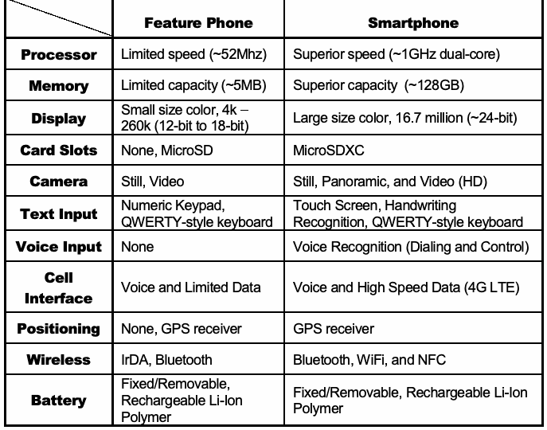
抽出したテキスト（原本と未照合・参考）
| Feature Phone | Smartphone | |
| Processor | Limited speed (~52Mhz) | Superior speed (~1GHz dual-core) |
| Memory | Limited capacity (~5MB) | Superior capacity (~128GB) |
| Display | Small size color, 4k – 260k (12-bit to 18-bit) | Large size color, 16.7 million (~24-bit) |
| Card Slots | None, MicroSD | MicroSDXC |
| Camera | Still, Video | Still, Panoramic, and Video (HD) |
| Text Input | Numeric Keypad, QWERTY-style keyboard | Touch Screen, Handwriting Recognition, QWERTY-style keyboard |
| Voice Input | None | Voice Recognition (Dialing and Control) |
| Cell Interface | Voice and Limited Data | Voice and High Speed Data (4G LTE) |
| Positioning | None, GPS receiver | GPS receiver |
| Wireless | IrDA, Bluetooth | Bluetooth, WiFi, and NFC |
| Battery | Fixed/Removable, Rechargeable Li-Ion Polymer | Fixed/Removable, Rechargeable Li-Ion Polymer |
抽出したテキストの訳（原本と未照合・参考）
| フィーチャーフォン | スマートフォン | |
| プロセッサ | 低速（~52Mhz） | 高速（~1GHz デュアルコア） |
| メモリ | 小容量（~5MB） | 大容量（~128GB） |
| ディスプレイ | 小型カラー、4k – 260k（12-bit to 18-bit） | 大型カラー、16.7 million（~24-bit） |
| カードスロット | なし、MicroSD | MicroSDXC |
| カメラ | 静止画、動画 | 静止画、パノラマ、動画（HD） |
| テキスト入力 | 数字キーパッド、QWERTY配列キーボード | タッチスクリーン、手書き認識、QWERTY配列キーボード |
| 音声入力 | なし | 音声認識（ダイヤル・操作） |
| セルラーインターフェース | 音声、低速データ | 音声、高速データ（4G LTE） |
| 測位 | なし、GPS受信機 | GPS受信機 |
| 無線 | IrDA、Bluetooth | Bluetooth、WiFi、NFC |
| バッテリー | 固定式／取り外し式、充電式Li-Ion Polymer | 固定式／取り外し式、充電式Li-Ion Polymer |
Both feature phones and smartphones support voice, text messaging, and a set of basic Personal Information Management (PIM) type applications including phonebook and calendar facilities. Smartphones add PC-like capability for running a wide variety of general and special-purpose applications. Smartphones are typically larger than feature phones, support higher video resolutions (e.g., ~300 PPI) and may have an integrated QWERTY keyboard or touch sensitive screen. Smartphones generally support a wide array of applications, available through an application storefront. Table 2 lists the differences in software capabilities found on these device classes.
フィーチャーフォンとスマートフォンはいずれも、音声通話、テキストメッセージ、および電話帳やカレンダー機能を含む基本的な個人情報管理（PIM）型アプリケーションをサポートする。スマートフォンでは、パーソナルコンピュータに似た機能が追加され、汎用および専用の多様なアプリケーションを実行できる。スマートフォンは通常フィーチャーフォンより大型で、高解像度の動画（例：約300 PPI）に対応し、QWERTYキーボードまたはタッチ感知画面を内蔵する場合がある（may）。スマートフォンは一般に、アプリケーションストアから入手可能な幅広いアプリケーションをサポートする。表2に、これらのデバイス種別で見られるソフトウェア機能の違いを示す。
Table 2: Software Characterization
表2：ソフトウェアの特性
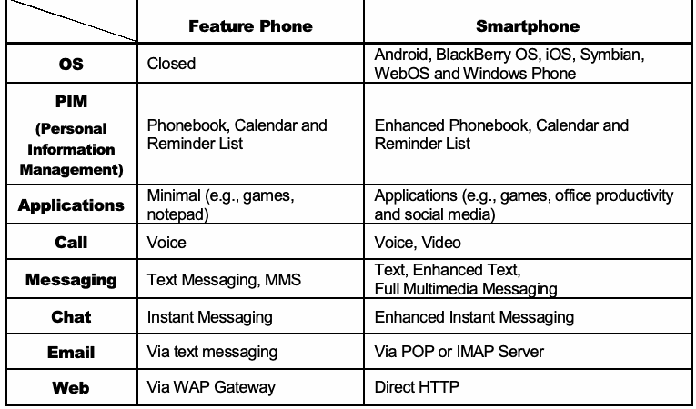
抽出したテキスト（原本と未照合・参考）
| Feature Phone | Smartphone | |
| OS | Closed | Android, BlackBerry OS, iOS, Symbian, WebOS and Windows Phone |
| PIM (Personal Information Management) | Phonebook, Calendar and Reminder List | Enhanced Phonebook, Calendar and Reminder List |
| Applications | Minimal (e.g., games, notepad) | Applications (e.g., games, office productivity and social media) |
| Call | Voice | Voice, Video |
| Messaging | Text Messaging, MMS | Text, Enhanced Text, Full Multimedia Messaging |
| Chat | Instant Messaging | Enhanced Instant Messaging |
| Via text messaging | Via POP or IMAP Server | |
| Web | Via WAP Gateway | Direct HTTP |
抽出したテキストの訳（原本と未照合・参考）
| フィーチャーフォン | スマートフォン | |
| OS | クローズド | Android、BlackBerry OS、iOS、Symbian、WebOS、Windows Phone |
| PIM（個人情報管理） | 電話帳、カレンダー、リマインダーリスト | 拡張電話帳、カレンダー、リマインダーリスト |
| アプリケーション | 最小限（例：ゲーム、メモ帳） | アプリケーション（例：ゲーム、オフィス生産性、ソーシャルメディア） |
| 通話 | 音声 | 音声、動画 |
| メッセージング | テキストメッセージ、MMS | テキスト、拡張テキスト、フルマルチメディアメッセージング |
| チャット | インスタントメッセージング | 拡張インスタントメッセージング |
| 電子メール | テキストメッセージ経由 | POPまたはIMAPサーバ経由 |
| ウェブ | WAPゲートウェイ経由 | HTTP直接接続 |
Feature phones typically use a closed operating system with no published documentation. A number of companies specializing in embedded software also offer real-time operating system solutions for manufacturers of mobile devices. Smartphones generally use either a proprietary or an open source operating system. Nearly all smartphones use one of the following operating systems: Android, BlackBerry OS, iOS, Symbian, WebOS or Windows Phone. Unlike the more limited kernels in feature phones, these operating systems are multi-tasking and full-featured, designed specifically to match the capabilities of high-end mobile devices. Many smartphone operating systems manufacturers offer a Software Development Kit (SDK) (e.g., the Android1 or iOS2 SDKs).
フィーチャーフォンでは通常、公開された文書がないクローズドなオペレーティングシステムが使われる。組み込みソフトウェアを専門とする複数の企業は、モバイルデバイス製造業者向けにリアルタイム・オペレーティングシステムのソリューションも提供している。スマートフォンでは通常、独自またはオープンソースのオペレーティングシステムが使用される。ほぼすべてのスマートフォンが、Android、BlackBerry OS、iOS、Symbian、WebOS、Windows Phoneのいずれかを使用する。フィーチャーフォンのより限定的なカーネルとは異なり、これらのオペレーティングシステムはマルチタスク対応で、ハイエンド・モバイルデバイスの機能に適合するよう特別に設計されたフル機能のシステムである。多くのスマートフォン用オペレーティングシステムの製造元は、ソフトウェア開発キット（SDK）（例：Android1またはiOS2 SDK）を提供している。
未レビュー訳2.2 Memory Considerations
2.2 メモリに関する考慮事項
Mobile devices contain both non-volatile and volatile memory. Volatile memory (i.e., RAM) is used for dynamic storage and its contents are lost when power is drained from the mobile device. Non-volatile memory is persistent as its contents are not affected by loss of power or overwriting data upon reboot. For example, solid-state drives (SSD) that stores persistent data on solid-state flash memory.
モバイルデバイスには、不揮発性メモリと揮発性メモリの両方が含まれる。揮発性メモリ（すなわちRAM）は動的記憶に用いられ、デバイスへの電力供給が失われると内容も失われる。不揮発性メモリは永続的であり、電力の喪失や再起動時のデータ上書きの影響を受けない。たとえば、ソリッドステートドライブ（SSD）はソリッドステート・フラッシュメモリに永続データを保存する。
Mobile devices typically contain one or two different types of non-volatile flash memory. These types are NAND and NOR. NOR flash has faster read times, slower write times than NAND and is nearly immune to corruption and bad blocks while allowing random access to any memory location. NAND flash offers higher memory storage capacities, is less stable and only allows sequential access.
モバイルデバイスには通常、NANDとNORという1種類または2種類の不揮発性フラッシュメモリが含まれる。NORフラッシュはNANDより読み出しが速く、書き込みが遅い。破損や不良ブロックが発生しにくく、任意のメモリ位置へのランダムアクセスが可能である。NANDフラッシュはより大容量の記憶を提供するが、安定性が低く、シーケンシャルアクセスのみが可能である。
Memory configurations among mobile devices have evolved over time. Feature phones were among the first types of devices that contained NOR flash and RAM memory. System and user data are stored in NOR and copied to RAM upon booting for faster code execution and access. This is known as the first generation of mobile device memory configurations.
モバイルデバイスのメモリ構成は時代とともに進化してきた。フィーチャーフォンは、NORフラッシュとRAMメモリを搭載した最初期のデバイスの一つである。システムデータおよびユーザーデータはNORに保存され、コード実行とアクセスを高速化するため、起動時にRAMへコピーされる。これを第1世代のモバイルデバイス・メモリ構成という。
As smartphones were introduced, memory configurations evolved, adding NAND flash memory. This arrangement of NOR, NAND and RAM memory is referred to as the second generation. This generation of memory configurations stores system files in NOR flash, user files in NAND and RAM is used for code execution.
スマートフォンの登場に伴い、NANDフラッシュメモリが追加され、メモリ構成が進化した。NOR、NAND、RAMからなるこの構成を第2世代と呼ぶ。この世代のメモリ構成では、システムファイルをNORフラッシュ、ユーザーファイルをNANDに保存し、RAMをコード実行に使用する。
The latest smartphones contain only NAND and RAM memory (i.e., third generation), due to requirements for higher transaction speed, greater storage density and lower cost. To facilitate the lack of space on mobile device mainboards and the demand for higher density storage space (i.e., 2GB – 128GB) the new Embedded MultiMedia Cards (eMMC) style chips are present in many of today’s smartphones.
最新のスマートフォンは、より高速なトランザクション、より高い記憶密度、より低いコストの要件により、NANDとRAMのみ（すなわち第3世代）を搭載する。モバイルデバイスのメインボード上の空間不足と高密度記憶（すなわち2GB – 128GB）の需要に対応するため、新しいEmbedded MultiMedia Cards（eMMC）形式のチップが現在の多くのスマートフォンに搭載されている。
Figure 1 illustrates the various memory configurations contained across all mobile devices.
図1は、すべてのモバイルデバイスで用いられる各種メモリ構成を示す。
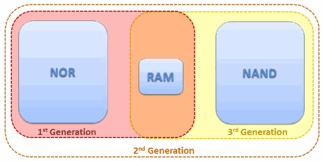
モバイル端末の世代別メモリ構成を示す図。第1世代はNOR、第2世代はNOR・RAM・NAND、第3世代はRAMとNANDの構成として示す。
Figure 1: Memory Configurations
図1：メモリ構成
RAM is the most difficult to capture accurately due to its volatile nature. Since RAM is typically used for program execution, information may be of value to the examiner (e.g., configuration files, passwords, etc.). Mobile device RAM capture tools are just beginning to become available.
RAMは揮発性であるため、正確に取得することが最も難しい。RAMは通常プログラム実行に使われるため、情報が検査担当者にとって価値を持つ場合がある（例：設定ファイル、パスワードなど）（may）。モバイルデバイスのRAM取得ツールは、ようやく利用可能になり始めたところである。
NOR flash memory includes system data such as: operating system code, the kernel, device drivers, system libraries, memory for executing operating system applications and the storage of user application execution instructions. NOR flash will be the best location for data collection for first generation memory configuration devices.
NORフラッシュメモリには、オペレーティングシステムのコード、カーネル、デバイスドライバ、システムライブラリ、OSアプリケーション実行用メモリ、およびユーザーアプリケーションの実行命令の格納領域などのシステムデータが含まれる。第1世代のメモリ構成を持つデバイスでは、NORフラッシュがデータ収集に最適な場所となる。
NAND flash memory contains: PIM data, graphics, audio, video, and other user files. This type of memory generally provides the examiner with the most useful information in most cases. NAND flash memory may leave multiple copies of transaction-based files (e.g., databases and logs) due to wear leveling algorithms and garbage collection routines. Since NAND flash memory cells can be re-used for only a limited amount of time before they become unreliable, wear leveling algorithms are used to increase the life span of Flash memory storage, by arranging data so that erasures and re-writes are distributed evenly across the SSD.
NANDフラッシュメモリには、PIMデータ、画像、音声、動画、その他のユーザーファイルが含まれる。この種のメモリは一般に、ほとんどの場合、検査担当者に最も有用な情報を提供する。NANDフラッシュメモリには、ウェアレベリング・アルゴリズムとガベージコレクション処理により、トランザクションベースのファイル（例：データベースやログ）の複数コピーが残る場合がある（may）。NANDフラッシュメモリのセルは信頼性を失うまでに限られた期間しか再利用できないため、消去と再書き込みがSSD全体に均等に分散されるようデータを配置することで、フラッシュメモリ記憶装置の寿命を延ばすウェアレベリング・アルゴリズムが用いられる。
Garbage collection occurs because NAND flash memory cannot overwrite existing data, the data must first be erased before writing to the same cell [Bel10].
NANDフラッシュメモリは既存データを上書きできないため、ガベージコレクションが行われる。同じセルに書き込む前にデータを消去しなければならない [Bel10]。
2.3 Identity Module Characteristics
2.3 IDモジュールの特性
Identity modules (commonly known as SIM cards) are synonymous with mobile devices that interoperate with GSM cellular networks. Under the GSM framework, a mobile device is referred to as a Mobile Station and is partitioned into two distinct components: the Universal Integrated Circuit Card (UICC) and the Mobile Equipment (ME). A UICC, commonly referred to as an identity module (e.g., Subscriber Identity Module [SIM], Universal Subscriber Identity Module [USIM], CDMA Subscriber Identity Module [CSIM]), is a removable component that contains essential information about the subscriber. The ME and the radio handset portion cannot fully function without a UICC. The UICC’s main purpose entails authenticating the user of the mobile device to the network providing access to subscribed services. The UICC also offers storage for personal information, such as phonebook entries, text messages, last numbers dialed (LND) and service-related information.
IDモジュール（一般にSIMカードと呼ばれる）は、GSMセルラーネットワークと相互運用するモバイルデバイスの代名詞となっている。GSMの枠組みでは、モバイルデバイスは移動局（Mobile Station）と呼ばれ、Universal Integrated Circuit Card（UICC）とMobile Equipment（ME）の2つの別個の構成要素に分けられる。一般にIDモジュールと呼ばれるUICC（例：Subscriber Identity Module［SIM］、Universal Subscriber Identity Module［USIM］、CDMA Subscriber Identity Module［CSIM］）は、加入者に関する必須の情報を格納する取り外し可能な構成要素である。UICCがなければ、MEおよび無線ハンドセット部分は完全には機能できない。UICCの主な目的は、モバイルデバイスのユーザーをネットワークに対して認証し、加入サービスへのアクセスを提供することである。UICCは、電話帳の登録情報、テキストメッセージ、最後にダイヤルした番号（LND）、サービス関連情報などの個人情報の保存領域も提供する。
The UICC partitioning of a mobile device stipulated in the GSM standards has brought about a form of portability. Moving a UICC between compatible mobile devices automatically transfers the subscriber’s identity and some of the associated information (e.g., SMS messages and contacts) and capabilities. In contrast, 2G and 3G CDMA mobile devices generally do not contain a UICC card. Analogous UICC functionality is instead directly incorporated within the device. However, newer CDMA (i.e., 4G/LTE) devices may employ a CDMA Subscriber Identity Module (CSIM) application running on a UICC.
GSM規格で規定されたモバイルデバイスのUICC分離構成により、可搬性が実現している。UICCを互換性のあるモバイルデバイス間で移動すると、加入者の識別情報と関連情報の一部（例：SMSメッセージや連絡先）および機能が自動的に移行する。これに対し、2Gおよび3GのCDMAモバイルデバイスには、一般にUICCカードが含まれない。代わりに、同等のUICC機能がデバイスに直接組み込まれている。ただし、新しいCDMA（すなわち4G/LTE）デバイスでは、UICC上で動作するCDMA Subscriber Identity Module（CSIM）アプリケーションを使用する場合がある（may）。
A UICC can contain up to three applications: SIM, USIM and CSIM. UICCs used in GSM and UMTS mobile devices use the SIM and UMTS SIM (USIM) applications, while CDMA devices use the CSIM application. A UICC with all three applications provides users with additional portability through the removal of the UICC from one mobile device and insertion into another. Because the SIM application was originally synonymous with the physical card itself, the term SIM is often used to refer to the physical card in lieu of UICC. Similarly the terms USIM and CSIM can refer to both the physical card as well as the respective applications supported on the UICC.
UICCには、SIM、USIM、CSIMの最大3つのアプリケーションを格納できる。GSMおよびUMTSモバイルデバイスで使用されるUICCはSIMおよびUMTS SIM（USIM）アプリケーションを利用し、CDMAデバイスはCSIMアプリケーションを利用する。3つすべてのアプリケーションを備えたUICCでは、あるモバイルデバイスからUICCを取り外して別のデバイスに挿入できるため、ユーザーの可搬性がさらに高まる。SIMアプリケーションは元々物理カードそのものと同義であったため、UICCの代わりに物理カードを指してSIMという用語がよく使われる。同様にUSIMおよびCSIMという用語は、物理カードと、UICC上でサポートされるそれぞれのアプリケーションの両方を指す場合がある（can）。
At its core, a UICC is a special type of smart card that typically contains a processor and between 16 to 128 KB of persistent electronically erasable, programmable read only memory (EEPROM). It also includes RAM for program execution and ROM for the operating system, user authentication and data encryption algorithms, and other applications. The UICC’s file system resides in persistent memory and stores data such as: as phonebook entries, text messages, last numbers dialed (LND) and service-related information. Depending on the mobile device used, some information managed by applications on the UICC may coexist in the memory of the mobile device. Information may also reside entirely in the memory of the mobile device instead of available memory reserved for it in the file system of the UICC.
UICCは本質的には、通常プロセッサと16～128 KBの永続的な電気的消去・プログラム可能読み出し専用メモリ（EEPROM）を備える特殊な種類のスマートカードである。また、プログラム実行用のRAMと、オペレーティングシステム、ユーザー認証およびデータ暗号化アルゴリズム、その他のアプリケーションを格納するROMも含む。UICCのファイルシステムは永続メモリ上にあり、電話帳の登録情報、テキストメッセージ、最後にダイヤルした番号（LND）、サービス関連情報などのデータを格納する。使用するモバイルデバイスによっては、UICC上のアプリケーションが管理する一部の情報がモバイルデバイスのメモリにも併存する場合がある（may）。また、情報が、UICCのファイルシステム内でそのために確保された利用可能なメモリではなく、すべてモバイルデバイスのメモリに存在する場合もある（may）。
The UICC operating system controls access to elements of the file system [3GP07]. Actions such as reading or updating may be permitted or denied unconditionally, or allowed conditionally with certain access rights, depending on the application. Rights are assigned to a subscriber through 4-8 digit Personal Identification Number (PIN) codes. PINs protect core subscriber-related data and certain optional data.
UICCのオペレーティングシステムは、ファイルシステム要素へのアクセスを制御する [3GP07]。アプリケーションに応じて、読み取りや更新などの操作は無条件に許可または拒否されるか、特定のアクセス権を条件として許可される場合がある（may）。権限は、4～8桁の個人識別番号（PIN）コードによって加入者に割り当てられる。PINは加入者に関する中核データと一部の任意データを保護する。
A preset number of attempts (usually three) are allowed for providing the correct PIN code to the UICC before further attempts are blocked completely, rendering communications inoperative. Only by providing a correct PIN Unblocking Key (PUK) may the value of a PIN and its counter be reset on the UICC. If the number of attempts to enter the correct PUK value exceeds a set limit, normally ten, the card becomes blocked permanently. The PUK for a UICC may be obtained from the service provider or network operator by providing the identifier of the UICC (i.e., Integrated Circuit Chip Identifier or ICCID). The ICCID is normally imprinted on the front of UICC, but may also be read from an element of the file system.
正しいPINコードをUICCに入力する試行は所定回数（通常3回）まで許可され、それを超えると以後の試行は完全に遮断され、通信ができなくなる。正しいPIN Unblocking Key（PUK）を入力することによってのみ、UICC上のPIN値とそのカウンタをリセットできる。正しいPUK値の入力試行回数が所定の上限（通常10回）を超えると、カードは永久にブロックされる。UICCのPUKは、UICCの識別子（すなわちIntegrated Circuit Chip IdentifierまたはICCID）を提示すれば、サービスプロバイダまたはネットワーク事業者から取得できる（may）。ICCIDは通常UICCの表面に印字されているが、ファイルシステム要素から読み取ることもできる（may）。
UICCs are available in three different size formats. They are: Mini SIM (2FF), Micro SIM (3FF), and Nano SIM (4FF). The Mini SIM with a width of 25 mm, a height of 15 mm, and a thickness of .76 mm, is roughly the footprint of a postage stamp and is currently the most common format used worldwide. Micro (12mm x 15mm x .76mm) and Nano (8.8mm x 12.3mm x .67mm) SIMs are found in newer mobile devices (e.g., iPhone 5 uses the 4FF).
UICCには3種類のサイズ形式がある：Mini SIM（2FF）、Micro SIM（3FF）、Nano SIM（4FF）。幅25 mm、高さ15 mm、厚さ.76 mmのMini SIMは、切手ほどの大きさで、現在世界で最も一般的に使われる形式である。Micro（12mm x 15mm x .76mm）およびNano（8.8mm x 12.3mm x .67mm）SIMは、より新しいモバイルデバイス（例：iPhone 5は4FFを使用）に採用されている。
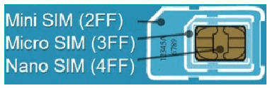
SIMカードの大きさを比較する図。ミニSIM（2FF）、マイクロSIM（3FF）、ナノSIM（4FF）の外形を示す。
Figure 2: SIM Card Size Formats [Orm09]
図2：SIMカードのサイズ形式 [Orm09]
Though similar in dimension to a miniSD removable memory card, UICCs follow a different set of specifications with vastly different characteristics. For example, their pin connectors are not aligned along the bottom edge as with removable media cards, but instead form a contact pad integral to the smart card chip, which is embedded in a plastic frame, as shown in Figure 2. UICCs also employ a broad range of tamper resistance techniques to protect the information they contain.
寸法はminiSD取り外し可能メモリカードと類似しているが、UICCは仕様が異なり、特性も大きく異なる。たとえば、接続ピンは取り外し可能メディアカードのように底辺に並んでいるのではなく、プラスチック枠に埋め込まれたスマートカードチップと一体化した接触パッドを形成する（図2参照）。UICCは、格納情報を保護するため、幅広い耐タンパー技術も採用する。
The slot for the UICC card is normally not accessible from the exterior of the mobile device to protect insertion and removal as with a memory card. Instead, it typically is found beneath the battery compartment. When a UICC is inserted into a mobile device handset and pin contact is made, a serial interface is used for communicating between them.
UICCカード用スロットは、メモリカードの場合と同様に、挿入および取り外しを保護するため、通常はモバイルデバイスの外部からアクセスできない。代わりに、通常はバッテリー収納部の下にある。UICCをモバイルデバイスのハンドセットに挿入してピンが接触すると、両者間の通信にはシリアルインターフェースが用いられる。
In most cases, the UICC should be removed from the handset first and read using a Personal Computer/Smart Card (PC/SC) reader. Removal of the UICC provides the examiner with ability to read additional data that may be recovered (e.g., deleted text messages).
ほとんどの場合、まずUICCをハンドセットから取り外し、Personal Computer/Smart Card（PC/SC）リーダーを使用して読み取るべきである（should）。UICCを取り外すと、検査担当者は、回復できる可能性のある追加データ（例：削除済みテキストメッセージ）を読み取れる（may）。
Authenticating a device to a network securely is a vital function performed via the UICC. Cryptographic key information and algorithms within the tamper resistant module provide the means for the device to participate in a challenge-response dialogue with the network and respond correctly, without exposing key material and other information that could be used to clone the UICC and gain access to a subscriber’s services. Cryptographic key information in the UICC also supports stream cipher encryption to protect against eavesdropping on the air interface.
デバイスをネットワークに安全に認証することは、UICCが担う重要な機能である。耐タンパーモジュール内の暗号鍵情報とアルゴリズムにより、デバイスはネットワークとのチャレンジ・レスポンス対話に参加して正しく応答できる。これにより、UICCを複製し加入者のサービスにアクセスするために悪用される可能性のある鍵素材やその他の情報を露出させずに済む。UICC内の暗号鍵情報は、無線インターフェース上の盗聴を防止するストリーム暗号化も支援する。
A UICC is similar to a mobile device as it has both volatile and non-volatile memory that may contain the same general categories of data as found in a mobile device. It can be thought of as a trusted sub-processor that interfaces to a device and draws power from it. The file system resides in the non-volatile memory of a UICC and is organized as a hierarchical tree structure.
UICCはモバイルデバイスと同様に揮発性・不揮発性メモリの両方を備え、そこにはモバイルデバイス内と同じ一般的な種類のデータが含まれる場合がある（may）。UICCは、デバイスと接続してそこから電力を得る信頼された副プロセッサと考えることができる（can）。ファイルシステムはUICCの不揮発性メモリ内にあり、階層ツリー構造で編成されている。
For example, the SIM applications file system is composed of three types of elements: the root of the file system (MF), subordinate directory files (DF), and files containing elementary data (EF). Figure 3 illustrates the structure of the file system. The EFs under \(DF_{GSM}\) and \(DF_{DCS1800}\) contain mainly network related information for different frequency bands of operation. The EFs under \(DF_{TELECOM}\) contain service related information.
翻訳準備中
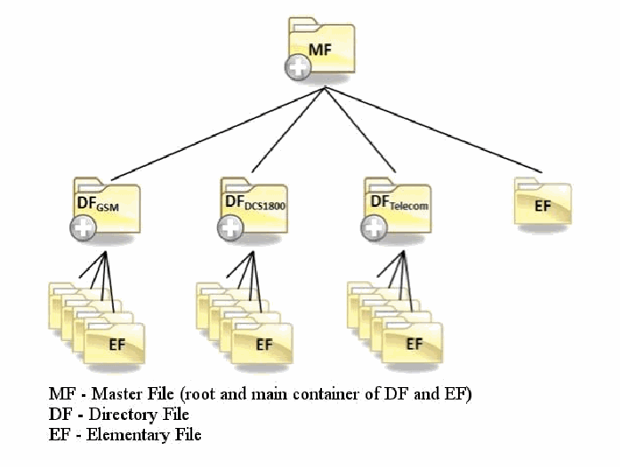
GSM SIMファイルシステムの階層図。マスターファイル（MF）の下にGSM・CS・Telecomのディレクトリファイル（DF）と基本ファイル（EF）が配置される。
Figure 3: SIM File System (GSM)
図3：SIMファイルシステム（GSM）
Various types of digital evidence may exist in elementary data files scattered throughout the file system and be recovered from a UICC. Some of the same information held in the UICC may be maintained in the memory of the mobile device and encountered there as well. Besides the standard files defined in the GSM specifications, a UICC may contain non-standard files established by the network operator. Several general categories of data may be found in standard elementary data files of a UICC are as follows:
ファイルシステム全体に分散した基本データファイルには、さまざまな種類のデジタル証拠が存在し、UICCから回収できる場合がある（may）。UICCに保持される情報の一部はモバイルデバイスのメモリにも保持され、そちらからも発見されることがある。GSM仕様で定義された標準ファイルに加え、UICCにはネットワーク事業者が定めた非標準ファイルが含まれる場合がある（may）。UICCの標準基本データファイルには、次のような一般的な種類のデータが見つかることがある（may）。
•Service-related Information including unique identifiers for the UICC, the Integrated Circuit Card Identification (ICCID) and the International Mobile Subscriber Identity (IMSI)
•翻訳準備中
•Phonebook and call information known respectively as the Abbreviated Dialing Numbers (ADN) and Last Numbers Dialed (LND)
•翻訳準備中
•Messaging information including both Short Message Service (SMS) text messages and Enhanced Messaging Service (EMS) simple multimedia messages
•翻訳準備中
•The USIM application supports the storage of links to incoming (EFICI) and outgoing (EFOCI) calls. The EFICI and EFOCI are each stored using two bytes. The first byte points to a specific phone book and the second points to an abbreviated dialing number (EFADN) entry3
•翻訳準備中
•Location information including Location Area Information (LAI) for voice communications and Routing Area Information (RAI) for data communications.
•音声通信のLocation Area Information（LAI）およびデータ通信のRouting Area Information（RAI）などの位置情報。
2.4 Cellular Network Characteristics
2.4 セルラーネットワークの特性
Within the U.S., different types of digital cellular networks follow distinct incompatible sets of standards. The following sections discuss digital cellular networks, Mobile IP and satellite phones.
米国内では、異なる種類のデジタルセルラーネットワークが、それぞれ互換性のない別個の規格群に従っている。以下の節では、デジタルセルラーネットワーク、Mobile IP、および衛星電話について説明する。
The two most dominant types of digital cellular networks are known as Code Division Multiple Access (CDMA) and Global System for Mobile Communications (GSM) networks. Other common cellular networks include Time Division Multiple Access (TDMA) and Integrated Digital Enhanced Network (iDEN). iDEN networks use a proprietary protocol designed by Motorola, while the others follow standardized open protocols. A digital version of the original analog standard for cellular telephone phone service, called Digital Advanced Mobile Phone Service (D-AMPS), also exists.
デジタルセルラーネットワークで最も普及している2種類は、Code Division Multiple Access（CDMA）とGlobal System for Mobile Communications（GSM）ネットワークである。その他の一般的なセルラーネットワークには、Time Division Multiple Access（TDMA）とIntegrated Digital Enhanced Network（iDEN）がある。iDENネットワークはMotorolaが設計した独自プロトコルを使用し、その他は標準化されたオープンプロトコルに従う。元来のアナログ携帯電話サービス規格をデジタル化したDigital Advanced Mobile Phone Service（D-AMPS）も存在する。
CDMA refers to a technology designed by Qualcomm in the U.S., which employs spread spectrum communications for the radio link.4 Rather than sharing a channel as many other network air interfaces do, CDMA spreads the digitized data over the entire bandwidth available, distinguishing multiple calls through a unique sequence code assigned. Successive versions of the IS-95 standard define CDMA conventions in the U.S., which is the reason why the term CDMA is often used to refer to IS-95 compliant cellular networks. IS-95 CDMA systems are sometimes referred to as cdmaOne. The next evolutionary step for CDMA to 3G services was CDMA2000. CDMA2000 is backward compatible with its previous 2G iteration IS-95 (cdmaOne). The successor to CDMA2000 is Qualcomm’s Long Term Evolution (LTE). LTE adds faster data transfer capabilities for mobile devices and is commonly referred to as 4G LTE. Verizon and Sprint are common CDMA network carriers in the U.S.
CDMAは、米国Qualcomm社が設計した技術であり、無線リンクにスペクトラム拡散通信を用いる。4 他の多くのネットワーク無線インターフェースのように単一チャネルを共有するのではなく、CDMAはデジタル化されたデータを利用可能な帯域幅全体に拡散し、割り当てられた一意の系列コードによって複数の通話を区別する。IS-95規格の各バージョンでは米国のCDMA方式が定義されているため、CDMAという用語はIS-95準拠のセルラーネットワークを指す場合によく使われる。IS-95 CDMAシステムはcdmaOneと呼ばれることもある。CDMAの次の進化段階として、3Gサービス向けにCDMA2000が登場した。CDMA2000は、従来の2G方式であるIS-95（cdmaOne）との後方互換性を持つ。CDMA2000の後継は、QualcommのLong Term Evolution（LTE）である。LTEはモバイルデバイスのデータ転送速度を高め、一般に4G LTEと呼ばれる。米国ではVerizonとSprintが一般的なCDMAネットワーク事業者である。
未レビュー訳GSM is a cellular system used worldwide that was designed in Europe, primarily by Ericsson and Nokia. AT&T and T-Mobile are common GSM network carriers in the U.S. GSM uses a TDMA air interface. TDMA refers to a digital link technology whereby multiple phones share a single carrier, radio frequency channel by taking turns – using the channel exclusively for an allocated time slice, then releasing it and waiting briefly while other phones use it. A packet switching enhancement to GSM called General Packet Radio Service (GPRS) was standardized to improve the transmission of data. The next generation of GSM, commonly referred to as the third generation or 3G, is known as Universal Mobile Telecommunications System (UMTS) and involves enhancing GSM networks with a Wideband CDMA (W-CDMA) air interface. 4G LTE is also available to GSM mobile devices providing higher data transmission rates to its customers.5
GSMは世界中で利用されているセルラーシステムであり、主にEricssonおよびNokiaが欧州で設計した。米国ではAT&TとT-Mobileが一般的なGSMネットワーク事業者である。GSMはTDMA無線インターフェースを使用する。TDMAとは、複数の電話機が単一の搬送波・無線周波数チャネルを共有し、割り当てられた時間枠の間はそのチャネルを専有して使用した後に解放し、他の電話機が使っている短い間待機するデジタルリンク技術を指す。データ伝送を改善するため、General Packet Radio Service（GPRS）と呼ばれるGSMのパケット交換拡張が標準化された。一般に第3世代または3Gと呼ばれる次世代GSMは、Universal Mobile Telecommunications System（UMTS）として知られ、Wideband CDMA（W-CDMA）無線インターフェースを用いてGSMネットワークを拡張する。GSMモバイルデバイスでは、顧客により高速なデータ転送速度を提供する4G LTEも利用できる。5
未レビュー訳TDMA is also used to refer specifically to the standard covered by IS-136. Using the term TDMA to refer to a general technique or a specific type of cellular network can be a source of confusion. For example, although GSM uses a TDMA air interface (i.e., the general technique), as does iDEN, neither of those systems is compatible with TDMA cellular networks that follow IS-136. Many mobile forensic tools refer to these devices as iDEN/TDMA phones. Mobile devices operating over the iDEN network often utilize a Push-To-Talk (PTT) function provide subscribers with the ability to communicate with one another over a cellular network in a “walkie-talkie” fashion.
TDMAは、IS-136で規定される規格を特に指すためにも使われる。一般的な技法または特定の種類のセルラーネットワークを指すためにTDMAという用語を使うと、混乱を招くことがある。たとえば、GSMがTDMA無線インターフェース（すなわち一般的な技法）を使用し、iDENも同様であるが、どちらのシステムもIS-136に準拠したTDMAセルラーネットワークとは互換性がない。多くのモバイル・フォレンジックツールは、これらのデバイスをiDEN/TDMA電話機と呼ぶ。iDENネットワークで動作するモバイルデバイスには、加入者同士がセルラーネットワーク経由で「トランシーバー」のように通信できるPush-To-Talk（PTT）機能がよく搭載されている。
未レビュー訳Integrated Digital Enhanced Network (iDEN), a mobile telecommunications technology developed by Motorola provided the benefits of a two-way radio system and a cellular telephone. The iDEN project originally began as MIRS (Motorola Integrated Radio System) in early 1991 and was phased out the summer of 2013 for the US markets although coverage still exists in Mexico and Canada.
Integrated Digital Enhanced Network（iDEN）はMotorolaが開発したモバイル通信技術で、双方向無線システムと携帯電話の利点を備えていた。iDENプロジェクトは1991年初頭にMIRS（Motorola Integrated Radio System）として開始され、米国市場では2013年夏に段階的に終了したが、メキシコおよびカナダでは依然として通信範囲が存在する。
Digital AMPS (D-AMPS), IS-54 and IS-136 are 2G mobile phone systems once prevalent within the United States and Canada in the 1990s. Existing networks were mostly replaced by GSM/GPRS or CDMA2000 technologies.
Digital AMPS（D-AMPS）、IS-54、およびIS-136は、1990年代に米国およびカナダで普及していた2G携帯電話システムである。既存ネットワークの大半はGSM/GPRSまたはCDMA2000の技術に置き換えられた。
Mobile devices work with certain subsets of the network types mentioned, typically those associated with a service provider from whom the phone was obtained and with whom a service agreement was entered. Mobile devices may also be acquired without service from any manufacturer, vendor, or other source and subsequently have their service set up separately with a service provider or network operator. Mobile devices that are permitted to be provisioned to more than one specific carrier are commonly referred to as “unlocked” as they may be used on a variety of carriers by switching UICC’s for GSM mobile devices.
モバイルデバイスは、特定の種類のネットワークのサブセットに対応する。通常は、端末を入手しサービス契約を結んだサービスプロバイダに関連するネットワークである。モバイルデバイスは、サービス契約なしにメーカー、販売業者、その他の供給元から入手し、その後、サービスプロバイダまたはネットワーク事業者と別途契約してサービスを設定することもできる（may）。複数の特定キャリアで利用することが認められているモバイルデバイスは、一般に「アンロック済み」と呼ばれる。GSMモバイルデバイスではUICCを切り替えることで複数のキャリアで使用できる場合がある（may）。
Mobile devices do exist that provide the user with both GSM and CDMA capabilities. Such devices are sometimes referred to as hybrid phones or global phones. These types of mobile devices contain two types of cellular radios for voice and data, providing the ability to operate over either the GSM or CDMA network.
GSMとCDMAの両方の機能を提供するモバイルデバイスも存在する。このようなデバイスは、ハイブリッドフォンまたはグローバルフォンと呼ばれることがある。こうしたモバイルデバイスは、音声・データ用に2種類のセルラー無線機を備え、GSMまたはCDMAネットワークのいずれかで動作できる。
As the name implies, cellular networks provide coverage based on dividing up a large geographical service area into smaller areas of coverage called cells. Cells play an important role in reuse of radio frequencies in the limited radio spectrum available to allow more calls to occur than otherwise would be possible. As a mobile device moves from one cell to another, a cellular arrangement requires active connections to be monitored and effectively passed along between cells to maintain the connection. To administer the cellular network system, provide subscribed services, and accurately bill or debit subscriber accounts, data about the service contract and associated service activities is captured and maintained by the network system.
名称が示すように、セルラーネットワークは、広い地理的サービスエリアをセルと呼ばれるより小さなカバレッジエリアに分割してサービスを提供する。セルは、限られた無線スペクトラム内で周波数を再利用し、他の方法では可能な数を超える通話を可能にするうえで重要な役割を果たす。モバイルデバイスがあるセルから別のセルに移動すると、接続を維持するため、セルラー方式ではアクティブな接続を監視し、セル間で適切に引き継ぐ必要がある。セルラーネットワークシステムを管理し、契約したサービスを提供し、加入者アカウントに正確に請求または課金するため、サービス契約および関連するサービス利用活動のデータがネットワークシステムによって収集・維持される。
Despite their differences in technology, cellular networks are organized similarly to one another, in a manner illustrated in Figure 4 [Gib02]. The main components are the radio transceiver equipment that communicates with mobile devices, the controller that manages the transceiver equipment and performs channel assignment, and the switching system for the cellular network. The technical names for these components are respectively Node B, representing a Base Transceiver Station (BTS), the Radio Network Controller (RNC), and the Mobile Switching Center (MSC). The RNCs and the Node B units controlled are sometimes collectively referred to as a Radio Access Network (RAN).
技術は異なるものの、セルラーネットワークは図4 [Gib02]に示すように、類似した方式で構成される。主な構成要素は、モバイルデバイスと通信する無線送受信機器、送受信機器を管理してチャネル割り当てを行う制御装置、セルラーネットワークの交換システムである。これらの技術名称は順に、Base Transceiver Station（BTS）を表すNode B、Radio Network Controller（RNC）、Mobile Switching Center（MSC）である。RNCと、それらが制御するNode B装置は、まとめてRadio Access Network（RAN）と呼ばれることもある。
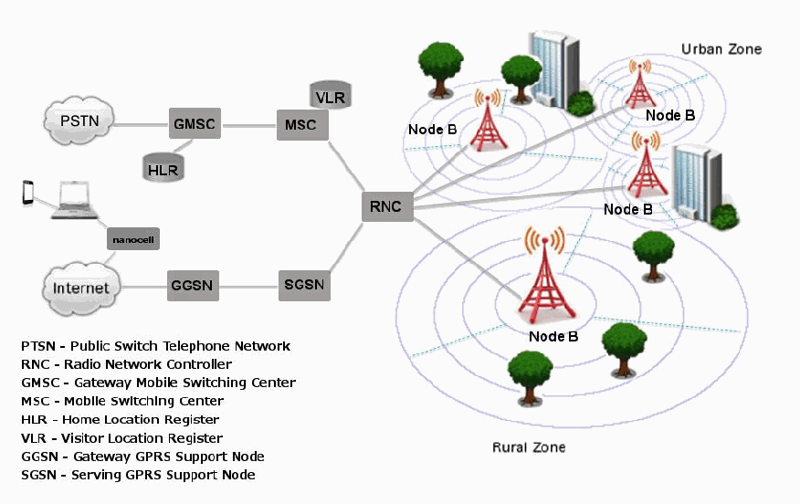
都市部と郊外の基地局セル、無線ネットワーク制御装置（RNC）、移動交換局（MSC）、ゲートウェイMSC、加入者・位置情報レジスタ、GPRSノード、PSTN、インターネットを結ぶ携帯電話網の構成図。
Figure 4: Cellular Network Organization
図4：セルラーネットワークの構成
Each MSC controls a set of RNCs and manages overall communications throughout the cellular network, including registration, authentication, location updating, handovers, and call routing. An MSC interfaces with the public switch telephone network (PSTN) via a Gateway MSC (GMSC). To perform its tasks, an MSC uses several databases. A key database is the central repository system for subscriber data and service information, called the Home Location Register (HLR). Another database used in conjunction with the HLR is the Visitor Location Register (VLR), which is used for mobile devices roaming outside of their service area. An SGSN (Serving GPRS Support Node) performs a similar role as that of MSC/VLR, but instead supports General Packet Radio Service (GPRS) (i.e., packet-switched services) to the Internet. Likewise, GGSN (Gateway GPRS Support Node) functionality is close to that of a GMSC, but for packet-switched services.
各MSCは一群のRNCを制御し、登録、認証、位置更新、ハンドオーバー、通話経路設定など、セルラーネットワーク全体の通信を管理する。MSCはGateway MSC（GMSC）を介して公衆交換電話網（PSTN）に接続する。MSCはその業務を行うために複数のデータベースを使用する。重要なデータベースは、Home Location Register（HLR）と呼ばれる、加入者データおよびサービス情報の中央リポジトリシステムである。HLRと連携して用いられる別のデータベースがVisitor Location Register（VLR）であり、サービスエリア外をローミングするモバイルデバイスに使用される。SGSN（Serving GPRS Support Node）はMSC/VLRと同様の役割を果たすが、代わりにインターネットへのGeneral Packet Radio Service（GPRS）（すなわちパケット交換サービス）をサポートする。同様に、GGSN（Gateway GPRS Support Node）の機能はGMSCに近いが、パケット交換サービス向けである。
Account information, such as data about the subscriber (e.g., a billing address), the subscribed services, and the location update last registered with the network are maintained at the HLR and used by the MSC to route calls and messages and to generate usage records called Call Detail Records (CDR). The subscriber account data, CDRs, and related technical information obtained from the network carrier are often a valuable source of evidence in an investigation [Con09].
加入者に関するデータ（例：請求先住所）、契約サービス、ネットワークに最後に登録された位置更新などのアカウント情報はHLRに保持され、MSCが通話およびメッセージの経路設定を行い、Call Detail Records（CDR）と呼ばれる使用記録を生成するために用いられる。ネットワーク事業者から得られる加入者アカウントデータ、CDR、および関連技術情報は、調査における貴重な証拠源となることが多い [Con09]。
2.5 Other Communications Systems
2.5 その他の通信システム
Mobile IP is an Internet Engineering Task Force (IETF)6 standard communications protocol that is designed to allow mobile device users to move from one network to another while maintaining a permanent IP address.7 With the original IP protocol, each time a mobile device moved to a new Internet point of attachment, all active network connections had to be restarted and the device possibly needed to be rebooted. Mobile IP instead allows a mobile user to move about transparently while continuing to use the same IP address (the user's "home address"), avoiding these problems and enabling new mobile applications. Mobile IP was designed to support seamless and continuous Internet connectivity. Mobile IP is most often found in wireless environments where users need to carry their mobile devices across multiple Local Area Network (LAN) subnets. Examples of use are in roaming between overlapping wireless systems e.g., Wireless Local Area Network (WLAN), Worldwide Interoperability for Microwave Access (WiMAX), IP over Digital Video Broadcasting (DVB) and Broadband Wireless Access (BWA).8
Mobile IPは、モバイルデバイスのユーザーが恒久的なIPアドレスを維持したままネットワーク間を移動できるように設計された、Internet Engineering Task Force（IETF）6の標準通信プロトコルである。7 元のIPプロトコルでは、モバイルデバイスが新しいインターネット接続点に移動するたびに、すべてのアクティブなネットワーク接続を再開する必要があり、デバイスの再起動が必要となる場合もあった。Mobile IPでは、ユーザーが同じIPアドレス（ユーザーのホームアドレス：user's "home address"）を使い続けながら透過的に移動できるため、これらの問題を回避し、新たなモバイルアプリケーションを実現できる。Mobile IPは、シームレスで継続的なインターネット接続を支援するよう設計された。複数のLocal Area Network（LAN）サブネット間をモバイルデバイスとともに移動する必要があるユーザーがいる無線環境で、Mobile IPが最もよく使われる。利用例として、Wireless Local Area Network（WLAN）、Worldwide Interoperability for Microwave Access（WiMAX）、IP over Digital Video Broadcasting（DVB）、Broadband Wireless Access（BWA）など、重複する無線システム間のローミングがある。8
未レビュー訳Individuals requiring communication services from remote locations (e.g., aviation, emergency services, government, military, etc.) are often equipped with satellite phones. Satellite phones are mobile devices that establish connectivity with satellites rather than cellular towers. Typically, satellite phones require a direct line of sight to the satellite without obstruction of objects (e.g., buildings, trees, etc.) impacting the signal strength and quality of the call. Depending on the service, coverage may range from a specific area all the way to the entire earth. For example, the Iridium satellite constellation is made up of 66 Low Earth Orbiting (LEO) satellites with spares, providing worldwide voice and data communications.
遠隔地から通信サービスを必要とする人々（例：航空、緊急サービス、政府、軍など）は、衛星電話を携帯していることが多い。衛星電話は、セルラー基地局ではなく衛星との間に接続を確立するモバイルデバイスである。通常、衛星電話では、建物や樹木などの物体に遮られず、信号強度・通話品質に影響しない衛星への直接見通し線が必要となる。サービスによっては、特定地域から地球全体までをカバーする場合がある（may）。たとえば、Iridium衛星コンステレーションは、予備機を含む66基の低軌道（LEO）衛星で構成され、世界規模の音声・データ通信を提供する。
未レビュー訳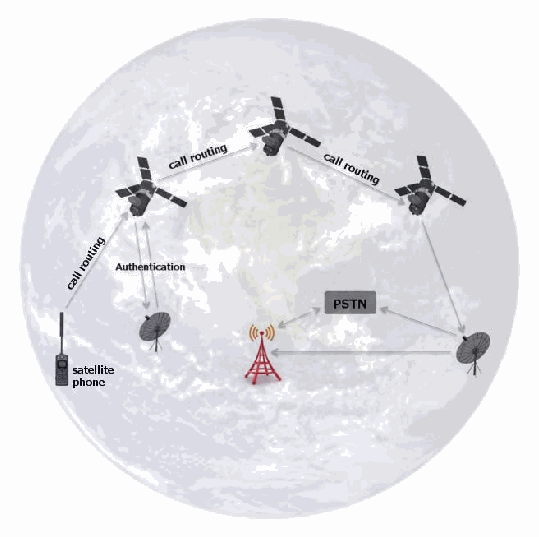
衛星電話から衛星を介して地上局へ通信し、公衆交換電話網（PSTN）へ接続するネットワーク図。衛星間の中継、認証、通話経路も示す。
Figure 5: Satellite Phone Network
図5：衛星電話ネットワーク
Satellite phones communicate by sending radio signals to a satellite that transmits a signal back down to earth where a station routes the call to the PSTN. In some cases, the satellite phone provider will transmit from one satellite to another satellite that has a connection to an Earth station. Much like GSM based mobile devices, satellite phones are equipped with a UICC and provide users with a wide variety of features (e.g., contact list, text messaging, voicemail, call forwarding, etc.).
衛星電話は衛星へ無線信号を送り、衛星はその信号を地上へ送り返し、地上局が通話をPSTNに接続する。場合によっては、衛星電話事業者が信号を別の衛星へ中継し、その衛星が地上局に接続する。GSM方式のモバイルデバイスと同様に、衛星電話にはUICCが搭載され、多様な機能（例：連絡先リスト、テキストメッセージ、ボイスメール、着信転送など）がユーザーに提供される。
抽出したテキストの訳（原本と未照合・参考）
3. フォレンジックツールThe availability of forensic software tools for mobile devices is considerably different from that of personal computers. While personal computers may differ from mobile devices from a hardware and software perspective, their functionality has become increasingly similar. Although the majority of mobile device operating systems are open source (i.e., Android), feature phone OS’s are typically closed. Closed operating systems make interpreting their associated file system and structure difficult. Many mobile devices with the same operating system may also vary widely in their implementation, resulting in a myriad of file system and structure permutations. These permutations create significant challenges for mobile forensic tool manufacturers and examiners.
モバイルデバイス向けフォレンジックソフトウェアツールの利用可能性は、パーソナルコンピュータ向けのものとは大きく異なる。パーソナルコンピュータはハードウェアおよびソフトウェアの面でモバイルデバイスと異なる場合がある（may）が、両者の機能はますます類似してきている。モバイルデバイス用オペレーティングシステムの大半はオープンソース（すなわちAndroid）であるが、フィーチャーフォンのOSは通常クローズドである。クローズドなオペレーティングシステムでは、関連するファイルシステムや構造の解釈が難しい。同一のオペレーティングシステムを搭載する多くのモバイルデバイスでも実装が大きく異なる場合があり（may）、無数のファイルシステムと構造の組み合わせが生じる。このような組み合わせは、モバイル・フォレンジックツールの製造元および検査担当者に大きな課題をもたらす。
The types of software available for mobile device examination include commercial and open source forensic tools, as well as non-forensic tools intended for device management, testing, and diagnostics. Forensic tools are typically designed to acquire data from the internal memory of handsets and UICCs without altering their content and to calculate integrity hashes for the acquired data. Both forensic and non-forensic software tools often use the same protocols and techniques to communicate with a device. However, non-forensic tools may allow unrestricted two-way flow of information and omit data integrity hash functions. Mobile device examiners typically assemble a collection of both forensic and non-forensic tools for their toolkit. The range of devices over which they operate is typically narrowed to: distinct platforms, a specific operating system family or even a single type of hardware architecture. Short product release cycles are the norm for mobile devices, requiring tool manufacturers to continually update their tools providing forensics examiners with an forensic solution. The task is formidable and tool manufacturers’ support for newer models may lag significantly behind the introduction of a device into the marketplace. Models of older functioning mobile devices, though out of date, can remain in use for years after their initial release. Mobile device models introduced into one national market may also be used in areas by exchanging the UICC of one cellular carrier with that from another carrier. The current state is likely to continue, keeping the cost of examination significantly higher than if a few standard operating systems and hardware configurations prevailed.
モバイルデバイスの検査に利用できるソフトウェアの種類には、市販およびオープンソースのフォレンジックツールのほか、デバイス管理、試験、診断を目的とする非フォレンジックツールがある。フォレンジックツールは通常、ハンドセットやUICCの内部メモリから内容を変更せずにデータを取得し、取得データの完全性ハッシュを計算するよう設計されている。フォレンジックツールと非フォレンジックツールはいずれも、デバイスとの通信に同じプロトコルや技法を用いることが多い。しかし、非フォレンジックツールでは情報の双方向の流れが制限なく許可され、データ完全性ハッシュ機能が省略される場合がある（may）。モバイルデバイスの検査担当者は通常、フォレンジック用と非フォレンジック用の両方のツールを集めてツールキットを構成する。それらが対象とするデバイスの範囲は通常、個別のプラットフォーム、特定のオペレーティングシステム系列、さらには単一種類のハードウェアアーキテクチャに絞られる。モバイルデバイスでは製品の発売周期が短いのが通例であり、ツール製造元は、フォレンジック検査担当者にフォレンジックソリューションを提供できるよう、ツールを継続的に更新する必要がある。この作業は困難であり、ツール製造元による新機種のサポートは、デバイスの市場投入から大幅に遅れる場合がある（may）。旧式であっても動作するモバイルデバイスの機種は、最初の発売後何年も使われ続けることがある（can）。ある国の市場に導入されたモバイルデバイスの機種が、あるセルラー事業者のUICCを別の事業者のものと交換することで、他の地域でも使われる場合がある（may）。現状は今後も続く可能性が高く、少数の標準的なオペレーティングシステムとハードウェア構成が主流であった場合と比べ、検査の費用は大幅に高いままとなる。
3.1 Mobile Device Tool Classification System
3.1 モバイルデバイスツール分類システム
Understanding the various types of mobile acquisition tools and the data they are capable of recovering is important for a mobile forensic examiner. The classification system used in this section provides a framework for forensic examiners to compare the extraction methods used by different tools to acquire data. The objective of the tool classification system is to enable an examiner to easily classify and compare the extraction method of different tools. The tool classification system is displayed in Figure 6 [Bro08]. As the pyramid is traversed from the bottom, Level 1, to the top, Level 5, the methodologies involved in acquisition become more technical, invasive, time consuming, and expensive.
さまざまな種類のモバイル取得ツールと、それらが回復できるデータを理解することは、モバイル・フォレンジック検査担当者にとって重要である。本節で用いる分類システムは、フォレンジック検査担当者が、異なるツールがデータ取得に用いる抽出方法を比較するための枠組みを提供する。このツール分類システムの目的は、検査担当者が異なるツールの抽出方法を容易に分類・比較できるようにすることである。ツール分類システムを図6 [Bro08]に示す。ピラミッドを最下部のレベル1から最上部のレベル5へ進むにつれ、取得に用いる方法論はより技術的で、侵襲的で、時間がかかり、高額なものとなる。
Level 1, Manual Extraction methods involve recording information brought up on a mobile device screen when employing the user interface. Level 2, Logical Extraction methods are used most frequently at this time and are mildly technical, requiring beginner-level training. Methods for levels 3 to 5 entail extracting and recording a copy or image of a physical store (e.g., a memory chip), compared to the logical acquisitions used at level 2 involve capturing a copy of logical storage objects (e.g., directories and files) that reside on a logical store (e.g., a file system partition). Level 3, Hex Dumping/JTAG Extraction methods, entail performing a “physical acquisition” of mobile device memory in situ and require advanced training. Level 4 Chip-Off methods involve the physical removal of memory from a mobile device to extract data, requiring extensive training in electronic engineering and file system forensics. Level 5, Micro Read methods involve the use of a high-powered microscope to view the physical state of gates. Level 5 methods are the most invasive, sophisticated, technical, expensive, and time consuming of all the methodologies.
レベル1の手動抽出では、ユーザーインターフェースを操作してモバイルデバイスの画面に表示された情報を記録する。レベル2の論理抽出は現時点で最も頻繁に使用される方法であり、技術的難度は低く、初級レベルの訓練で実施できる。レベル3から5の方法では物理ストレージ（例：メモリチップ）の複製またはイメージを抽出・記録する。これに対し、レベル2の論理取得では論理ストレージ（例：ファイルシステム・パーティション）上にある論理ストレージオブジェクト（例：ディレクトリやファイル）の複製を取得する。レベル3のHex Dump/JTAG抽出では、モバイルデバイスのメモリを実装状態のまま「物理取得」するため、高度な訓練が必要である。レベル4のチップオフでは、データを抽出するためにモバイルデバイスからメモリを物理的に取り外し、電子工学およびファイルシステム・フォレンジックの広範な訓練を要する。レベル5のマイクロリードでは、高倍率顕微鏡を用いてゲートの物理的状態を観察する。レベル5の方法は、すべての方法の中で最も侵襲的、高度、技術的、費用がかかり、時間を要する。
There are pros and cons to performing extraction types at each layer. For example, hex dumping allows deleted objects and any data remnants present to be examined (e.g., in unallocated memory or file system space), which otherwise would be inaccessible through the use of logical acquisition methods. However, the extracted device images require parsing, decryption and decoding. Logical acquisition methods, though more limited than Hex Dumping/JTAG methods, have the advantage in that the system data structures are at a higher level of abstraction and are normally easier for a tool to extract and render. These differences are due to the underlying distinction between memory as seen by a process via the operating system facilities (i.e., a logical view), versus memory as seen in raw form by the processor or another hardware component (i.e., a physical view). Based upon a wide variety of circumstances (e.g., type of data needed, time available, urgency, available tools, etc.), an examiner may select a specific level to begin their examination. It is important to note that once a level is used, alternate levels may not be possible. For example, after performing chip-off (level 4) lower level tools may not be physically possible. Forensic examiners should be aware of such issues and perform the appropriate level of extraction commensurate with their training and experience. With each methodology, data may be permanently destroyed or modified if a given tool or procedure is not proper utilized. The risk of alteration and destruction increases in tandem with the levels. Thus, proper training and mentoring is critical in obtaining the highest success rate for data extraction and analysis of the data contained within mobile devices.
各層の抽出方式を実施することには、それぞれ利点と欠点がある。たとえば、ヘキサダンプでは、論理取得方法では本来アクセスできない削除済みオブジェクトや存在するあらゆる残存データ（例：未割り当てメモリまたはファイルシステム領域内のもの）を検査できる。しかし、抽出したデバイスイメージには解析、復号、およびデコードが必要となる。論理取得方法は、ヘキサダンプ/JTAG方法より限定的ではあるものの、システムデータ構造がより高い抽象化レベルにあり、通常はツールによる抽出・表示が容易であるという利点がある。これらの違いは、オペレーティングシステムの機能を介してプロセスから見たメモリ（すなわち論理ビュー）と、プロセッサまたは他のハードウェアコンポーネントから生の形で見たメモリ（すなわち物理ビュー）との根本的な区別による。多種多様な状況（例：必要なデータの種類、利用可能な時間、緊急性、利用可能なツールなど）に基づき、検査担当者は検査を開始する特定のレベルを選択できる（may）。重要な点として、一度あるレベルを使用すると、別のレベルが実行できなくなる場合がある（may not）ことに留意されたい。たとえば、チップオフ（レベル4）を実行した後は、より低いレベルのツールが物理的に使用できなくなる場合がある（may not）。フォレンジック検査担当者はこうした問題を認識し、自らの訓練および経験に見合った適切なレベルの抽出を実施すべきである（should）。いずれの方法でも、所定のツールまたは手順が適切に用いられない場合、データが永久に破壊または変更されることがある（may）。変更および破壊のリスクは、レベルが上がるにつれて増大する。したがって、データ抽出およびモバイルデバイス内に含まれるデータの分析で最も高い成功率を得るには、適切な訓練と指導が極めて重要である。
未レビュー訳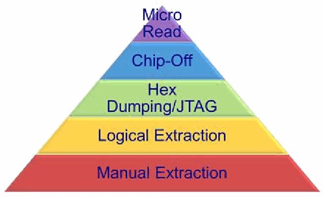
モバイル端末のデータ抽出方法を技術的な深さで並べたピラミッド。手動抽出、論理抽出、16進ダンプ／JTAG、チップ取り外し、マイクロリードの順に高度になる。
Figure 6: Mobile Device Tool Classification System
図6：モバイルデバイスツール分類システム
The following discussion provides a more detailed description of each level and the methods used for data extraction.
以下では、各レベルとデータ抽出に用いられる方法をより詳しく説明する。
•Manual Extraction – A manual extraction method involves viewing the data content stored on a mobile device. The content displayed on the LCD screen requires the manual manipulation of the buttons, keyboard or touchscreen to view the contents of the mobile device. Information discovered may be recorded using an external digital camera. At this level, it is impossible to recover deleted information. Some tools have been developed to provide the forensic examiner with the ability to document and categorize the information recorded more quickly. Nevertheless, if there is a large amount of data to be captured, a manual extraction can be very time consuming and the data on the device may be inadvertently modified, deleted or overwritten as a result of the examination. Manual extractions become increasingly difficult and perhaps unachievable when encountering a broken/missing LCD screen or a damaged/missing keyboard interface. Additional challenges occur when the device is configured to display a language unknown to the investigator; this may cause difficulty in successful menu navigation.
•手動抽出 — 手動抽出では、モバイルデバイスに保存されたデータ内容を閲覧する。LCD画面に表示された内容を見るには、ボタン、キーボード、またはタッチスクリーンを手動操作する必要がある。発見した情報は外部デジタルカメラで記録できる場合がある（may）。このレベルでは削除済み情報を回復することはできない。検査担当者が記録情報をより迅速に文書化・分類できるツールも開発されている。それでも、大量のデータを取得する場合、手動抽出は非常に時間がかかる場合がある（can）。検査の結果、デバイス上のデータが誤って変更、削除、または上書きされる可能性がある（may）。LCD画面が破損・欠落している、またはキーボード・インターフェースが損傷・欠落している場合、手動抽出は次第に困難になり、実施できないこともある。デバイスが調査員の知らない言語で表示される設定になっている場合は、さらに課題が生じ、メニュー操作を適切に行うことが難しくなることがある（may）。
未レビュー訳•Logical Extraction – Connectivity between a mobile device and the forensics workstation is achieved with a connection using either a wired (e.g., USB or RS-232) or wireless (e.g., IrDA, WiFi, or Bluetooth) connection. The examiner should be aware of the issues associated when selecting a specific connectivity method, as different connection types and associated protocols may result in data being modified (e.g., unread SMS) or different amounts or types of data being extracted. Logical extraction tools begin by sending a series of commands over the established interface from the computer to the mobile device. The mobile device responds based upon the command request. The response (mobile device data) is sent back to the workstation and presented to the forensics examiner for reporting purposes.
•論理抽出 — 有線（例：USBまたはRS-232）または無線（例：IrDA、WiFi、Bluetooth）接続によって、モバイルデバイスとフォレンジック・ワークステーションとの間に接続を確立する。検査担当者は、特定の接続方式を選択する際に関連する問題を認識すべきである（should）。接続の種類と関連プロトコルによっては、データ（例：未読SMS）が変更されたり、抽出されるデータの量や種類が異なったりする場合がある（may）。論理抽出ツールは、確立されたインターフェースを介してコンピュータからモバイルデバイスへ一連のコマンドを送信する。モバイルデバイスは要求されたコマンドに応じて応答し、応答（モバイルデバイスのデータ）はワークステーションに送り返され、報告用に検査担当者へ提示される。
•Hex Dumping and JTAG – Hex Dumping and Joint Test Action Group (JTAG) extraction methods afford the forensic examiner more direct access to the raw information stored in flash memory. One challenge with these extraction methods is the ability of a given tool to parse and decode the captured data. Providing the forensic examiner with a logical view of the file system, and reporting on other data remnants outside the file system that may be present are challenging. For example, all data contained within a given flash memory chip may not be acquired, as many tools, such as flasher boxes, may only be able to extract specific sections of memory [Bre07]. Methods used at this level require connectivity (e.g., cable or WiFi) between the mobile device and the forensic workstation.
•ヘキサダンプおよびJTAG — ヘキサダンプおよびJoint Test Action Group（JTAG）による抽出方法では、フラッシュメモリ内に保存された生情報へ、より直接的にアクセスできる。これらの抽出方法の課題の一つは、取得データを解析・デコードできるかどうかである。ファイルシステムの論理ビューをフォレンジック検査担当者に提示し、ファイルシステム外に存在する可能性のある残存データ（may）を報告することは難しい。たとえば、フラッシャーボックスなど多くのツールでは、メモリの特定領域しか抽出できない場合がある（may）。そのため、特定のフラッシュメモリチップ内のすべてのデータを取得できない場合がある（may not）[Bre07]。このレベルの方法では、モバイルデバイスとフォレンジック・ワークステーション間の接続（例：ケーブルまたはWiFi）が必要である。
未レビュー訳Hex Dumping – this technique is the more commonly used method by tools at this level. This involves uploading a modified boot loader (or other software) into a protected area of memory (e.g., RAM) on the device. This upload process is accomplished by connecting the mobile device’s data port to a flasher box and the flasher box is in turn connected to the forensic workstation. A series of commands is sent from the flasher box to the mobile device to place it in a diagnostic mode. Once in diagnostic mode, the flasher box captures all (or sections) of flash memory and sends it to the forensic workstation over the same communications link used for the upload. Some flasher boxes work this way or they may use a proprietary interface for memory extractions. Rare cases exist where extractions can be accomplished using WiFi (i.e., early Jonathan Zdziarski (JZ) Methods) [Zdz12].
ヘキサダンプ — このレベルのツールでより一般的に使われる方法である。デバイス上のメモリの保護領域（例：RAM）に、改変したブートローダー（またはその他のソフトウェア）をアップロードする。このアップロードは、モバイルデバイスのデータポートをフラッシャーボックスに接続し、そのフラッシャーボックスをフォレンジック・ワークステーションに接続して行う。フラッシャーボックスからモバイルデバイスに一連のコマンドを送信し、デバイスを診断モードに移行させる。診断モードになると、フラッシャーボックスはフラッシュメモリの全体（または一部）を取得し、アップロードに使ったものと同じ通信リンクを介してフォレンジック・ワークステーションに送信する。一部のフラッシャーボックスはこの方法で動作するが、メモリ抽出に独自インターフェースを使用する場合もある（may）。WiFiを用いて抽出を行える（can）まれな事例もある（すなわち、初期のJonathan Zdziarski（JZ）方式）[Zdz12]。
JTAG – Many manufacturers support the JTAG standard, which defines a common test interface for processor, memory, and other semiconductor chips. Forensic examiners can communicate with a JTAG-compliant component by utilizing special purpose standalone programmer devices to probe defined test points [Wil05]. The JTAG testing unit can be used to request memory addresses from the JTAG-compliant component and accept the response for storage and rendition [Bre06]. JTAG gives specialists another avenue for imaging devices that are locked or devices that may have minor damage and cannot be properly interfaced otherwise. This method involves attaching a cable (or wiring harness) from a workstation to the mobile device’s JTAG interface and access memory via the device’s microprocessor to produce an image [Bre07]. JTAG extractions differ mainly from Hex Dumping in that it is invasive as access to the connections frequently require that the examiner dismantle some (or most) of a mobile device to obtain access to establish the wiring connections.
JTAG — 多くの製造元は、プロセッサ、メモリ、その他の半導体チップ用共通テストインターフェースを規定するJTAG規格をサポートする。フォレンジック検査担当者は、専用のスタンドアロン型プログラマ装置を使って規定されたテストポイントをプローブすることで、JTAG準拠コンポーネントと通信できる（can）[Wil05]。JTAGテスト装置は、JTAG準拠コンポーネントにメモリアドレスを要求し、その応答を受け取って保存・表示するために使用できる（can）[Bre06]。JTAGは、ロックされているデバイスや軽微な損傷があり他の方法では適切に接続できないデバイスをイメージ化するための別の手段となり得る（may）。この方法では、ワークステーションからモバイルデバイスのJTAGインターフェースにケーブル（または配線ハーネス）を接続し、デバイスのマイクロプロセッサ経由でメモリにアクセスしてイメージを生成する[Bre07]。JTAG抽出がヘキサダンプと主に異なる点は、接続部にアクセスするために検査担当者がモバイルデバイスの一部（または大部分）を分解し、配線接続を確立する必要があるため、侵襲的であることである。
未レビュー訳Flasher boxes are small devices originally designed with the intent to service or upgrade mobile devices. Physical acquisitions frequently require the use of a flasher box to facilitate the extraction of data from a mobile device. The flasher box aides the examiner by communicating with the mobile device using diagnostic protocols to communicate with the memory chip. This communication may utilize the mobile device’s operating system or may bypass it altogether and communicate directly to the chip [Jon10]. Flasher boxes are often accompanied by software to facilitate the data extraction process working in conjunction with the hardware. Many flasher box software packages provide the added functionality of recovering passwords from mobile device memory as well in some configurations. Although acquisition methods differ between flasher boxes, a general process is used [Bre07]. Limitations of the use of flasher boxes include the following:
フラッシャーボックスは、元々モバイルデバイスの保守またはアップグレードを目的に設計された小型装置である。物理取得では、モバイルデバイスからデータを抽出するため、フラッシャーボックスが頻繁に必要となる。フラッシャーボックスは、診断プロトコルを用いてモバイルデバイスと通信し、メモリチップにアクセスすることで検査担当者を支援する。この通信では、モバイルデバイスのオペレーティングシステムを利用する場合があり（may）、OSを完全に迂回してチップと直接通信する場合もある（may）[Jon10]。フラッシャーボックスには、ハードウェアと連携してデータ抽出を容易にするソフトウェアが付属することが多い。多くのフラッシャーボックス用ソフトウェアパッケージでは、一部の構成でモバイルデバイスのメモリからパスワードを回復する機能も追加提供される。フラッシャーボックスによって取得方法は異なるが、一般的な処理手順が用いられる[Bre07]。フラッシャーボックスの使用上の制約は次のとおりである：
•Rebooting of the mobile device is frequently required to begin the extraction process; this may cause authentication mechanisms to activate preventing further analysis.
•抽出を開始するには、モバイルデバイスの再起動が頻繁に必要となる。これにより認証機構が起動し、以後の分析ができなくなる場合がある（may）。
•Many flasher boxes recover the data in an encrypted format requiring the examiner to either use the software provided by the flasher box manufacturer to decrypt the data or may require reverse engineering the data’s encryption scheme by the analyst.
•多くのフラッシャーボックスは暗号化形式でデータを回復するため、検査担当者はメーカー提供のソフトウェアでデータを復号するか、分析担当者がデータの暗号化方式をリバースエンジニアリングする必要がある場合がある（may）。
未レビュー訳•Many phone models do not provide the acquisition of the entire memory range within a given mobile device. Only certain ranges may be available for certain mobile devices
•多くの携帯電話機種では、モバイルデバイス内のメモリ範囲全体を取得できない。特定のモバイルデバイスでは一部の領域しか利用できない場合がある（may）。
•The flasher box service software often has many buttons that are labeled with nearly identical names. This confusion may easily lead even an experienced examiner to press the wrong button, erasing the contents of the mobile device instead of dumping the memory.
•フラッシャーボックスのサービスソフトウェアでは、ほぼ同じ名前のボタンが多数使われていることが多い。このため、経験豊富な検査担当者でさえ誤ったボタンを押し、メモリをダンプする代わりにモバイルデバイスの内容を消去してしまう場合がある（may）。
未レビュー訳•Lack of documentation on the use of the flasher box tools is common. Extraction methods are frequently shared on forums supported by the vendor and moderated by more seasoned users. Caution should be taken when advice is provided, as not all the information provided is correct.
•フラッシャーボックスツールの使用方法に関する文書が不足していることはよくある。抽出方法は、ベンダーが支援し、経験豊富なユーザーがモデレートするフォーラムで共有されることが多い。助言が提示された際には注意すべきである（should）。提供された情報がすべて正しいとは限らない。
•Forensic Use: Nearly all flasher boxes were not designed with a forensic use as its intended purpose. Examiners must be experienced in the use of flasher boxes and should understand the proper use and function of flasher boxes.
•フォレンジック用途：ほぼすべてのフラッシャーボックスは、本来フォレンジック用途を目的に設計されたものではない。検査担当者はフラッシャーボックスの使用経験を積み、適切な使用法と機能を理解すべきである（should）。
未レビュー訳•Despite all of these limitations, use of a flasher box is a viable option for many forensics cases. Proper training, experience and understating of how the tools work are the keys to success.
•こうした制約があるものの、多くのフォレンジック案件でフラッシャーボックスの使用は有効な選択肢である。適切な訓練、経験、およびツールの動作に関する理解が成功の鍵である。
未レビュー訳A wide range of technical expertise and proper training is required for extracting and analyzing binary images with these methods, including locating and connecting to JTAG ports, creating customized boot loaders and recreating file systems.
これらの方法でバイナリイメージを抽出・分析するには、幅広い技術的専門知識と適切な訓練が必要であり、JTAGポートの特定・接続、カスタム・ブートローダーの作成、ファイルシステムの再構築が含まれる。
•Chip-Off – Chip-Off methods refer to the acquisition of data directly from a mobile device’s flash memory. This extraction requires the physical removal of flash memory. Chip-Off provides examiners with the ability to create a binary image of the removed chip. In order to provide the examiner with data in a contiguous binary format file, the wear-leveling algorithm must be reverse engineered. Once complete, the binary image may then be analyzed. This type of acquisition is most closely related to physical imaging a hard disk drive as in traditional digital forensics. Extensive training is required in order to successfully perform extractions at this level. Chip-Off extractions are challenging based on a wide variety of chip types, a myriad of raw data formats, and the risk of causing physical damage to the chip during the extraction process. Due to the complexities related to Chip-Off, JTAG extraction is more common.
•チップオフ — チップオフ方式は、モバイルデバイスのフラッシュメモリから直接データを取得する方法を指す。この抽出ではフラッシュメモリを物理的に取り外す必要がある。チップオフにより、検査担当者は取り外したチップのバイナリイメージを作成できる。検査担当者に連続したバイナリ形式のファイルでデータを提供するには、ウェアレベリング・アルゴリズムをリバースエンジニアリングしなければならない（must）。完了後、バイナリイメージを分析できる場合がある（may）。この取得方法は、従来のデジタル・フォレンジックにおけるハードディスクドライブの物理イメージ作成に最も近い。すべてのレベルで抽出を成功させるには、広範な訓練が必要である。チップの種類が多様で、生データ形式が多岐にわたり、抽出中にチップを物理的に損傷するリスクがあるため、チップオフ抽出は困難である。チップオフに伴う複雑さから、JTAG抽出の方が一般的である。
未レビュー訳•Micro Read – A Micro Read involves recording the physical observation of the gates on a NAND or NOR chip with the use of an electron microscope. Due to the extreme technicalities involved when performing a Micro Read, this level of acquisition would only be attempted for high profile cases equivalent to a national security crisis after all other acquisition techniques have been exhausted. Successful acquisition at this level would require a team of experts, proper equipment, time and in-depth knowledge of proprietary information. There are no known U.S. Law Enforcement agencies performing acquisitions at this level. Currently, there are no commercially available Micro Read tools.
•マイクロリード — マイクロリードでは、電子顕微鏡を用いてNANDまたはNORチップのゲートを物理的に観察し、その記録を作成する。マイクロリード実施に伴う技術的難度が極めて高いため、このレベルの取得は、他の取得技法をすべて使い尽くした後、国家安全保障危機に相当する重大事件に限って試みられる。レベルで取得を成功させるには、専門家チーム、適切な設備、時間、および専有情報に関する深い知識が必要となる。現在、このレベルの取得を実施している米国の法執行機関は知られていない。現在、市販のマイクロリードツールは存在しない。
未レビュー訳Table 3 provides a classification of some tools currently used in mobile device investigations, and identifies the facilities they provide: acquisition, examination, or reporting. Additional tools do exist, but only those familiar to the authors are discussed. For a more complete an up to date list of forensic tools refer to: NIST Tool Taxonomy (http://www.cftt.nist.gov/tool_catalog/populated_taxonomy/). The tools listed in Table 3 are grouped by level starting with Level 1 (Manual Extraction) through Level 4 (Chip-Off).
表3は、現在モバイルデバイス調査で使用されている一部のツールを分類し、それらが提供する機能（取得、検査、報告）を示す。ほかにもツールは存在するが、著者らが把握しているもののみを扱う。より完全かつ最新のフォレンジックツール一覧については、NIST Tool Taxonomy（http://www.cftt.nist.gov/tool_catalog/populated_taxonomy/）を参照されたい。表3に挙げたツールは、レベル1（手動抽出）からレベル4（チップオフ）まで、レベル別にまとめている。
The following describes each of the headings contained within Table 3:
以下に、表3の各見出しの意味を示す：
•Tool – tool name
•ツール — ツール名
•† Denotes a tool that supports the logical acquisition of a UICC
•†は、UICCの論理取得をサポートするツールを示す。
•‡ Denotes a tool that supports the logical acquisition of a UICC and the creation of a Cellular Network Isolation Card (CNIC)
•‡は、UICCの論理取得とCellular Network Isolation Card（CNIC）の作成をサポートするツールを示す。
•Acquisition Level – level(s) at which the tool performs data extractions: 1- Manual extraction, 2 - Logical extraction, 3 - Physical extraction, 4 - Chip-off, 5 - Micro Read
•取得レベル — ツールがデータ抽出を行うレベル：1 — 手動抽出、2 — 論理抽出、3 — 物理抽出、4 — チップオフ、5 — マイクロリード
未レビュー訳•Network Type – acquisition of devices operating over specified networks
•ネットワーク種別 — 指定ネットワークで動作するデバイスの取得
•Forensic Tool – is the tool specifically designed for forensic acquisition
•フォレンジックツール — フォレンジック取得用に特別に設計されたツールかどうか
•Examination/Analysis – provides the examiner with the ability to perform examination or analysis of acquired data
•調査／分析 — 取得データの調査または分析を行う機能を検査担当者に提供する
未レビュー訳•Reporting – provides the examiner with the ability to generate reports
•報告 — 検査担当者が報告書を生成する機能を提供する
未レビュー訳•3rd Party Tool Image Analysis (3PIA) – supports importing of raw data produced from another manufacturer’s tool
•サードパーティツールのイメージ分析（3PIA）— 他の製造元のツールが生成した生データのインポートをサポートする
未レビュー訳•Chinese Chipset Support (CCS) – mobile devices containing Chinese chipsets are increasing as they continue to flood the international market. Some mobile forensic tools provide either a logical and/or physical extraction solution.
•中国製チップセット対応（CCS）— 中国製チップセットを搭載したモバイルデバイスは、国際市場に流通するにつれて増加している。一部のモバイル・フォレンジックツールは、論理抽出または物理抽出のソリューションを提供する。
•Cables/Hardware Available (C/HW) – cables are provided
•ケーブル／ハードウェア提供状況（C/HW）— ケーブルが提供される
未レビュー訳Table 3: Mobile Device Forensic Tools
表3：モバイルデバイス・フォレンジックツール
未レビュー訳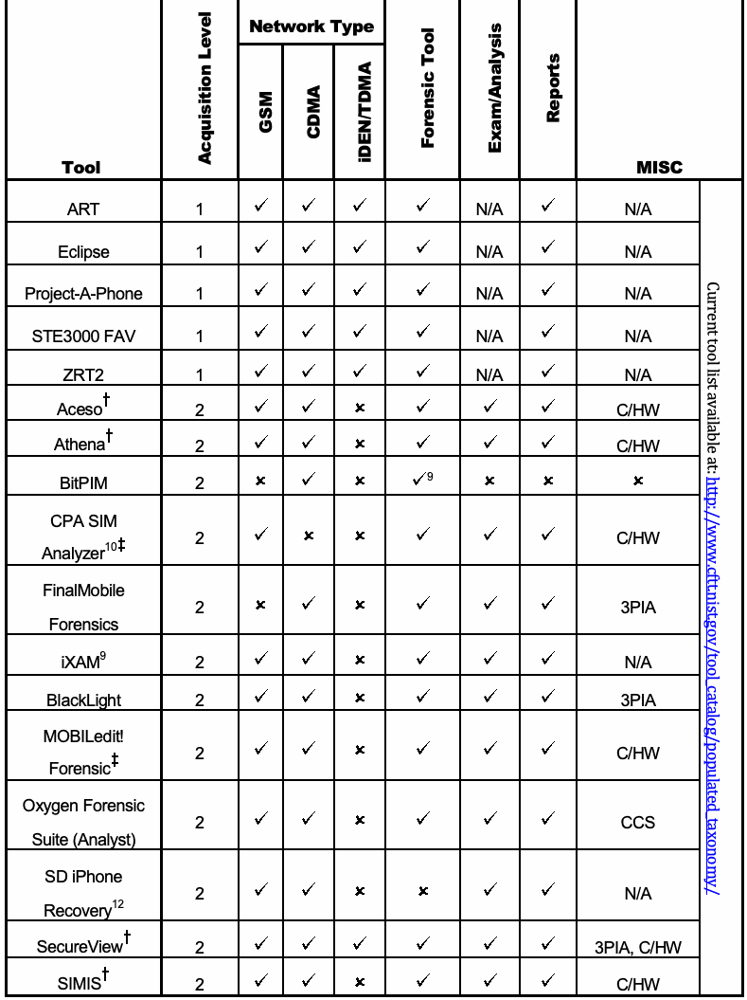
抽出したテキスト（原本と未照合・参考）
| Tool | le v e L n o it is iu q c A | Network Type | lo o T c is n e r o F | s is y la n A /m a x E | s t r o p e R | MISC |
| M S G / A M D C / A M D T /N E D i | ||||||
| ART | 1 | / / | | N/A | | N/A / C u r r e n t to o l lis t a v a ila b le a t: h ttp :/ / w w w .c ftt.n is t.g o v / to o l_ c a ta lo g / p o p u la te d _ ta x o n o m y / |
| Eclipse | 1 | / / | | N/A | | N/A |
| Project-A-Phone | 1 | / / | | N/A | | N/A |
| STE3000 FAV | 1 | / / | | N/A | | N/A |
| ZRT2 | 1 | / / | | N/A | | N/A |
| † Aceso | 2 | / / | | | | C/HW |
| † Athena | 2 | / / | | | | C/HW |
| BitPIM | 2 | / / | 9 | | | |
| CPA SIM Analyzer10‡ | 2 | / / | | | | C/HW |
| FinalMobile Forensics | 2 | / / | | | | 3PIA |
| iXAM9 | 2 | / / | | | | N/A |
| BlackLight | 2 | / / | | | | 3PIA |
| MOBILedit! ‡ Forensic | 2 | / / | | | | C/HW |
| Oxygen Forensic Suite (Analyst) | 2 | / / | | | | CCS |
| SD iPhone Recovery12 | 2 | / / | | | | N/A |
| † SecureView | 2 | / / | | | | 3PIA, C/HW |
| † SIMIS | 2 | / / | | | | C/HW |
抽出したテキストの訳（原本と未照合・参考）
| ツール | 取得レベル | ネットワーク種別 | フォレンジックツール | 調査／分析 | 報告 | その他 |
| iDEN/TDMA/CDMA/GSM | ||||||
| ART | 1 | / / | | N/A | | N/A / C u r r e n t to o l lis t a v a ila b le a t: h ttp :/ / w w w .c ftt.n is t.g o v / to o l_ c a ta lo g / p o p u la te d _ ta x o n o m y / |
| Eclipse | 1 | / / | | N/A | | N/A |
| Project-A-Phone | 1 | / / | | N/A | | N/A |
| STE3000 FAV | 1 | / / | | N/A | | N/A |
| ZRT2 | 1 | / / | | N/A | | N/A |
| † Aceso | 2 | / / | | | | C/HW |
| † Athena | 2 | / / | | | | C/HW |
| BitPIM | 2 | / / | 9 | | | |
| CPA SIM Analyzer10‡ | 2 | / / | | | | C/HW |
| FinalMobile Forensics | 2 | / / | | | | 3PIA |
| iXAM9 | 2 | / / | | | | N/A |
| BlackLight | 2 | / / | | | | 3PIA |
| MOBILedit! ‡ Forensic | 2 | / / | | | | C/HW |
| Oxygen Forensic Suite (Analyst) | 2 | / / | | | | CCS |
| SD iPhone Recovery12 | 2 | / / | | | | N/A |
| † SecureView | 2 | / / | | | | 3PIA, C/HW |
| † SIMIS | 2 | / / | | | | C/HW |
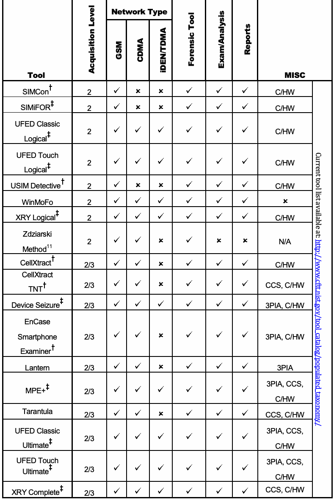
抽出したテキスト（原本と未照合・参考）
| Tool | le v e L n o it is iu q c A | Network Type | lo o T c is n e r o F | s is y la n A /m a x E | s t r o p e R | MISC |
| M S G / A M D C / A M D T /N E D i | ||||||
| † SIMCon | 2 | / / | | | | C/HW / C u r r e n t to o l lis t a v a ila b le a t: h ttp :/ / w w w .c ftt.n is t.g o v / to o l_ c a ta lo g / p o p u la te d _ ta x o n o m y / |
| ‡ SIMiFOR | 2 | / / | | | | C/HW |
| UFED Classic ‡ Logical | 2 | / / | | | | C/HW |
| UFED Touch ‡ Logical | 2 | / / | | | | C/HW |
| † USIM Detective | 2 | / / | | | | C/HW |
| WinMoFo | 2 | / / | | | | |
| ‡ XRY Logical | 2 | / / | | | | C/HW |
| Zdziarski Method11 | 2 | / / | | | | N/A |
| † CellXtract | 2/3 | / / | | | | C/HW |
| CellXtract † TNT | 2/3 | / / | | | | CCS, C/HW |
| ‡ Device Seizure | 2/3 | / / | | | | 3PIA, C/HW |
| EnCase Smartphone † Examiner | 2/3 | / / | | | | 3PIA, C/HW |
| Lantern | 2/3 | / / | | | | 3PIA |
| ‡ MPE+ | 2/3 | / / | | | | 3PIA, CCS, C/HW |
| Tarantula | 2/3 | / / | | | | CCS, C/HW |
| UFED Classic ‡ Ultimate | 2/3 | / / | | | | 3PIA, CCS, C/HW |
| UFED Touch ‡ Ultimate | 2/3 | / / | | | | 3PIA, CCS, C/HW |
| ‡ XRY Complete | 2/3 | / / | | | | CCS, C/HW |
抽出したテキストの訳（原本と未照合・参考）
| ツール | 取得レベル | ネットワーク種別 | フォレンジックツール | 調査／分析 | 報告 | その他 |
| iDEN/TDMA/CDMA/GSM | ||||||
| † SIMCon | 2 | / / | | | | C/HW / C u r r e n t to o l lis t a v a ila b le a t: h ttp :/ / w w w .c ftt.n is t.g o v / to o l_ c a ta lo g / p o p u la te d _ ta x o n o m y / |
| ‡ SIMiFOR | 2 | / / | | | | C/HW |
| UFED Classic ‡ Logical | 2 | / / | | | | C/HW |
| UFED Touch ‡ Logical | 2 | / / | | | | C/HW |
| † USIM Detective | 2 | / / | | | | C/HW |
| WinMoFo | 2 | / / | | | | |
| ‡ XRY Logical | 2 | / / | | | | C/HW |
| Zdziarski Method11 | 2 | / / | | | | N/A |
| † CellXtract | 2/3 | / / | | | | C/HW |
| CellXtract † TNT | 2/3 | / / | | | | CCS, C/HW |
| ‡ Device Seizure | 2/3 | / / | | | | 3PIA, C/HW |
| EnCase Smartphone † Examiner | 2/3 | / / | | | | 3PIA, C/HW |
| Lantern | 2/3 | / / | | | | 3PIA |
| ‡ MPE+ | 2/3 | / / | | | | 3PIA, CCS, C/HW |
| Tarantula | 2/3 | / / | | | | CCS, C/HW |
| UFED Classic ‡ Ultimate | 2/3 | / / | | | | 3PIA, CCS, C/HW |
| UFED Touch ‡ Ultimate | 2/3 | / / | | | | 3PIA, CCS, C/HW |
| ‡ XRY Complete | 2/3 | / / | | | | CCS, C/HW |
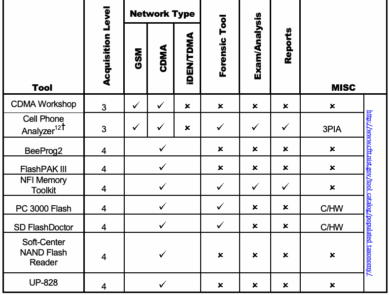
抽出したテキスト（原本と未照合・参考）
| Tool | le v e L n o it is iu q c A | Network Type | lo o T c is n e r o F | s is y la n A /m a x E | s t r o p e R | MISC |
| M S G / A M D C / A M D T /N E D i | ||||||
| CDMA Workshop | 3 | / / | | | | / h ttp :/ / w w w .cftt.n ist.g o v / to o l_ca ta lo g / p o p u la te d _ta x o n o m y / |
| Cell Phone Analyzer12† | 3 | / / | | | | 3PIA |
| BeeProg2 | 4 | | | | | |
| FlashPAK III | 4 | | | | | |
| NFI Memory Toolkit | 4 | | | | | |
| PC 3000 Flash | 4 | | | | | C/HW |
| SD FlashDoctor | 4 | | | | | C/HW |
| Soft-Center NAND Flash Reader | 4 | | | | | |
| UP-828 | 4 | | | | | |
抽出したテキストの訳（原本と未照合・参考）
| ツール | 取得レベル | ネットワーク種別 | フォレンジックツール | 調査／分析 | 報告 | その他 |
| iDEN/TDMA/CDMA/GSM | ||||||
| CDMA Workshop | 3 | / / | | | | / h ttp :/ / w w w .cftt.n ist.g o v / to o l_ca ta lo g / p o p u la te d _ta x o n o m y / |
| Cell Phone Analyzer12† | 3 | / / | | | | 3PIA |
| BeeProg2 | 4 | | | | | |
| FlashPAK III | 4 | | | | | |
| NFI Memory Toolkit | 4 | | | | | |
| PC 3000 Flash | 4 | | | | | C/HW |
| SD FlashDoctor | 4 | | | | | C/HW |
| Soft-Center NAND Flash Reader | 4 | | | | | |
| UP-828 | 4 | | | | | |
†Denotes a tool that supports the logical acquisition of a UICC
†は、UICCの論理取得をサポートするツールを示す。
未レビュー訳‡Denotes a tool that supports the logical acquisition of a UICC and the creation of a CNIC
‡は、UICCの論理取得とCNICの作成をサポートするツールを示す。
未レビュー訳MISC: 3rd Party Tool Image Analysis (3PIA), Chinese Chipset Support (CCS), Cables/Hardware Available (C/HW)
その他：サードパーティツールのイメージ分析（3PIA）、中国製チップセット対応（CCS）、ケーブル／ハードウェア提供状況（C/HW）
未レビュー訳3.2 UICC Tools
3.2 UICCツール
A few mobile forensics tools deal exclusively with UICCs. These tools perform a direct read of a UICC’s contents via a Personal Computer/Smart Card (PC/SC) reader, as opposed to an indirect read via the mobile device. The richness and scope of data acquired varies with the capabilities and features of the tool. The majority of UICC exclusive tools acquire the following data: International Mobile Subscriber Identity (IMSI), Integrated Circuit Card ID (ICCID), Abbreviated Dialing Numbers (ADN), Last Numbers Dialed (LND), SMS messages, and Location Information (LOCI) [Aye12].
UICCのみを対象とするモバイル・フォレンジックツールが少数存在する。これらのツールは、モバイルデバイスを介した間接読み取りではなく、Personal Computer/Smart Card（PC/SC）リーダーを用いてUICCの内容を直接読み取る。取得データの豊富さと範囲は、ツールの機能・性能によって異なる。UICC専用ツールの大半は、International Mobile Subscriber Identity（IMSI）、Integrated Circuit Card ID（ICCID）、Abbreviated Dialing Numbers（ADN）、Last Numbers Dialed（LND）、SMSメッセージ、およびLocation Information（LOCI）を取得する[Aye12]。
Most tools provide additional information such as deleted SMS messages, properly rendered foreign language SMS and EMS messages. They also attempt to translate certain data such as country and network operator codes into meaningful names, and provide other facilities such as PIN administration.
多くのツールは、削除済みSMS、適切に表示された外国語のSMSおよびEMSメッセージなどの追加情報を提供する。また、国名やネットワーク事業者コードなどのデータを意味のある名称に変換しようと試み、PIN管理などの機能も提供する。
CSIM partitions on UICCs are being used with increasing frequency for LTE enabled mobile devices. At this time, few tools support the extraction of CSIM partition data as most only support extraction of GSM and USIM partitions. CSIM data may prove to be of increasing forensic importance as this technology evolves.
LTE対応モバイルデバイスでは、UICC上のCSIMパーティションがますます頻繁に使用されている。現時点でCSIMパーティションデータの抽出をサポートするツールは少なく、多くはGSMおよびUSIMパーティションの抽出のみをサポートする。この技術の進化に伴い、CSIMデータはフォレンジック上ますます重要になる場合がある（may）。
3.3 Obstructed Devices
3.3 アクセスが妨げられたデバイス
The following sections discuss techniques for bypassing an obstructed device i.e., a mobile device that requires successful authentication using a password or some other means to obtain access to the device. A number of ways exist to recover data from obstructed devices. These methods fall into one of three categories: software-based, hardware-based and investigative. Common obstructed devices include those with missing identity modules, PIN-enabled UICCs, or an enabled mobile device lock. Password locked and encrypted memory cards provide a user with additional means to protect data. This protection may make recovery of such data more complex. Content encryption capabilities are offered as a standard feature in many mobile devices or may be available through add-on applications. Software and hardware-based methods are often directed at a particular device or narrow class of device.
以下の節では、アクセスが妨げられたデバイス、すなわちデバイスにアクセスするためにパスワードその他の手段による認証の成功を必要とするモバイルデバイスを回避する技法について説明する。アクセスが妨げられたデバイスからデータを回復する方法はいくつか存在する。これらの方法は、ソフトウェアベース、ハードウェアベース、調査的手法の3種類のいずれかに分類される。アクセスが妨げられたデバイスとして一般的なものには、識別モジュールが欠落しているもの、PINが有効化されたUICCを持つもの、またはモバイルデバイスロックが有効になっているものがある。パスワードでロックされたメモリカードや暗号化されたメモリカードは、データを保護する追加の手段をユーザーに提供する。この保護により、そうしたデータの回復がより複雑になる場合がある（may）。コンテンツ暗号化機能は、多くのモバイルデバイスで標準機能として提供されているか、追加アプリケーションを通じて利用可能な場合がある（may）。ソフトウェアベースおよびハードウェアベースの方法は、特定のデバイスまたは限られた種類のデバイスを対象とすることが多い。
As mobile forensics tools have evolved, they have begun to provide automated functions allowing examiners to bypass many security mechanisms as a part of their products. For instance, some tools provide an automated function to recover passwords from locked mobile devices. In developing a method, the following sections provide actions that should be considered for determining possible approaches.
モバイル・フォレンジックツールは進化するにつれて、検査担当者が多くのセキュリティ機構を回避できるようにする自動機能を製品の一部として提供し始めている。たとえば、一部のツールは、ロックされたモバイルデバイスからパスワードを回復する自動機能を提供する。以下の節では、手法を策定するにあたり、取り得るアプローチを判断するために検討すべき（should）処置を示す。
3.3.1 Software and Hardware Based Methods
3.3.1 ソフトウェアベースおよびハードウェアベースの方法
Software-based methods used to break or bypass authentication mechanisms have begun to appear. For instance, some tools provide an automated function to recover passwords from locked mobile devices. This type of functionality varies greatly between mobile forensic tools and the devices models that are supported.
認証機構を破る、または回避するためのソフトウェアベースの方法が登場し始めている。たとえば、一部のツールにはロックされたモバイルデバイスからパスワードを回復する自動機能がある。この機能は、モバイル・フォレンジックツールごと、またサポート対象のデバイス機種ごとに大きく異なる。
Hardware-based methods involve a combination of software and hardware to break or bypass authentication mechanisms and gain access to the device. For example, the value of a mobile device lock can be readily recovered from a memory dump of certain devices, allowing for a follow-on logical acquisition. JTAG and flasher boxes are often used this way to circumvent authentication mechanisms. Device-specific attacks, such as cold boot attacks, exist to bypass authentication mechanisms. Cold boot attacks have the ability to recover passwords from locked Android based devices by cooling the device 10 degrees below Celsius followed by disconnecting and reconnecting the battery in 500ms intervals [Mül12].
ハードウェアベースの方法では、ソフトウェアとハードウェアを組み合わせて認証機構を破る、または回避し、デバイスへのアクセスを得る。たとえば、特定のデバイスでは、メモリダンプからモバイルデバイスロックの値を容易に回復でき（can）、その後に論理取得を行える。JTAGやフラッシャーボックスは、認証機構を回避するためにこのように使われることが多い。認証機構を回避するための、コールドブート攻撃などのデバイス固有の攻撃も存在する。コールドブート攻撃は、デバイスを摂氏零下10度に冷却した後、500ms間隔でバッテリーの取り外しと再接続を行うことで、ロックされたAndroidベースのデバイスからパスワードを回復する能力を持つ[Mül12]。
Few general-purpose hardware-based methods apply to a general class of mobile devices. Most of the techniques are tailored for a specific model within a class.
汎用のハードウェアベース手法で、モバイルデバイスの幅広い種類に適用できるものは少ない。ほとんどの技法は、特定の種類の中の特定機種に合わせて設計されている。
3.3.2 Investigative Methods
3.3.2 調査手法
Investigative methods are procedures the investigative team can apply, which require no forensic software or hardware tools. The most obvious methods are the following:
調査的手法とは、調査チームが適用できる（can）手順であり、フォレンジック用のソフトウェアツールもハードウェアツールも必要としない。最も明白な方法は以下のとおりである：
•Ask the owner – If a device is protected with a password, PIN or other authentication mechanism involving knowledge-based authentication, the owner may be queried for this information during an interview.
•所有者に尋ねる — デバイスがパスワード、PIN、または知識ベース認証を伴うその他の認証機構で保護されている場合、聞き取りの際に所有者へその情報を尋ねることができる（may）。
•Review seized material – Passwords or PINs may be written down on a slip of paper and kept with or near the phone, at a desktop computer used to synchronize with the mobile device, or with the owner, such as in a wallet, and may be recovered through visual inspection. Packaging material for a UICC or a mobile device may disclose a PIN Unlocking Key (PUK) that may be used to reset the value of the PIN. Device specific vulnerabilities may also be exploited, such as Smudge attacks. Smudge attacks involved careful analysis of the surface of a touch screen device to determine the most recent gesture lock used [Avi10].
•押収物を確認する — パスワードやPINが紙片に書き留められ、電話機の近く、モバイルデバイスとの同期に使うデスクトップコンピュータ、または財布の中など所有者の手元に保管されている場合があり（may）、目視検査で発見できる場合がある（may）。UICCまたはモバイルデバイスの包装材に、PINの値をリセットするために使用できる（may）PIN Unlocking Key（PUK）が記載されている場合がある（may）。Smudge攻撃など、デバイス固有の脆弱性を悪用できる場合もある（may）。Smudge攻撃では、タッチスクリーン端末の表面を慎重に分析し、直近に使われたジェスチャーロックを特定する[Avi10]。
•Ask the service provider – If a GSM mobile device is protected with a PIN-enabled UICC, the identifier (i.e., the ICCID) may be obtained from it and used to request the PUK from the service provider and reset the PIN. Some service providers offer the ability to retrieve the PUK online, by entering the telephone number of the mobile device and specific subscriber information into public web pages set up for this purpose. Additionally, information may be obtained by contacting the device manufacturer (e.g., Apple).
•サービスプロバイダに尋ねる — GSMモバイルデバイスがPIN保護されたUICCで保護されている場合、その識別子（すなわちICCID）を取得し、サービスプロバイダにPUKを請求してPINをリセットするために使用できる（may）。サービスプロバイダの中には、この目的で設けられた公開ウェブページにモバイルデバイスの電話番号および加入者の特定情報を入力すると、オンラインでPUKを取得できるようにしているところもある。さらに、デバイス製造元（例：Apple）に問い合わせて情報を得られる場合がある（may）。
Mobile device users may choose weak passwords to secure their device such as: 1-1-1-1, 0-0-0-0 or 1-2-3-4. Some of these numeric combinations are device default passcodes provided by the manufacturer. It is not recommended to attempt to unlock a device using these combinations due to several risk factors. They may include permanent wiping of mobile device memory, enabling additional security mechanisms (e.g., PIN/PUK) or initializing destructive applications. Mobile devices generally have a defined number of attempts before enabling further security precautions. Before making any attempts at unlocking a mobile device, it is recommended to consider the number of attempts left. There may be an instance where an examiner may choose to accept these risks in cases where this is the only option for data extraction.
モバイルデバイスのユーザーは、1-1-1-1、0-0-0-0、1-2-3-4などの弱いパスワードを設定している場合がある（may）。これらの数字の組み合わせの一部は、製造元が設定したデバイスの初期パスコードである。いくつかのリスク要因があるため、これらの組み合わせでデバイスのロック解除を試みることは推奨されない。リスクには、モバイルデバイスのメモリが完全に消去されること、追加のセキュリティ機構（例：PIN/PUK）が有効になること、破壊的なアプリケーションが起動することが含まれる場合がある（may）。モバイルデバイスには通常、追加のセキュリティ対策が有効になるまでの試行回数が定められている。ロック解除を試みる前に、残りの試行回数を考慮することが推奨される。データ取得の唯一の選択肢となる場合がある（may）。その場合、検査担当者がこれらのリスクを受け入れることを選ぶ場合がある（may）。
未レビュー訳3.4 Forensic Tool Capabilities
3.4 フォレンジックツールの機能
Forensic software tools strive to handle conventional investigative needs by addressing a wide range of applicable devices. More difficult situations, such as the recovery of deleted data from the memory of a device, may require more specialized tools and expertise and disassembly of the device. The range of support provided, including mobile device cables and drivers, product documentation, PC/SC readers, and the frequency of updates, may vary significantly among products. The features offered such as searching, bookmarking, and reporting capabilities may also vary considerably.
フォレンジックソフトウェアツールは、幅広い対象デバイスに対応し、一般的な調査ニーズを満たすことを目指す。より困難な状況、たとえばデバイスメモリから削除済みデータを回復する場合には、より専門的なツールと専門知識、さらにデバイスの分解が必要となる場合がある（may）。モバイルデバイス用ケーブルやドライバ、製品文書、PC/SCリーダー、更新頻度など、製品が提供するサポート範囲は大きく異なる場合がある（may）。検索、ブックマーク、報告機能など、提供される機能も大きく異なる場合がある（may）。
Discrepancies in recovering and reporting the data residing on a device have been noted in previous testing of tools. They include the inability to recover resident data, inconsistencies between the data displayed on workstation and that generated in output reports, truncated data in reported or displayed output, errors in the decoding and translation of recovered data, and the inability to recover all relevant data. On occasion, updates or new versions of a tool were also found to be less capable in some aspects than a previous version was [Aye11, Jan09].
デバイス上のデータ回復・報告に関する不一致は、過去のツール試験で確認されている。その例には、常駐データを回復できないこと、ワークステーションに表示されたデータと出力レポートに生成されたデータとの不一致、報告または表示出力のデータ切り捨て、回復データのデコード・翻訳エラー、関連データをすべて回復できないことがある。ツールの更新版または新バージョンが、特定の点で以前のバージョンより能力が低い場合も確認されている[Aye11, Jan09]。
Tools should be validated to ensure their acceptability and reapplied when updates or new versions of the tool become available. These results play a factor in deciding the appropriateness of the tool, how to compensate for any noted shortcomings, and whether to consider using a different version or update of the tool. Validating a tool entails defining and identifying a comprehensive set of test data, following acquisition procedures to recover the test data, and assessing the results [Aye11, Jan09]. Present-day tools seldom provide the means to obtain detailed logs of data extraction and other transactions that would aid in validation. An examiner can compare the output of several tools to verify the consistency of results. While tool validation is time consuming, it is a necessary practice to follow. As a quality measure, forensic specialists should also receive adequate up-to-date training in the tools and procedures they employ.
ツールは許容可能性を確認するために検証し、更新版または新バージョンが利用可能になった際に再検証すべきである（should）。これらの結果は、ツールの適切性、確認された欠点を補う方法、別のバージョンまたは更新版を検討するかどうかの判断に影響する。ツールの検証では、包括的なテストデータセットを定義・特定し、取得手順に従ってテストデータを回復し、その結果を評価する[Aye11, Jan09]。現在のツールは、検証に役立つ詳細なデータ抽出ログやその他のトランザクション記録を得る手段を提供することがほとんどない。検査担当者は複数のツールの出力を比較して結果の一貫性を確認できる（can）。ツール検証は時間がかかるが、必要な実務である。品質確保のため、フォレンジック専門家は使用するツールおよび手順に関する適切で最新の訓練も受けるべきである（should）。
An important characteristic of a forensic tool is its ability to maintain the integrity of the original data source being acquired and also that of the extracted data. The former is done by blocking or otherwise eliminating write requests to the device containing the data. The latter is done by computing a cryptographic hash over the contents of the evidence files created and recurrently verifying that this value remains unchanged throughout the lifetime of those files. Preserving integrity not only maintains credibility from a legal perspective, but it also allows any subsequent investigation to use the same baseline for replicating the analysis.
フォレンジックツールの重要な特性は、取得対象の元データと抽出データの完全性を維持できることである。前者は、データを含むデバイスへの書き込み要求を遮断またはその他の方法で排除することによって達成する。後者は、作成した証拠ファイルの内容に暗号学的ハッシュを計算し、ファイルの存続期間を通じてその値が変わっていないことを繰り返し検証することで達成する。完全性の維持は、法的観点からの信頼性を保つだけでなく、その後の調査で同じ基準値を用いて分析を再現することも可能にする。
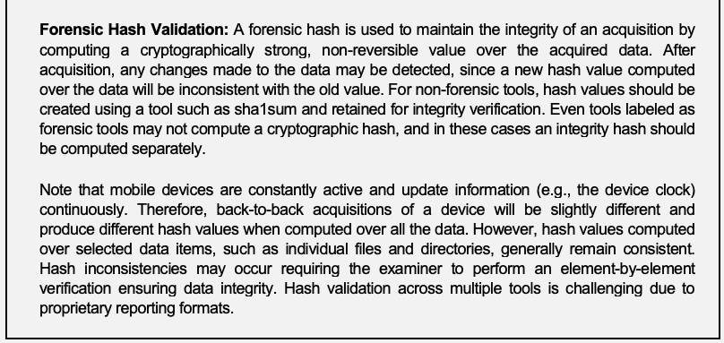
抽出したテキスト（原本と未照合・参考）
Forensic Hash Validation: A forensic hash is used to maintain the integrity of an acquisition by computing a cryptographically strong, non-reversible value over the acquired data. After acquisition, any changes made to the data may be detected, since a new hash value computed over the data will be inconsistent with the old value. For non-forensic tools, hash values should be created using a tool such as sha1sum and retained for integrity verification. Even tools labeled as forensic tools may not compute a cryptographic hash, and in these cases an integrity hash should be computed separately. Note that mobile devices are constantly active and update information (e.g., the device clock) continuously. Therefore, back-to-back acquisitions of a device will be slightly different and produce different hash values when computed over all the data. However, hash values computed over selected data items, such as individual files and directories, generally remain consistent. Hash inconsistencies may occur requiring the examiner to perform an element-by-element verification ensuring data integrity. Hash validation across multiple tools is challenging due to proprietary reporting formats.抽出したテキストの訳（原本と未照合・参考）
フォレンジックハッシュ検証：フォレンジックハッシュは、取得データに対して暗号学的に強固で一方向性の値を計算し、取得データの完全性を維持するために用いられる。取得後にデータが変更されると、新たに計算したデータのハッシュ値が元の値と一致しなくなるため、変更を検出できる場合がある（may）。非フォレンジックツールでは、完全性検証のためにsha1sumなどのツールでハッシュ値を作成し、保持すべきである（should）。フォレンジックツールと表示された製品であっても暗号学的ハッシュを計算しない場合がある（may not）。このような場合は、完全性ハッシュを別途計算すべきである（should）。モバイルデバイスは常に動作し、デバイスの時計などの情報を継続的に更新する点に留意する。したがって、同一デバイスを連続して取得しても内容にわずかな差が生じ、全データを対象に計算した場合は異なるハッシュ値が生成される場合がある（may）。ただし、個別ファイルやディレクトリなど、選択したデータ項目に対して計算したハッシュ値は通常、一致する。ハッシュの不一致が生じる場合には、データ完全性を確保するため検査担当者が要素単位の検証を行う必要がある。複数のツール間でハッシュを検証することは、独自の報告形式のため困難である。抽出したテキストの訳（原本と未照合・参考）
4. 保全Sections 4 through 7 describe the forensics process as it applies to mobile devices. Evidence preservation is the process of securely maintaining custody of property without altering or changing the contents of data that reside on devices and removable media. It is the first step in digital evidence recovery. The chapter begins with a generic introduction to preservation, and then provides more specific guidance about how to deal with mobile devices.
第4節から第7節では、モバイルデバイスに適用されるフォレンジック処理を説明する。証拠保全とは、デバイスおよび取り外し可能媒体に保存されたデータの内容を変更せず、財物の管理・保管を安全に維持するプロセスである。これはデジタル証拠回収の最初の段階である。本章では、保全の一般的な導入から始め、モバイルデバイスの取り扱いに関するより具体的な指針を示す。
Preservation involves the search, recognition, documentation, and collection of electronic-based evidence. In order to use evidence successfully, whether in a court of law or a less formal proceeding, it must be preserved. Failure to preserve evidence in its original state could jeopardize an entire investigation, potentially losing valuable case-related information.
保全には、電子的証拠の捜索、認識、記録、および収集が含まれる。法廷またはより非公式な手続で証拠を適切に利用するには、証拠を保全しなければならない（must）。証拠を元の状態で保全できなければ、貴重な事件関連情報が失われ、調査全体が危うくなる可能性がある。
未レビュー訳The remaining sections of this chapter provide supplemental information related to mobile devices, following the paradigm of Securing and Evaluating the Scene, Documenting the Scene, Isolation, Packaging, Transporting, and Storing Evidence, and Triage/On-Site Processing.
本章の残りの節では、「現場の確保と評価」、「現場の記録」、「隔離」、「証拠の梱包・搬送・保管」、および「トリアージ／現場処理」の流れに沿って、モバイルデバイスに関する補足情報を示す。
4.1 Securing and Evaluating the Scene
4.1 現場の確保と評価
Incorrect procedures or improper handling of a mobile device during seizure may cause loss of digital data. Moreover, traditional forensic measures, such as fingerprints or DNA testing, may need to be applied to establish a link between a mobile device and its owner or user. If the device is not handled properly, physical evidence may be contaminated and rendered useless.
押収時に誤った手順を用いたり、モバイルデバイスを不適切に扱ったりすると、デジタルデータが失われる場合がある（may）。さらに、モバイルデバイスと所有者または使用者とのつながりを立証するため、指紋やDNA検査などの従来のフォレンジック手段が必要となる場合がある（may）。デバイスが適切に扱われないと、物理的証拠が汚染され、利用不能になる場合がある（may）。
Alertness to mobile device characteristics and issues (e.g., memory volatility) and familiarity with tangential equipment (e.g., media, cables, and power adapters) are essential. For mobile devices, sources of evidence include the device, UICC and associated media. Associated peripherals, cables, power adapters, and other accessories are also of interest. All areas of the scene should be searched thoroughly ensuring related evidence is not overlooked.
モバイルデバイスの特性や問題（例：メモリの揮発性）への注意、および付随する機器（例：媒体、ケーブル、電源アダプタ）への習熟が不可欠である。モバイルデバイスの場合、証拠源にはデバイス、UICC、および関連媒体が含まれる。関連する周辺機器、ケーブル、電源アダプタ、その他の付属品も関心の対象となる。関連証拠を見落とさないよう、現場のすべての区域を徹底的に捜索すべきである（should）。
Equipment associated with the mobile device, such as removable media, UICCs, or personal computers, may prove more valuable than the mobile device itself. Removable media varies in size and can be easily hidden and difficult to find. Most often, removable memory cards are identifiable by their distinctive shape and the presence of electrical contacts located on their bodies that are used to establish an interface with the device. Personal computers may be particularly useful in later accessing a locked mobile device, if the personal computer has established a trusted relationship with it. For example, Apple incorporates a pairing process whereby an existing pairing record file can be used by some tools [Zdz12] to access the mobile device while it is still locked.
取り外し可能媒体、UICC、パーソナルコンピュータなど、モバイルデバイスに関連する機器の方が、デバイス自体より価値を持つ場合がある（may）。取り外し可能媒体はサイズがさまざまで、容易に隠すことができ（can）、発見が難しい。取り外し可能なメモリカードは通常、特徴的な形状と、本体上にデバイスとのインターフェース確立に用いる電気接点を備えていることで識別できる。パーソナルコンピュータがモバイルデバイスと信頼関係を確立している場合、そのコンピュータは、後にロックされたモバイルデバイスへアクセスする際に特に役立つ場合がある（may）。たとえばAppleはペアリング処理を採用しており、既存のペアリング記録ファイルを一部のツール[Zdz12]で使用すると、ロック中のモバイルデバイスにアクセスできる（can）。
When interviewing the owner or user of a mobile device, consider requesting any security codes, passwords or gestures needed to gain access to its contents. For example, GSM devices may have authentication codes set for the internal memory and/or the UICC.
モバイルデバイスの所有者または使用者に聞き取りを行う際は、内容へのアクセスに必要なセキュリティコード、パスワード、またはジェスチャーの提供を求めることを検討する。たとえば、GSMデバイスでは内部メモリおよび／またはUICCに認証コードが設定されている場合がある（may）。
While securing a mobile device, caution should be taken when an individual is allowed to handle the mobile device. Many mobile devices have master reset codes that clear the contents of the device to original factory conditions. Master resets may be performed remotely requiring proper precautions such as network isolation to ensure that evidence is not modified or destroyed.
モバイルデバイスを確保する際、個人にデバイスを操作させる場合には注意すべきである（should）。多くのモバイルデバイスには、内容を工場出荷時の状態に消去するマスターリセットコードがある。マスターリセットは遠隔から実行される場合がある（may）。そのため、証拠が変更または破壊されないよう、ネットワーク隔離など適切な予防措置を講じる必要がある。
Mobile devices may be found in a compromised state that may complicate seizure, such as immersion in a liquid. In these situations, forensic examiners should adhere to agency specific procedures. One method involves removal of the battery preventing electrical shorting, while the remainder of the mobile device is sealed in an appropriate container filled with the same liquid for transport to the lab, provided the liquid is not caustic. Some compromised states, such as blood contamination or use with explosives (i.e., as a bomb component) can pose a danger to the technician collecting evidence. In such situations, a specialist should be consulted for specific instructions or assistance.
モバイルデバイスは、液体への浸漬など、押収を複雑にする損傷状態で発見される場合がある（may）。このような場合、フォレンジック検査担当者は機関固有の手順に従うべきである（should）。一つの方法は、電気的短絡を防ぐためにバッテリーを取り外し、液体が腐食性でないことを条件として、残りのモバイルデバイスを同じ液体で満たした適切な容器に密封して研究所へ搬送することである。血液による汚染や爆発物との併用（すなわち爆弾の構成部品として使用）など、一部の損傷状態は、証拠を収集する技術者に危険を及ぼす可能性がある（can）。このような場合、専門家に具体的な指示または支援を求めるべきである（should）。
Mobile devices and associated media may be found in a damaged state, caused by accidental or deliberate action. Devices or media with visible external damage do not necessarily prevent the extraction of data. Damaged equipment should be taken back to the lab for closer inspection. Repairing damaged components on a mobile device and restoring the device to working order for examination and analysis may be possible.
モバイルデバイスおよび関連媒体は、偶発的または意図的な行為によって損傷した状態で発見される場合がある（may）。外部に目視可能な損傷があるデバイスや媒体でも、必ずしもデータ抽出が妨げられるわけではない。損傷した機器は、詳細な検査のためラボに持ち帰るべきである（should）。モバイルデバイスの損傷部品を修理し、検査・分析のためにデバイスを動作状態に戻すことが可能な場合がある（may）。
Undamaged memory components may also be removed from a damaged device and their contents recovered independently. This method should be used with caution, as it is not possible with all devices.
損傷したデバイスから損傷していないメモリ部品を取り外し、その内容を独立して回復することもできる場合がある（may）。すべてのデバイスで可能な方法ではないため、この方法は慎重に用いるべきである（should）。
4.2 Documenting the Scene
4.2 現場の記録
Evidence must be accurately identified and accounted for. Non-electronic materials such as invoices, manuals, and packaging material may provide useful information about the capabilities of the device, the network used, account information, and unlocking codes for the PIN. Photographing the crime scene in conjunction with documenting a report on the state of each digital device and all computers encountered may be helpful in the investigation, if questions arise later about the environment.
証拠は正確に識別し、記録しなければならない（must）。請求書、取扱説明書、梱包材などの非電子資料から、デバイスの機能、使用ネットワーク、アカウント情報、PINの解除コードに関する有用な情報が得られる場合がある（may）。現場写真の撮影と、発見した各デジタルデバイスおよびコンピュータの状態を報告書に記録することを併せて行えば、後に環境に関する疑問が生じた場合、調査に役立つことがある（may）。
A record of all visible data should be created. All digital devices, including mobile devices, which may store data, should be photographed along with all peripherals cables, power connectors, removable media, and connections. Avoid touching or contaminating the mobile device when photographing it and the environment where found. If the device’s display is in a viewable state, the screen’s contents should be photographed and, if necessary, recorded manually, capturing the time, service status, battery level, and other displayed icons.
目視可能なすべてのデータを記録すべきである（should）。データを保存する可能性のある（may）すべてのデジタルデバイス（モバイルデバイスを含む）は、周辺機器、ケーブル、電源コネクタ、取り外し可能媒体、接続状況とともに撮影すべきである（should）。モバイルデバイスや発見場所の環境を撮影する際は、デバイスに触れたり汚染したりしないこと。デバイスの画面が表示可能な状態であれば、画面の内容を撮影し、必要に応じて時刻、サービス状態、バッテリーレベル、その他の表示アイコンを手作業で記録すべきである（should）。
4.3 Isolation
4.3 隔離
Many mobile devices offer the user with the ability to perform either a remote lock or remote wipe by simply sending a command (e.g., text message) to the mobile device.
多くのモバイルデバイスでは、コマンド（例：テキストメッセージ）をデバイスに送信するだけで、遠隔ロックまたは遠隔消去を実行できる。
Additional reasons for disabling network connectivity include incoming data (e.g., calls or text messages) that may modify the current state of the data stored on the mobile device. Outgoing data may also be undesirable as the current GPS location may be delivered to an advisory providing the geographic location of the forensic examiner.
ネットワーク接続を無効にする追加の理由として、着信データ（例：電話やテキストメッセージ）がモバイルデバイスに保存されたデータの現在の状態を変更する場合がある（may）。発信データも望ましくない場合がある（may）。現在のGPS位置が助言者に送信され、フォレンジック検査担当者の地理的位置が知られる可能性がある（may）。
Therefore, forensic examiners need to be aware and take precautions when securing mobile devices mitigating the chance of data modification. The Scientific Working Group on Digital Evidence’s (SWGDE) “Best Practices for Mobile Phone Forensics” document covers best practice for the proper isolation of mobile devices [SWG13]. Some key implications for proper collection are summarized below.
したがって、フォレンジック検査担当者はモバイルデバイスを確保する際に注意し、データ変更の可能性を低減するための予防措置を講じる必要がある。Scientific Working Group on Digital Evidence（SWGDE）の「Best Practices for Mobile Phone Forensics」文書では、モバイルデバイスを適切に隔離するためのベストプラクティスを扱っている[SWG13]。適切な証拠収集に関する主な留意点を以下に要約する。
Isolating the mobile device from other devices used for data synchronization is important to keep new data from contaminating existing data. If the device is found in a cradle or connected with a personal computer, pulling the plug from the back of the personal computer eliminates data transfer or synchronization overwrites. It is recommended that a capture of the personal computer’s memory be extracted before “pulling the plug” as memory acquired generally proves to be of significant forensic value. Caution should be used, as removing a device that if performing a software update or backup has the potential to corrupt the mobile device’s file system. The use of memory forensics tools for the capture of a personal computer’s memory should be done by a qualified digital forensics professional. The mobile device should be seized along with associated hardware. Media cards, UICCs, and other hardware residing in the mobile device should not be removed. Also, seizing the computer that was connected to the mobile device provides the ability to acquire synchronized data from the hard disk that might not be obtained from the device. Any associated hardware such as media cards, UICCs, power adapters, device sleeves, or peripherals, should be seized along with related materials such as product manuals, packaging, and software.
データ同期に使われる他のデバイスからモバイルデバイスを隔離することは、新たなデータが既存データを汚染しないようにするため重要である。デバイスがクレードル内にある、またはパーソナルコンピュータに接続されている場合、コンピュータ背面からプラグを抜けば、データ転送や同期による上書きを止められる。プラグを抜く前に、パーソナルコンピュータのメモリを取得することが推奨される。取得メモリは一般にフォレンジック上大きな価値を持つためである。ソフトウェア更新またはバックアップを実行中のデバイスを取り外すと、モバイルデバイスのファイルシステムが破損する可能性があるため、注意が必要である（should）。パーソナルコンピュータのメモリ取得にメモリ・フォレンジックツールを使用する場合は、資格を有するデジタル・フォレンジック専門家が実施すべきである（should）。モバイルデバイスは関連ハードウェアとともに押収すべきである（should）。デバイス内にあるメディアカード、UICC、その他のハードウェアを取り外すべきではない（should not）。また、モバイルデバイスに接続されていたコンピュータを押収すると、デバイスからは取得できない可能性のある同期データをハードディスクから取得できる（might not）。メディアカード、UICC、電源アダプタ、デバイスケース、周辺機器などの関連ハードウェアはすべて、製品説明書、梱包材、ソフトウェアなどの関連資料とともに押収すべきである（should）。
Isolating a mobile device from all radio networks (e.g. WiFi, Cellular and Bluetooth) is important to keep new traffic, such as SMS messages, from overwriting existing data. Besides the risk of overwriting potential evidence, the question may arise whether data received on the mobile device after seizure is within the scope of the original authority granted. Vulnerabilities may exist that may exploit a weaknesses related to software vulnerabilities from the web browser and OS, SMS, MMS, third-party applications and WiFi networks. The possibility of such vulnerabilities being exploited may permit the argument that data may have been modified during the forensic examination.
モバイルデバイスをすべての無線ネットワーク（例：WiFi、セルラー、Bluetooth）から隔離することは、SMSメッセージなどの新たなトラフィックが既存データを上書きしないようにするために重要である。潜在的な証拠を上書きするリスクに加え、押収後にモバイルデバイスが受信したデータが、当初付与された権限の範囲内かどうかという問題が生じる場合がある（may）。ウェブブラウザおよびOS、SMS、MMS、サードパーティアプリケーション、WiFiネットワークに由来するソフトウェア脆弱性に関係する弱点を悪用し得る（may）脆弱性が存在する場合がある（may）。このような脆弱性が悪用される可能性があることで、フォレンジック検査中にデータが変更された可能性がある（may）という主張を許す場合がある（may）。
Three basic methods for isolating the mobile device from radio communication and preventing these problems are to either: place the device in airplane mode, turn the device off, or lastly place the device in a shielded container. Each method has certain drawbacks.
無線通信からモバイルデバイスを隔離し、これらの問題を防止する基本的な方法は3つある：デバイスを機内モードにする、電源を切る、またはシールド容器に入れる。それぞれの方法には欠点がある。
•Enabling “Airplane Mode” requires interaction with the mobile device using the keypad, which poses some risk – less so, if the technician is familiar with the device in question and documents the actions taken (e.g., on paper or on video). Note: airplane mode does not prevent the system from using other services such as GPS in all cases.
•「機内モード」を有効にするには、キーパッドでモバイルデバイスを操作する必要があり、一定のリスクを伴う。ただし、技術者が対象デバイスに詳しく、実行した操作を（紙または動画などで）記録していれば、リスクは軽減される。注：機内モードにしても、すべての場合にGPSなど他のサービスの使用を防止できるわけではない。
•Turning off the mobile device may activate authentication codes (e.g., UICC PIN and/or handset security codes), which are then required to gain access to the device, complicating acquisition and delaying examination.
•モバイルデバイスの電源を切ると、認証コード（例：UICC PINおよび／またはハンドセットのセキュリティコード）が有効になる場合があり（may）、デバイスへのアクセスにそれらが必要となり、取得が複雑化して調査が遅れる。
未レビュー訳•Keeping the mobile device on, but radio isolated, shortens battery life due to increased power consumption as devices unable to connect to a network raise their signal strength to maximum. After some period, failure to connect to the network may cause certain mobile devices to reset or clear network data that otherwise would be useful if recovered [Smi05]. Faraday containers may attenuate the radio signal, but not necessarily eliminate it completely, allowing the possibility of communications being established with a cell tower, if in its immediate vicinity. The risk of improperly sealing the Faraday container (e.g., bag improperly sealed, exposed cables connected to the forensic workstation may act as an antenna) and unknowingly allowing access to the cell network also exists.
•モバイルデバイスの電源を入れたまま無線を隔離すると、消費電力が増え、ネットワークに接続できないデバイスが信号強度を最大に引き上げるため、バッテリー寿命が短くなる。一定時間ネットワークに接続できないと、データ回復に有用なネットワークデータを保持している一部のモバイルデバイスがリセットまたは消去される場合がある（may）[Smi05]。ファラデー容器は無線信号を減衰させる場合がある（may）が、必ずしも完全に遮断するとは限らない。容器が基地局のすぐ近くにある場合、通信が確立される可能性がある。ファラデー容器の密閉不備（例：バッグの密閉不良、フォレンジック・ワークステーションにつながった露出ケーブルがアンテナとして働く場合がある（may））により、気付かないままセルラーネットワークへの接続を許すリスクもある。
未レビュー訳To conserve power, some mobile devices are normally configured to enter energy savings mode and shut off the display after a short period of inactivity. Some devices also shut themselves off if the battery level drops below a certain threshold to protect data stored in volatile memory, which defeats the original purpose of keeping it turned on. Keeping such a device in the active state is troublesome, requiring periodic interaction with the device. If additional power cannot be supplied to a device and it is turned off to conserve power and preserve memory contents, the risk of encountering a protection mechanism when turned on again is likely. Moreover, authentication mechanisms, such as passwords, typically cannot be deactivated without first satisfying the mechanism (e.g., supplying the correct password).
電力を節約するため、一部のモバイルデバイスは通常、省電力モードに移行し、短時間操作がないとディスプレイを消すよう構成されている。揮発性メモリのデータを保護するため、バッテリーレベルが一定のしきい値を下回ると自動的に電源が切れるデバイスもあり、これは電源を入れたままにする当初の目的を損なう。こうしたデバイスをアクティブ状態に保つのは難しく、定期的な操作が必要となる。デバイスに追加電力を供給できず（cannot）、電力を節約しメモリ内容を維持するために電源を切った場合、再度電源を入れたときに保護機構に遭遇するリスクが高い。さらに、パスワードなどの認証機構は、通常、その機構を満たす（例：正しいパスワードを入力する）前に無効化することはできない（cannot）。
The time maintained on the mobile device may be set independently of that from the network. Always record the date and time shown on the handset, if it is turned on, and compare them with a reference clock, noting any inconsistencies. If the screen is dim due to power management, it may be necessary to press an “insignificant” key, such as the volume key, to light the screen.
モバイルデバイスに設定されている時刻は、ネットワーク時刻とは独立している場合がある（may）。電源が入っている場合は、ハンドセットに表示された日付と時刻を必ず記録し、基準時計と比較して不一致を記録する。電力管理で画面が暗くなっている場合、画面を点灯させるために音量キーなどの「重要でない」キーを押す必要がある場合がある（may）。
Security mechanisms, key remapping and malicious programs may be present on mobile devices. Certain types of modifications to the software applications and operating system of the device might affect the way it is handled. The following is a list of examples of some classes of modifications to consider:
モバイルデバイスには、セキュリティ機構、キー割り当ての変更、悪意あるプログラムが存在する場合がある（may）。デバイスのソフトウェアアプリケーションやオペレーティングシステムに対する特定の変更によって、取り扱い方法が影響を受けることがある（might）。検討すべき変更の種類の例を以下に示す：
•Security Enhancements – Organizations and individuals may enhance their handheld devices with add-on security mechanisms. A variety of login, biometric, and other authentication mechanisms are available for mobile devices may be as replacements or supplements to password mechanisms. Improper interaction with a mechanism could cause the device to lock down and even destroy its contents. This is particularly a concern with mechanisms that use security tokens whose presence is constantly monitored and whose disconnection from a card slot or other device interface is immediately acted upon.
•セキュリティ強化 — 組織や個人は、追加のセキュリティ機構によって携帯端末のセキュリティを高める場合がある（may）。モバイルデバイスでは、ログイン、生体認証、その他の認証機構が、パスワードの代替または補完として利用可能な場合がある（may）。機構を不適切に操作すると、デバイスがロックされ、内容まで消去されるおそれがある。特に、存在を常時監視するセキュリティトークンを用いる機構では、そのトークンをカードスロットまたは別のデバイスインターフェースから取り外すと、直ちに動作が起こるため注意が必要である。
未レビュー訳•Malicious Programs – A mobile device may contain a virus or other malicious software. Such malware13 may attempt to spread to other devices over wired or wireless interfaces, including cross-platform jumps to completely different platforms. Common utilities or functions may also be intentionally replaced with versions of software designed to alter or damage data present on a mobile device. Such programs could conditionally be activated or suppressed based on conditions such as input parameters or hardware key interrupts. Watchdog applications could also be written to listen for specific events (e.g., key chords or over the air messages) and carry out actions such as deleting the contents of the device.
•悪意あるプログラム — モバイルデバイスにはウイルスやその他の悪意あるソフトウェアが含まれる場合がある（may）。このようなマルウェア13は、有線または無線インターフェースを介して他のデバイスへ拡散し、異なるプラットフォーム間へも広がろうとする場合がある（may）。一般的なユーティリティや機能が、モバイルデバイス上のデータを変更・破損するよう設計されたソフトウェアに意図的に置き換えられている場合もある（may）。そのようなプログラムは、入力パラメータやハードウェアキー割り込みなどの条件に基づいて有効化または抑制される可能性がある。ウォッチドッグアプリケーションが特定のイベント（例：キーの組み合わせ、無線経由のメッセージ）を監視し、デバイスの内容を削除するなどの動作を実行するよう作成されている場合もある。
未レビュー訳•Key Remapping – Hardware keys may be remapped to perform a different function than the default. A key press or combination of key presses intended for one purpose could launch an arbitrary program.
•キーの再割り当て — ハードウェアキーは、既定とは異なる機能を実行するよう再割り当てされている場合がある（may）。ある目的で押したキーまたはキーの組み合わせが、任意のプログラムを起動することがある。
未レビュー訳•Geo Fencing – Some devices may be configured to automatically wipe all data when the GPS in the device determines that it has left (or entered) a specific predetermined geographic area. This method may also employ WiFi towers for location determination as well.
•ジオフェンシング — GPSによりデバイスが特定の事前設定地理区域から出た（または入った）と判断されたとき、すべてのデータを自動消去するよう構成されているデバイスもある（may）。この方法では、位置判定にWiFi基地局を用いる場合もある（may）。
未レビュー訳•Explosives and Booby Traps – Mobile devices may be rigged to detonate bombs remotely or explode themselves if a specific action is carried out on the device (e.g., receiving an incoming call, text message or pressing a specific key chord sequence, etc.).14
•爆発物およびブービートラップ — 特定の操作（例：着信、テキストメッセージの受信、特定のキー操作の実行など）を行うと、モバイルデバイスが遠隔で爆弾を起爆したり、自ら爆発したりするよう仕掛けられている場合がある（may）。14
未レビュー訳•Alarms – Many mobile devices have an audible alarm feature. The alarm function is capable of powering on an inactive device, establishing network connectivity and the potential for a remote wipe.
•アラーム — 多くのモバイルデバイスには音響アラーム機能がある。アラーム機能は、電源が切れたデバイスの電源を入れ、ネットワーク接続を確立し、遠隔消去を可能にすることがある。
未レビュー訳The following sections 4.3.1 through 4.3.3 discuss the use and characteristics of radio isolation containers and cellular network isolation techniques.
以下の節4.3.1から4.3.3では、無線隔離容器とセルラーネットワーク隔離技法の使用方法および特性を説明する。
4.3.1 Radio Isolation Containers
4.3.1 無線隔離容器
A field test on the effectiveness of various mobile phone shielding devices (i.e., a tool designed to act as a Faraday cage) was conducted at Purdue University. There are many shielding devices that claim to radio isolate a mobile device unfortunately these tools do not always successfully prevent network communication [Kat10]. The tests conducted at Purdue used multiple shielding devices with mobile devices operating over three of the largest U.S. providers while varying the distance from the provider’s towers.
さまざまな携帯電話用シールド装置（すなわち、ファラデーケージとして機能するよう設計されたツール）の有効性に関する実地試験が、パデュー大学で実施された。モバイルデバイスを無線から隔離すると称するシールド装置は数多くあるが、残念ながら、これらのツールはネットワーク通信を常に防止できるわけではない[Kat10]。パデュー大学で実施された試験では、米国最大手の事業者のうち3社のネットワークで動作するモバイルデバイスに対して複数のシールド装置を使用し、事業者の基地局からの距離を変化させた。
The majority of the test cases proved that the shielding devices tested did not prevent network communication in all cases, and SMS messages most often penetrated the device while shielded, followed by voice calls and MMS messages. Three reasons why the shielding devices may fail are due to: the materials not providing enough attenuation, leaks or seams in the shield or the conductive shield acting as an antenna.
試験事例の大半で、評価対象のシールド装置はすべての場合にネットワーク通信を防止できず、シールド内のデバイスにSMSメッセージが最も頻繁に到達し、次いで音声通話、MMSメッセージが到達した。シールド装置が失敗する理由として、材料の減衰量不足、シールドの漏れや継ぎ目、導電性シールドがアンテナとして機能することの3つが挙げられる場合がある（may）。
While many manufacturers claim the effectiveness of their shielding device it is important to understand the effectiveness of the isolation device is based upon attenuating signal between specific decibels. Therefore, the effectiveness of the isolation containers tested were not 100% effective in most cases and devices used to preserve evidence require verification.
多くの製造元はシールド装置の有効性を主張するが、隔離装置の有効性は特定のデシベル値まで信号を減衰させることに基づく点を理解することが重要である。したがって、試験対象となった隔離容器は多くの場合100%有効ではなく、証拠保全に使う装置は検証が必要である。
未レビュー訳Some of the products mentioned in the above paper have since been improved to provide a more effective radio isolation solution. Examiners should test their own products to validate that they are working properly before use.
上記論文で言及された製品の一部は、その後、より効果的な無線隔離ソリューションを提供するよう改良されている。検査担当者は、使用前に自らの製品を試験し、正常に動作することを検証すべきである（should）。
4.3.2 Cellular Network Isolation Techniques
4.3.2 セルラーネットワーク隔離技法
A number of techniques exist for isolating a mobile device from cell tower communications [INT06]. The device should be fully charged prior to examination and consideration should be given to having a fixed or portable power source attached. The following provides an overview of various cellular network isolation techniques.
モバイルデバイスを基地局との通信から隔離する技法はいくつか存在する[INT06]。検査前にデバイスを完全に充電すべきであり（should）、固定式または携帯型電源を接続することも検討すべきである（should）。以下では、さまざまなセルラーネットワーク隔離技法の概要を示す。
•Cellular Network Isolation Card (CNIC) - A CNIC mimics the identity of the original UICC and prevents network access to/from the handset. Such cards prevent the handset from erasing call log data due to a foreign SIM being inserted. This technique permits acquisition without concern of wireless interference.
•セルラーネットワーク隔離カード（CNIC）— CNICは元のUICCの識別情報を模倣し、ハンドセットとの間のネットワークアクセスを遮断する。この種のカードは、異なるSIMを挿入したことによる通話記録データの消去を防止する。この技法を使えば、無線干渉を気にせず取得できる。
未レビュー訳•Shielded Containers - A portable shielded container may allow examinations to be conducted safely once the phone is situated inside. Cables connected to the container must be fully isolated to prevent network communications from occurring. This method is one of the most frequently used.
•シールド容器 — 携帯型シールド容器に電話機を入れることで、安全に調査を実施できる場合がある（may）。ネットワーク通信を防止するため、容器に接続するケーブルは完全に隔離しなければならない（must）。この方法は最も頻繁に使われる方法の一つである。
•Shielded Work Areas - Shielding an entire work area can be an expensive but effective way to conduct examinations safely in a fixed location. A “Faraday tent” is a cheaper alternative that also allows portability. Feeding cables into the tent is problematic, however, since without proper isolation they can behave as an antenna, defeating the purpose of the tent. The workspace may also be very restrictive.
•シールド作業区域 — 作業区域全体をシールドすれば、固定場所で安全に調査を実施できるが、費用がかかる。より安価な代替策として、可搬性も備えた「ファラデーテント」を用いることができる（can）。しかし、ケーブルをテント内に引き込むのは難しい。適切に隔離しなければケーブルがアンテナのように機能し、テントの目的を損なうことがある（can）。作業空間も非常に制約される場合がある（may）。
未レビュー訳•Disabling Network Service - The cellular carrier providing service to the mobile device might be able to disable service. The service provider or network operator must be determined and contacted with details identifying the service to be disabled (e.g., the equipment identifier, subscriber identifier, phone number). Such information is not always readily available, however, and the coordination and confirmation process may also impose delays.
•ネットワークサービスの無効化 — モバイルデバイスにサービスを提供するセルラー事業者は、サービスを無効化できる場合がある（might）。サービスプロバイダまたはネットワーク事業者を特定し、無効化するサービスを示す情報（例：機器識別子、加入者識別子、電話番号）を伝えて連絡しなければならない（must）。ただし、そのような情報をすぐに入手できるとは限らず、調整および確認の手続きにより遅延が生じる場合もある（may）。
未レビュー訳•Jamming/Spoofing Devices - Emitting a signal stronger than a cell phone’s or interfering with the signal rendering communication useless. Another technique involves tricking the phone into thinking a “no service” signal is coming from the nearest cell tower. Because such devices may affect communications in the surrounding public airspace beyond the examination area, unlicensed use may be illegal in some jurisdictions. [NIJ05]
•妨害・偽装装置 — 携帯電話より強い信号を発する、または信号に干渉して通信を使用不能にする装置。別の技法では、最寄りの基地局から「サービスなし」の信号が届いていると電話機に誤認させる。このような装置は調査区域外の周辺公共無線空間の通信にも影響する可能性がある（may）ため、無許可での使用は一部の法域で違法となる場合がある（may）。[NIJ05]
未レビュー訳4.3.3 Cellular Network Isolation Cards
4.3.3 セルラーネットワーク隔離カード
Some tools have the ability to create a Cellular Network Isolation Card (CNIC) [SWG13]. CNICs provide cellular network isolation preventing network communication that may modify data contained on a mobile device (e.g., remote wiping, incoming text messages). A CNIC lacks specific data elements required to establish connectivity between the mobile device and its associated network. For example, CNIC’s do not contain a cipher key, thus preventing access with a cellular network. A CNIC may be required for mobile device data extraction, as some phones are unable to boot without a UICC present.
一部のツールは、Cellular Network Isolation Card（CNIC）を作成する機能を持つ[SWG13]。CNICはセルラーネットワークからの隔離を提供し、モバイルデバイス内のデータを変更する可能性のある（may）ネットワーク通信（例：遠隔消去、着信テキストメッセージ）を防ぐ。CNICには、モバイルデバイスと対応するネットワークとの間の接続確立に必要な特定のデータ要素がない。たとえば、CNICには暗号鍵が含まれないため、セルラーネットワークへのアクセスが防止される。UICCが挿入されていないと起動できない携帯電話もあるため、モバイルデバイスのデータ抽出にはCNICが必要となる場合がある（may）。
Some tool manufacturers and vendors refer to this as a “SIM clone.” The creation of a CNIC is not a true clone of the source UICC, because the authentication key and other user data are not copied in the cloning process.
一部のツール製造元やベンダーは、これを「SIMクローン」と呼ぶ。しかし、認証鍵その他のユーザーデータは複製処理でコピーされないため、CNICの作成は元のUICCの真のクローンではない。
A CNIC may be created either by the examiner using the original UICC as a source or by entering the data manually. Manual entry is helpful if the UICC associated with a specific mobile device is not present. CNICs are tool specific; they are not interchangeable between the tools of various manufacturers. CNICs vary in their effectiveness and support, based on specific mobile devices. For example, CNICs may not be used for data extraction from TDMA devices.
CNICは、元のUICCを情報源として検査担当者が作成するか、データを手入力して作成できる（may）。特定のモバイルデバイスに対応するUICCがない場合は、手入力が役立つ。CNICはツール固有であり、異なる製造元のツール間では互換性がない。CNICの有効性とサポート状況は、特定のモバイルデバイスによって異なる。たとえば、TDMAデバイスからのデータ取得にはCNICを使用できない場合がある（may not）。
Occasionally, a UICC may not be present with a mobile device, or may be intentionally damaged, but necessary for data acquisition. One of the most common mistakes forensic examiners make is to insert a foreign UICC into the mobile device to facilitate data acquisition. Some mobile devices are linked to a specific UICC. When this linkage exists, booting a mobile device with a foreign UICC causes data elements such as: call logs (missed, incoming and outgoing calls) and SMS messages present within the internal memory of the mobile device to be erased [Rei08].
モバイルデバイスにUICCが付属していない場合がある（may not）、またはUICCが意図的に損傷されている場合がある（may）が、データ取得にはUICCが必要である。フォレンジック検査担当者がよく犯す間違いの一つは、データ取得を容易にするために別のUICCをモバイルデバイスに挿入することである。一部のモバイルデバイスは特定のUICCと紐付けられている。この紐付けがある場合、別のUICCを挿入して起動すると、内部メモリにある通話記録（不在着信、着信、発信）やSMSメッセージなどのデータ要素が消去される[Rei08]。
A better approach is to create a substitute UICC (i.e., CNIC) to use with the mobile device that mimics key characteristics of the original UICC, tricking the device to accept it as the original. Most mobile forensic tools provide the forensic examiner with the ability to create a CNIC.
より良い方法は、元のUICCの主要な特性を模倣し、デバイスに元のものとして受け入れさせる代替UICC（すなわちCNIC）を作成することである。ほとんどのモバイル・フォレンジックツールでは、検査担当者がCNICを作成できる。
Substituting UICCs, sometimes referred to as CNICs, may be useful in a number of situations:
CNICと呼ばれることもある代替UICCは、以下のようなさまざまな状況で役立つ場合がある（may）：
•If a mobile device’s UICC is missing or damaged and is required for acquisition with a forensic tool, creation of a CNIC permits data to be recovered from the handset.
•モバイルデバイスのUICCがない、または損傷しており、フォレンジックツールによる取得にUICCが必要な場合、CNICを作成すればハンドセットからデータを回復できる。
•If the UICC for a device is present, but requires a PUK code, a substitute UICC can be created providing acquisition to proceed without having to contact the service provider for the PUK.
•デバイスのUICCがあるもののPUKコードが必要な場合、サービスプロバイダにPUKを問い合わせることなく取得を進められるよう、代替UICCを作成できる（can）。
•If cellular network isolation is required (e.g., avoiding incoming calls or text messages) a CNIC provides a method permitting acquisition of data from the handset while simultaneously denying cellular network authentication.
•セルラーネットワークの隔離が必要な場合（例：着信やテキストメッセージを回避する）、CNICを使用すれば、セルラーネットワーク認証を拒否しながらハンドセットからデータを取得できる。
•If a forensic tool accesses the UICC during the acquisition process, using a CNIC in the handset eliminates the possibility of the original being modified (e.g., status flag of SMS messages modified from unread to read).
•取得処理中にフォレンジックツールがUICCにアクセスする場合、ハンドセットにCNICを使用すれば元のUICCが変更される可能性を排除できる（例：SMSメッセージの状態フラグが未読から既読に変更される）。
The values by which the mobile device correlates to the previously inserted UICC are the ICCID and the IMSI [Rei08]. Often only one of these values is used. Both identifiers are unique and used to authenticate the user to the network. While the minimum data needed to create a UICC may be simply one of these two values, some mobile devices may require additional data to be populated on the CNIC to be properly recognized. The possibility exists that data, other than user data, may change on the handset as the result of inserting a CNIC [INT06].
翻訳準備中
4.4 Packaging, Transporting, and Storing Evidence
4.4 証拠の梱包、搬送、保管
Once the mobile device is ready to be seized, the forensic specialist should seal the device in an appropriate container and label it appropriately according to agency specifications.
モバイルデバイスを押収する準備が整ったら、フォレンジック専門家はデバイスを適切な容器に封印し、機関の仕様に従って適切にラベルを付けるべきである（should）。
Due to the volatile nature of some mobile devices, they should immediately be checked into a forensic laboratory for processing and the power requirements should be discussed with the evidence custodian. Battery powered devices held in storage for more than a day risk power depletion and data loss, unless a process is in place to avoid this outcome.
一部のモバイルデバイスは揮発性であるため、直ちにフォレンジック研究所へ搬入して処理すべきであり（should）、電源要件について証拠管理担当者と協議すべきである（should）。バッテリー駆動のデバイスを1日を超えて保管すると、電力の枯渇とデータ損失のリスクがある。ただし、この事態を避ける手順が整っている場合は除く。
Storage facilities that hold evidence should provide a cool, dry environment appropriate for valuable electronic equipment. All evidence should be in sealed containers in a secure area with controlled access.
証拠を保管する施設は、貴重な電子機器に適した涼しく乾燥した環境を提供すべきである（should）。すべての証拠は、アクセスを制御した安全な区域内の封印容器に保管すべきである（should）。
4.5 On-Site Triage Processing
4.5 現場トリアージ処理
Currently many organizations are challenged with large backlogs of digital forensics casework. An on-site triage solution is being employed more and more world-wide to accommodate for this exponential growth in digital forensic caseload. Triaging involves performing a data extraction (i.e., Manual or Logical) on-scene followed immediately by a preliminary analysis of the data extracted. Logical extraction tools are providing additional capabilities to use keywords and specific known hashes alerting the on-scene examiner immediately to potential issues that need to be addressed. Where possible, devices supporting encryption, such as Android and iOS devices, should be triage processed at the scene if they are found in an unlocked state, as the data may no longer be available to an investigator once the device’s screen is locked, or if the battery exhausts. Deploying the use of field forensics tools to either acquire the device, or establish a trusted relationship with the device, will ensure that the data can be accessed at a later time, after the device has locked. [Zdz12].
現在、多くの組織がデジタル・フォレンジック案件の大量の未処理案件の滞留に直面している。デジタル・フォレンジック案件の急増に対応するため、現場トリアージソリューションの採用が世界中で拡大している。トリアージでは、現場でデータ抽出（すなわち手動または論理抽出）を行い、直後に抽出データの予備分析を行う。論理抽出ツールでは、キーワードや既知の特定ハッシュを利用する追加機能が提供され、対処すべき可能性のある問題を現場検査担当者に直ちに警告する。可能な場合は、暗号化に対応したデバイス（AndroidやiOSデバイスなど）がロック解除状態で発見されたなら、現場でトリアージ処理すべきである（should）。画面がロックされた後、またはバッテリーが切れた場合には、調査員がデータを利用できなくなる可能性がある（may）。デバイスを取得するか、デバイスとの信頼関係を確立するために現場フォレンジックツールを導入すれば、デバイスがロックされた後でも後日データにアクセスできる[Zdz12]。
On-Site Triage is especially useful in identifying:
現場トリアージは、特に次の特定に役立つ：
•Media most likely to contain evidence
•証拠が含まれている可能性が最も高い媒体
•Those investigations that require a more detailed and technical examination
•より詳細で技術的な調査を必要とする案件
•The investigations that could be subject of limited examination by qualified practitioners
•資格を有する実務者による限定的な調査の対象となり得る案件
•Material requiring urgent investigation
•緊急の調査を必要とする資料
•Examinations suitable for outsourcing
•外部委託に適した調査
•The extent of the assistance the unit will need to provide to an investigation [ACP11]
•調査に対して部門が提供する必要のある支援の範囲[ACP11]
On-Site Triage processing benefits include:
現場トリアージ処理の利点には次のものがある：
•Reduced laboratory workload - Digital forensic laboratory submissions may be reduced when nothing of interest is found on-scene and the level of suspicion is low
•研究所の作業負荷軽減 — 現場で関心対象が見つからず、疑いの度合いが低い場合、デジタル・フォレンジック研究所への提出件数を減らせる場合がある（may）。
•Exigency - On-scene examiners have actionable results immediately
•緊急性 — 現場検査担当者は、すぐに活用できる結果を得る。
•Better leveraging of existing resources - Intelligence resources are enhanced through the use of keywords/hash lists
•既存リソースの活用向上 — キーワード／ハッシュリストを利用することで、情報分析リソースが強化される。
•Reduced training costs - Triage tools are typically designed to require less training than deeper analysis tools and techniques
•訓練費用の削減 — トリアージツールは通常、より詳細な分析ツールや技法よりも少ない訓練で利用できるよう設計されている。
•Reduced unit cost – Triage tools are frequently more affordable than deeper analysis capable counterparts
•単位費用の削減 — トリアージツールは、より詳細な分析機能を持つ同等製品よりも手頃な価格であることが多い。
•Live collection opportunity – Devices are often presented in an unlocked state affording the on-site examiner the potential to extract more data before the locking mechanism is activated
•ライブ取得の機会 — デバイスはロック解除状態で提示されることが多く、ロック機構が作動する前に現場検査担当者がより多くのデータを抽出できる可能性がある。
Organizations may wish to develop some sort of “scoring” method to aid with the prioritization of on-site triage examinations. This should be developed on a per-organization basis and should be reviewed and updated to accommodate changes.
組織は、現場トリアージ調査の優先順位付けを支援する何らかの「スコアリング」方法を策定するとよい（may）。この方法は組織ごとに策定し、変化に対応できるよう見直すべきであり（should）、更新すべきである（should）。
4.6 Generic On-Site Decision Tree
4.6 汎用の現場判断ツリー
Figure 7 illustrates an example of an on-site decision tree that may be used as a general guideline for organizations and agencies. This provides a starting point intended for customization allowing alignment with existing policies and procedures. The following list describes some of the actions and decision points contained within the tree.
図7は、組織や機関の一般的な指針として使用できる現場判断ツリーの例を示す（may）。既存の方針および手順に沿うようカスタマイズするための出発点となる。以下の一覧では、ツリーに含まれる処置および判断点の一部を説明する。
•Unlocked/Undamaged – Is the device in an unlocked state and functional permitting a manual or logical data extraction?
•ロック解除済み／損傷なし — デバイスはロック解除状態かつ機能しており、手動または論理データ抽出が可能か？
•Urgent – Do circumstances exist such that data extraction is required on site?
•緊急 — 現場でデータを抽出する必要がある状況か？
•Lab less than 2 hours away – Can the mobile device be transported to a forensics laboratory in less than 2 hours?
•研究所まで2時間未満 — モバイルデバイスを2時間未満でフォレンジック研究所へ搬送できるか？
•Tool/Training – Is the device supported by the tool and has the examiner received proper training?
•ツール／訓練 — デバイスはツールでサポートされており、検査担当者は適切な訓練を受けているか？
•Contact Expert – The on-site examiner should contact an expert for additional assistance and guidance.
•専門家への連絡 – 現場検査担当者は、追加の支援と指針を得るため、専門家に連絡すべきである（should）。
•Battery More than 50% – Does the device show that it has more than 50% remaining battery power?
•バッテリー残量が50%超 – デバイスは、バッテリー残量が50%を超えていることを表示しているか？
•Need More Data - After the extraction is successful and the examiner has reviewed the results, is additional information or analysis required?
•追加データの必要性 – 抽出が成功し、検査担当者が結果を確認した後、追加情報または分析が必要か？
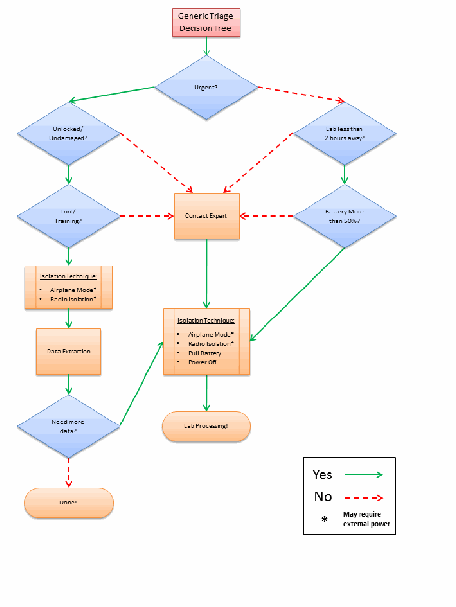
モバイル端末の一般的なトリアージ判断フロー。緊急性、端末の解除・損傷、ラボまでの距離、機材・訓練、電池残量を判定し、隔離やデータ抽出、専門家への連絡、ラボ処理へ導く。
Figure 7: Generic Triage Decision Tree
図7：汎用トリアージ判断ツリー
未レビュー訳抽出したテキストの訳（原本と未照合・参考）
5. 取得Acquisition is the process of imaging or otherwise obtaining information from a mobile device and its associated media. Performing an acquisition at the scene has the advantage that loss of information due to battery depletion, damage, etc. during transportation and storage is avoided. Off-site acquisitions unlike a laboratory setting may be challenging in finding a controlled setting in which to work with the appropriate equipment while satisfying additional prerequisites. For the purpose of this discussion, a laboratory environment is assumed throughout this chapter.
取得とは、モバイルデバイスおよび関連メディアから情報をイメージ化する、またはその他の方法で取得するプロセスである。現場で取得を行う利点は、搬送および保管中のバッテリー消耗、損傷などによる情報の損失を回避できることである。実験室の環境とは異なり、施設外での取得では、適切な機器を用いて作業し、追加の前提条件も満たせる管理された環境を見つけることが困難な場合がある（may）。本章では、この議論を通じて実験室環境を前提とする。
The forensic examination begins with the identification of the mobile device. The type of mobile device, its operating system, and other characteristics determine the route to take in creating a forensic copy of the contents of the device. The type of mobile device and data to be extracted generally dictates which tools and techniques should be used in an investigation.
フォレンジック検査は、モバイルデバイスの識別から始まる。モバイルデバイスの種類、オペレーティングシステム、その他の特性によって、デバイスの内容のフォレンジックコピーを作成する手順が決まる。調査で使用すべきツールおよび技法は、一般に、モバイルデバイスの種類と抽出対象のデータによって決まる（should）。
5.1 Mobile Device Identification
5.1 モバイルデバイスの識別
To proceed effectively, mobile devices need to be identified by the make, model, and service provider. If the mobile device is not identifiable, photographing the front, back and sides of the device may be useful in identifying the make, model and current state (e.g., screen lock) at a later time. Individuals may attempt to thwart specialists by altering the mobile device to conceal its true identity. Device alteration may range from removing manufacturer labels to filing off logos. In addition, the operating system and applications may be modified or in rare situations completely replaced, and appear differently as well as behave differently than expected. These modifications should be taken into consideration on a case-by-case basis.
効果的に作業を進めるには、モバイルデバイスのメーカー、モデル、およびサービスプロバイダを特定する必要がある。モバイルデバイスを特定できない場合、デバイスの前面、背面、および側面を撮影しておくと、後でメーカー、モデル、現在の状態（例：画面ロック）を特定する際に役立つことがある（may）。個人が、真の識別情報を隠すためにモバイルデバイスを改変して、専門家の作業を妨害しようとすることがある（may）。デバイスの改変には、メーカーラベルの除去からロゴの削り取りまでさまざまなものがある（may）。さらに、オペレーティングシステムやアプリケーションが改変されることがあり（may）、まれには完全に置き換えられ、予想とは異なる外観や動作を示す場合もある。こうした改変は、個別の事案ごとに考慮すべきである（should）。
If the mobile device is powered on, the information appearing on the display may aid in mobile device identification. For example, the manufacturer’s or service provider’s name may appear on the display, or the screen layout may indicate the family of operating system used. Information such as the manufacturer’s label may be found in the battery cavity (e.g., make, model, IMEI, MEID). Removing the battery from the cavity of a mobile device, even when powered off, may affect its state, particularly the contents of volatile memory. Most mobile devices keep user data in non-volatile memory (i.e., NAND). If the mobile device is powered on, battery removal will power it off, possibly causing an authentication mechanism to trigger when powered back on.
モバイルデバイスの電源が入っている場合、ディスプレイに表示される情報はデバイスの識別に役立つことがある（may）。たとえば、メーカー名またはサービスプロバイダ名がディスプレイに表示されることがあり（may）、画面レイアウトから使用されているオペレーティングシステムの系列が分かる場合もある（may）。メーカーラベルなどの情報は、バッテリー収納部に記載されていることがある（may）。たとえば、メーカー、モデル、IMEI、MEIDがある。モバイルデバイスのバッテリー収納部からバッテリーを取り外すと、電源がオフの場合でも状態に影響することがあり（may）、特に揮発性メモリの内容に影響する可能性がある。ほとんどのモバイルデバイスはユーザーデータを不揮発性メモリ（すなわちNAND）に保持する。モバイルデバイスの電源が入っている場合、バッテリーを取り外すと電源が切れ、再起動時に認証機構が起動する可能性がある。
Other clues that allow identification of a mobile device include such things as: manufacturer logos, serial numbers, or design characteristics (e.g. candy bar, clam shell). Overall, knowing the make and model helps to limit the potential service providers, by differentiating the type of network the device operates over (i.e., GSM, non-GSM), and vice versa. Synchronization software discovered on an associated computer may also help to differentiate among operating system families. Further means of identification include the following:
モバイルデバイスの識別に役立つその他の手掛かりには、メーカーのロゴ、シリアル番号、または設計上の特徴（例：キャンディーバー型、クラムシェル型）がある。全般に、メーカーとモデルを知ることは、デバイスが動作するネットワークの種類（すなわちGSM、非GSM）を区別して、候補となるサービスプロバイダを絞り込むのに役立ち、その逆も同様である。関連するコンピュータで見つかった同期ソフトウェアも、オペレーティングシステムの系列を区別する手掛かりとなることがある（may）。その他の識別方法には、以下がある：
•Device Characteristics – The make and manufacturer of a mobile device may be identified by its observable characteristics (e.g., weight, dimensions, and form factor), particularly if unique design elements exist. Various web sites contain databases of mobile device that may be queried based on selected attributes to identify a particular device and obtain its specifications and features.15 Coverage is considerable, but not extensive nor complete, and may require consulting more than one repository before making a match.
•デバイスの特性 – モバイルデバイスのメーカーおよび製造元は、観察可能な特性（例：重量、寸法、フォームファクタ）によって特定できることがあり（may）、特に独自の設計要素がある場合に有効である。さまざまなウェブサイトに、選択した属性で検索できる（may）特定のデバイスを識別し、仕様や機能を取得できるモバイルデバイスのデータベースがある。15 対応範囲は広いが、網羅的でも完全でもなく、照合結果を確定する前に複数の情報源を参照する必要がある場合がある（may）。
未レビュー訳•Device Interface – The power connector can be specific to a manufacturer and may provide clues for device identification. With familiarization and experience, the manufacturers of certain mobile devices may be readily identified. Similarly, the size, number of contacts, and shape of the data cable interface are often specific to a particular manufacturer and may prove helpful in identification.
•デバイスのインタフェース – 電源コネクタはメーカー固有の場合があり（may）、デバイスの識別の手掛かりとなることがある（can）。知識と経験があれば、特定のモバイルデバイスのメーカーを容易に識別できることがある（may）。同様に、データケーブルのインタフェースのサイズ、接点数、および形状は特定のメーカーに固有であることが多く、識別に役立つ場合がある（may）。
未レビュー訳•Device Label – For mobile devices that are inactive, information obtained from within the battery cavity may be of assistance, particularly when coupled with an appropriate database. The manufacturer’s label often lists the make and model number of the mobile device and also unique identifiers, such as the Federal Communications Commission Identification Number (FCC ID) and an equipment identifier (IMEI or MEID). The FCC and equipment identifiers may be found on mobile devices sold in the U.S. domestic market.
•デバイスのラベル – 使用されていないモバイルデバイスでは、バッテリー収納部内から得られる情報が役立つ場合があり（may）、適切なデータベースと組み合わせると特に有用である。メーカーラベルには、多くの場合、モバイルデバイスのメーカーとモデル番号、およびFederal Communications Commission Identification Number（FCC ID）、機器識別子（IMEIまたはMEID）などの一意の識別子が記載されている。FCC識別子と機器識別子は、米国内市場で販売されるモバイルデバイスに記載されていることがある（may）。
For all mobile devices that use a UICC, the identity module is typically located under the battery and imprinted with a unique identifier called the Integrated Circuit Card Identification (ICCID). For powered on GSM and UMTS phones, the International Mobile Equipment Identifier (IMEI) may be obtained by keying in *#06#. Similar codes exist for obtaining the Electronic Serial Number (ESN) or Mobile Equipment Identifier (MEID) from powered on CDMA phones. Various sites on the Internet offer databases that provide information about the mobile device based on an identifier, such as the following:
UICCを使用するすべてのモバイルデバイスでは、識別モジュールは通常バッテリーの下にあり、Integrated Circuit Card Identification（ICCID）と呼ばれる一意の識別子が印字されている。電源が入ったGSMおよびUMTS電話では、*#06#を入力することでInternational Mobile Equipment Identifier（IMEI）を取得できる場合がある（may）。電源が入ったCDMA電話からElectronic Serial Number（ESN）またはMobile Equipment Identifier（MEID）を取得するための同様のコードも存在する。インターネット上のさまざまなサイトが、識別子に基づいてモバイルデバイスに関する情報を提供するデータベースを提供しており、たとえば次のものがある：
•The IMEI is a 15-digit number that indicates the manufacturer, model type, and country of approval for GSM devices. The initial 8-digit portion of the IMEI, known as the Type Allocation Code (TAC), gives the model and origin. The remainder of the IMEI is manufacturer specific, with a check digit at the end [GSM04]. A database lookup service is available from the GSM numbering plan Web site.16
•IMEIは、GSMデバイスのメーカー、モデルの種類、および認可国を示す15桁の番号である。IMEIの先頭8桁部分はType Allocation Code（TAC）と呼ばれ、モデルと原産地を示す。IMEIの残りの部分はメーカー固有であり、末尾にチェックディジットがある[GSM04]. GSM番号計画のWebサイトでは、データベース検索サービスを利用できる。16
未レビュー訳•The ESN is a 32-bit identifier recorded on a secure chip in a mobile device by the manufacturer. The first 8-14 bits identify the manufacturer and the remaining bits represent the assigned serial number. Many mobile devices have codes that can be input into the handset to display the ESN. Hidden menus may also be activated on certain mobile devices by placing them in “test mode” through the input of a code. Besides the ESN, other useful information such as the phone number of the device may be obtained. Manufacturer codes may be checked online at the Telecommunications Industry Association Web site.17
•ESNは、メーカーがモバイルデバイス内のセキュアチップに記録する32ビットの識別子である。最初の8～14ビットはメーカーを識別し、残りのビットは割り当てられたシリアル番号を表す。多くのモバイルデバイスには、ハンドセットに入力できる（can）ESN表示コードがある。特定のモバイルデバイスでは、コードを入力して「テストモード」にすることで隠しメニューを起動できる場合がある（may）。ESNのほか、デバイスの電話番号などの有用な情報も取得できることがある（may）。メーカーコードは、Telecommunications Industry AssociationのWebサイトでオンライン確認できる（may）。17
未レビュー訳•The ICCID of the UICC may be up to 20 digits long. It consists of an industry identifier prefix (89 for telecommunications), followed by a country code, an issuer identifier number, and an individual account identification number [ITU06]. The country and network operator name may be determined by the ICCID. If the ICCID does not appear on the UICC, it may be obtained with a UICC acquisition tool. The GSM numbering plan Web site supports ICCID queries for this information.18
•UICCのICCIDは最大20桁である（may）。これは、業界識別子プレフィックス（電気通信の場合は89）に続いて、国コード、発行者識別番号、および個別アカウント識別番号で構成される[ITU06]。国名およびネットワーク事業者名は、ICCIDから判定できる場合がある（may）。ICCIDがUICCに記載されていない場合は、UICC取得ツールで取得できることがある（may）。GSM番号計画のWebサイトでは、この情報を得るためのICCID照会に対応している。18
未レビュー訳•The first 3 characters of the FCC ID are the company code; the next 14 are the product code. The FCC provides a database lookup service that can be used to identify a device manufacturer and retrieve information about the mobile device, including photos, user manual, and radio frequency test results.19
•FCC IDの最初の3文字は会社コードであり、次の14文字は製品コードである。FCCは、デバイスメーカーを特定し、写真、ユーザーマニュアル、無線周波数試験結果など、モバイルデバイスに関する情報を取得するためのデータベース検索サービスを提供している（can）。19
未レビュー訳•MEID consists of a set of characters 56-bits in length (14 hex digits). It contains three fields, including an 8-bit regional code (RR), a 24-bit manufacturer code, and a 24-bit manufacturer-assigned serial number. The check digit (CD) is not considered part of the MEID. The MEID was created to replace ESNs, as all ESN’s were exhausted by November 2008.
•MEIDは、56ビット（16進数14桁）の文字列で構成される。これには、8ビットの地域コード（RR）、24ビットのメーカーコード、およびメーカーが割り当てた24ビットのシリアル番号という3つのフィールドが含まれる。チェックディジット（CD）はMEIDの一部とはみなされない。MEIDはESNに代わるものとして作成された。ESNはすべて2008年11月までに使い果たされたためである。
•Carrier Identification – The carrier for a mobile device may have their logo printed on the exterior. This is traditionally displayed prominently to allow for advertising and branding. This may provide the examiner with insight on which carrier the mobile device operates. Mobile devices may be unlocked and possibly re-flashed to operate using a competing carrier. One method to make this determination is to examine the UICC if present. Most carriers imprint their logo on the front of the UICC. Additionally, extraction and analysis of the ICCID provides further confirmation.
•キャリアの識別 – モバイルデバイスのキャリアのロゴが外装に印刷されていることがある（may）。これは従来、広告やブランド表示のために目立つ位置に表示される。これにより、検査担当者はデバイスがどのキャリアで動作するかを推定できることがある（may）。モバイルデバイスはロック解除され、競合キャリアで動作するよう再フラッシュされている可能性がある（may）。これを判定する方法の一つは、UICCがあれば検査することである。ほとんどのキャリアはUICCの前面にロゴを印字する。さらに、ICCIDを抽出して分析すれば、追加の確認ができる。
未レビュー訳•Reverse Lookup – The Number Portability Administration Center (NPAC) provides an automated phone system for law enforcement agencies to determine the current service provider assigned to a number and obtain contact information.20 This service covers both U.S. and Canadian phone numbers. If the telephone number of the mobile device is known, a reverse lookup may be used to identify the network operator and the originating city and state. For example, FoneFinder™ is a service to obtain such information.21 The network operator’s web site typically contains lists of supported devices that may be used to narrow down and possibly identify the mobile device in question. Because phone numbers may be ported among service providers, in many situations more up-to-date information is required.
•逆引き – Number Portability Administration Center（NPAC）は、法執行機関が番号に現在割り当てられているサービスプロバイダを特定し、連絡先情報を得るための自動電話システムを提供している。20 このサービスは米国とカナダの電話番号を対象とする。モバイルデバイスの電話番号が分かっている場合、逆引きによってネットワーク事業者と発信元の市および州を特定できる場合がある（may）。たとえば、FoneFinder™はそのような情報を取得するサービスである。21 ネットワーク事業者のWebサイトには通常、対象デバイスを絞り込み、場合によっては特定するために使用できる対応デバイス一覧がある（may）。電話番号はサービスプロバイダ間で移管されることがある（may）ため、状況によっては、より新しい情報が必要となる。
未レビュー訳5.2 Tool Selection and Expectations
5.2 ツールの選択と期待事項
Once the make and model of the mobile device are known, available manuals should be retrieved and studied. The manufacturer’s web site is a good place to begin. Typing the model number into a search engine may also reveal a significant amount of information about the mobile device. As mentioned earlier, the device being acquired largely dictates the choice of forensic tools. The following criteria have been suggested as a fundamental set of requirements for forensic tools, and should be considered when a choice of tools is available:
モバイルデバイスのメーカーとモデルが判明したら、入手可能なマニュアルを取得して調べるべきである（should）。メーカーのWebサイトが調査の出発点として適している。検索エンジンにモデル番号を入力しても、モバイルデバイスに関する多くの情報が得られる場合がある（may）。前述のとおり、取得対象のデバイスがフォレンジックツールの選択を大きく左右する。以下の基準は、フォレンジックツールの基本的な要件として提案されており、ツールを選択できる場合に考慮すべきである（should）：
•Usability – the ability to present data in a form that is useful to an investigator
•使いやすさ – 調査担当者にとって有用な形式でデータを提示する能力
•Comprehensive – the ability to present all data to an investigator so that both inculpatory and exculpatory evidence can be identified
•包括性 – 有罪を示す証拠と無罪を示す証拠の両方を識別できるよう、すべてのデータを調査担当者に提示する能力（can）
未レビュー訳•Accuracy – the quality of the output of the tool has been verified
•正確性 – ツールの出力の品質が検証されていること
未レビュー訳•Deterministic – the ability for the tool to produce the same output when given the same set of instructions and input data
•決定性 – 同一の指示と入力データが与えられたとき、ツールが同じ出力を生成する能力
•Verifiable – the ability to ensure accuracy of the output by having access to intermediate translation and presentation results
•検証可能性 – 中間の変換結果および表示結果にアクセスして出力の正確性を確認できる能力
•Tested – the ability to determine if known data present within the mobile device internal memory is not modified and reported accurately by the tool
•試験済み – モバイルデバイスの内部メモリに存在する既知のデータが変更されず、ツールによって正確に報告されるかを確認できる能力
未レビュー訳Experimenting with various tools on test devices to determine which acquisition tools work efficiently with specific mobile device types is highly recommended. Besides gaining familiarity with the capabilities of the tool, experimentation allows special purpose search filters and custom configurations to be setup before use in an actual case. In addition, any needed software updates from the manufacturer can be installed.
特定の種類のモバイルデバイスでどの取得ツールが効率的に動作するかを判断するため、試験用デバイスでさまざまなツールを試すことを強く推奨する。ツールの機能に慣れることに加え、試験によって、実際の事案で使用する前に、専用の検索フィルタやカスタム設定を用意できる。さらに、メーカーが提供する必要なソフトウェア更新をインストールできる（can）。
Established procedures should guide the technical process of acquisition, as well as the examination of evidence. New circumstances may arise sporadically that require adjustment to existing procedures, and in some situations require new procedures and methods to be devised. Some examples include: UICCs being permanently bonded into a mobile device, mobile devices capable of supporting multiple UICCs and mobile devices that block logical acquisition ports until a connection is made with a cell tower. Procedures must be tested to ensure that the results obtained are valid and independently reproducible. Testing should occur on the same model of mobile device before attempting procedures on the case device. The development and validation of the procedures should be documented and include the following steps [DOJ08]:
確立された手順は、取得の技術的プロセスと証拠の検査の両方を導くべきである（should）。既存の手順の調整を必要とする新たな状況が時折生じることがあり（may）、状況によっては新たな手順や方法を考案する必要がある。例として、UICCがモバイルデバイスに恒久的に接合されている場合、複数のUICCに対応するモバイルデバイス、セルラータワーへの接続が確立されるまで論理取得ポートをブロックするモバイルデバイスがある。手順は、得られる結果が有効であり、独立して再現可能であることを確実にするため、試験しなければならない（must）。事案対象デバイスで手順を試す前に、同一モデルのモバイルデバイスで試験すべきである（should）。手順の策定と妥当性確認を文書化し、次の手順を含めるべきである（should）[DOJ08]：
•Identifying the task or problem
•タスクまたは問題の特定
未レビュー訳•Proposing possible solutions
•解決策候補の提案
未レビュー訳•Testing each solution on an identical test device and under known control conditions
•同一の試験用デバイスを用い、既知の管理条件下で各解決策を試験する
未レビュー訳•Evaluating the results of the test
•試験結果の評価
未レビュー訳•Finalizing the procedure
•手順の最終化
5.3 Mobile Device Memory Acquisition
5.3 モバイルデバイスのメモリ取得
Mobile devices are often submitted for laboratory processing with only specific items requested for recovery, such as call logs or graphics. If any doubt or concerns exist about the requested data, contacting the submitter for clarification is recommended. Though it is not always necessary to recover all available data, a complete acquisition avoids having to redo the process later if additional data is requested. For examinations involving a limited scope search warrant (e.g., only text messages), a full memory data extraction may be completed but care should be taken to only report items covered by the warrant.
モバイルデバイスは、通話記録や画像など、特定の項目の回復を依頼されて研究所で処理されることが多い。依頼されたデータについて疑問や懸念がある場合は、依頼者に連絡して確認することが推奨される。入手可能なデータをすべて回復する必要が常にあるとは限らないが、完全な取得を行えば、追加データを求められた場合に後で処理をやり直す必要がなくなる。限定範囲の捜索令状（例：テキストメッセージのみ）に関する検査では、メモリ全体のデータを抽出してもよい（may）が、令状の対象となる項目のみを報告するよう注意すべきである（should）。
To acquire data from a mobile device, a connection must be established to the device from the forensic workstation. Before performing an acquisition, the version of the tool or device being used should be documented, along with any applicable patches or errata from the manufacturer applied to the tool. As mentioned earlier, caution should be taken to avoid altering the state of a mobile device when handling it, for example, by pressing keys that may corrupt or erase data. Once the connection has been established, the forensic software suite or device may proceed to acquire data from the mobile device.
モバイルデバイスからデータを取得するには、フォレンジック・ワークステーションからデバイスへの接続を確立しなければならない（must）。取得を行う前に、使用するツールまたはデバイスのバージョンを記録すべきであり（should）、ツールに適用したメーカー提供の該当するパッチや正誤表も記録する。前述のとおり、取り扱い時にモバイルデバイスの状態を変更しないよう注意すべきであり（should）、たとえばデータを破損または消去する可能性がある（may）キーを押さないようにする。接続が確立されると、フォレンジックソフトウェア・スイートまたはデバイスは、モバイルデバイスからデータの取得を進める場合がある（may）。
The date and time maintained on the mobile device is an important piece of information. The date and time may have been obtained from the network or manually set by the user. Owners may manually set the day or time to different values from the actual ones yielding misleading values in the call and message records found on the mobile device. If the device was on when seized, the date and time maintained and differences from a reference clock should have already been recorded. Nevertheless, confirmation at the time acquisition may prove useful. If the mobile device was off when seized, the date and time maintained and differences from a reference clock should be recorded immediately when first powered on. Actions taken during acquisition, such as removal of the battery to view the device label, may affect the time and date values.
モバイルデバイスが保持する日付と時刻は重要な情報である。日付と時刻はネットワークから取得された場合も、ユーザーが手動で設定した場合もある（may）。所有者が日付や時刻を実際とは異なる値に手動で設定し、その結果、モバイルデバイス内の通話記録やメッセージ記録に誤解を招く値が生じることがある（may）。押収時にデバイスの電源が入っていた場合、保持されている日付と時刻、および基準時計との差異はすでに記録されているはずである（should）。それでも、取得時に確認することが有用な場合がある（may）。押収時にモバイルデバイスの電源が切れていた場合、最初に電源を入れた時点で、保持されている日付と時刻、および基準時計との差異を直ちに記録すべきである（should）。デバイスのラベルを見るためのバッテリー取り外しなど、取得中に行う操作が時刻や日付の値に影響することがある（may）。
Mobile devices may provide the user with an interface for a memory card. Mobile device forensic tools that acquire the contents of a resident memory card normally perform a logical acquisition. If the device is found in an active state, the mobile device internal memory should be acquired before removing and performing a physical acquisition of the associated media (e.g., microSD Card). Otherwise, if the device is found in a power off state, a physical acquisition of the removable media should be performed before the internal handset memory of the mobile device is acquired. With either type of acquisition, the forensic tool may or may not have the capability to decode recovered data stored on the card (e.g., SMS text messages), requiring additional manual steps to be taken.
モバイルデバイスは、メモリカード用インタフェースをユーザーに提供する場合がある（may）。デバイスに装着されているメモリカードの内容を取得するモバイルデバイス・フォレンジックツールは、通常、論理取得を行う。デバイスが稼働状態で見つかった場合、関連メディア（例：microSD Card）を取り外して物理取得を行う前に、モバイルデバイスの内部メモリを取得すべきである（should）。一方、デバイスの電源が切れた状態で見つかった場合は、モバイルデバイスのハンドセット内部メモリを取得する前に、取り外し可能なメディアの物理取得を行うべきである（should）。どちらの種類の取得でも、フォレンジックツールは、カードに保存されていた回復データ（例：SMSテキストメッセージ）をデコードする機能を持つ場合も持たない場合もあり（may or may not）、持たない場合は追加の手動作業が必要になる。
After an acquisition is finished, the forensic specialist should confirm that the contents of a device were captured correctly. On occasion, a tool may fail without any error notification and require the specialist to reattempt acquisition. It is advisable to have multiple tools available and be prepared to switch to another if difficulties occur with the initial tool.
取得が完了したら、フォレンジック専門家はデバイスの内容が正しく取り込まれたことを確認すべきである（should）。ツールがエラー通知なしに失敗し、専門家が取得を再試行しなければならない場合がある（may）。複数のツールを用意し、最初のツールで問題が起きた場合は別のツールに切り替えられるようにしておくことが望ましい。
Invariably, not all relevant data viewable on a mobile device using the available menus may be acquired and decoded through a logical acquisition. Manually scrutinizing the contents via the device interface menus while video recording the process not only allows such items to be captured and reported, but also confirms that the contents reported by the tool are consistent with observable data. Manual extraction must always be done with care, preserving the integrity of the device in case further, more elaborate acquisitions are necessary.
利用可能なメニューを使ってモバイルデバイス上で閲覧できる関連データのすべてを論理取得で取得およびデコードできる（may）わけではないのが常である。プロセスをビデオ録画しながらデバイスのインタフェースメニューを介して内容を手作業で精査すれば、そのような項目を取得して報告できるだけでなく、ツールが報告した内容が観察可能なデータと一致することも確認できる。手動抽出は、さらに高度な取得が必要となる場合に備えてデバイスの完全性を保ちつつ、常に注意して行わなければならない（must）。
The contents of a mobile device’s memory often contain information, such as deleted data, that is not recoverable through either a logical or manual extractions. Lacking a software tool able to perform a physical acquisition, it may be necessary to turn to hardware-based techniques. Two techniques commonly used are acquisition through a standardized JTAG test interface, if supported on the device, and acquisition by directly reading memory that has been removed from the device [Bro12].
モバイルデバイスのメモリには、削除済みデータなど、論理抽出でも手動抽出でも回復できない情報が含まれていることが多い。物理取得を行えるソフトウェアツールがない場合、ハードウェアベースの技法を用いる必要がある場合がある（may）。一般的な技法は2つあり、デバイスが対応している場合に標準化されたJTAGテストインタフェース経由で取得する方法と、デバイスから取り外したメモリを直接読み取る方法である[Bro12]。
5.3.1 GSM Mobile Device Considerations
5.3.1 GSMモバイルデバイスに関する考慮事項
Mobile devices that do not require a UICC are relatively straightforward as the acquisition entails a single device. Mobile devices requiring UICCs are more complex. There are two items that must be examined: the handset and the UICC. Depending on the state of the mobile device (i.e., active, inactive) the handset and UICC may be acquired jointly or separately. It is generally accepted to process the UICC first while the device is in an inactive state.
UICCを必要としないモバイルデバイスは、取得対象が単一のデバイスであるため比較的単純である。UICCを必要とするモバイルデバイスはより複雑である。検査すべき対象は、ハンドセットとUICCの2つである（must）。モバイルデバイスの状態（すなわち、稼働中か非稼働か）に応じて、ハンドセットとUICCは同時または個別に取得できる（may）。デバイスが非稼働状態の間に、まずUICCを処理することが一般に受け入れられている。
If the mobile device is active, a joint acquisition of the handset and UICC contents should be acquired first. A direct acquisition recovers deleted messages present on a UICC, while an indirect acquisition via the handset does not. The UICC must be removed from the mobile device and inserted into an appropriate reader for direct acquisition.
モバイルデバイスが稼働中の場合、ハンドセットとUICCの内容を同時に取得する処理を先に行うべきである（should）。直接取得ではUICCにある削除済みメッセージを回復できるが、ハンドセット経由の間接取得では回復できない。直接取得を行うには、UICCをモバイルデバイスから取り外し、適切なリーダーに挿入しなければならない（must）。
A well-known forensic issue that arises when performing a joint acquisition is that the status of unread text messages change between acquisitions. The first acquisition may alter the status flag of an unread message to read. Reading an unread text message from a UICC indirectly through the handset causes the operating system of the device to change the status flags. UICCs that are read directly by a tool do not make these modifications. One way to avoid this issue is to omit selecting the recovery of UICC memory when performing the joint acquisition (if the tool allows such an option) [Rei08].
同時取得を行う際に生じる、よく知られたフォレンジック上の問題は、未読テキストメッセージの状態が取得の間に変わることである。最初の取得によって、未読メッセージの状態フラグが既読に変わることがある（may）。UICC上の未読テキストメッセージをハンドセット経由で間接的に読むと、デバイスのオペレーティングシステムが状態フラグを変更する。ツールが直接読み取るUICCでは、このような変更は起きない。この問題を避ける方法の一つは、ツールがその選択肢を備えている場合、同時取得時にUICCメモリの回復を選択しないことである[Rei08]。
If the mobile device is inactive, the contents of the UICC may be acquired independently before that of the handset. The UICC acquisition should be done directly through a PC/SC reader. The handset acquisition should be attempted without the UICC present. Many devices permit an acquisition under such conditions, allowing PIN entry for the UICC to be bypassed, if it were enabled. If the acquisition attempt is unsuccessful, the UICC may be reinserted and a second attempt made. Performing separate independent acquisitions (i.e., acquiring the UICC before acquiring the contents of the handset) avoids any operating system related forensic issues associated with an indirect read of UICC data. However, removing the SIM can reportedly cause data to be deleted on some mobile devices [Cas11].
モバイルデバイスが非稼働状態の場合、ハンドセットの内容より先に、UICCの内容を独立して取得してもよい（may）。UICCの取得はPC/SCリーダーを介して直接行うべきである（should）。ハンドセットの取得は、UICCを挿入しない状態で試みるべきである（should）。多くのデバイスはこのような条件下での取得を許しており、UICCのPINが有効になっていたとしても、その入力を回避できる。取得の試みが成功しなかった場合は、UICCを再挿入して2回目の試行を行ってもよい（may）。別々に独立した取得（すなわち、ハンドセットの内容を取得する前にUICCを取得すること）を行えば、UICCデータの間接読み取りに伴うオペレーティングシステム関連のフォレンジック上の問題を回避できる。ただし、SIMを取り外すと一部のモバイルデバイスではデータが削除されることがあると報告されている[Cas11]。
5.3.2 iOS Device Considerations
5.3.2 iOSデバイスに関する考慮事項
Since mid-2009, beginning with the release of the iPhone 3G[s], Apple has shipped all iOS devices with a dedicated cryptographic chip, making hardware accelerated encryption possible. Apple has incorporated this accelerated cryptography into the operating system, marketed as a feature named Data Protection. Data Protection is the combination of hardware-accelerated encryption and an authenticated cryptographic scheme, allowing any file or piece of information to be encrypted or decrypted with a separate key.
2009年半ば以降、iPhone 3G[s]の発売を皮切りに、Appleは専用の暗号チップを搭載したすべてのiOSデバイスを出荷し、ハードウェアアクセラレーションによる暗号化を可能にしている。Appleはこの高速化された暗号機能をオペレーティングシステムに組み込み、Data Protectionという機能名で提供している。Data Protectionは、ハードウェアアクセラレーションによる暗号化と認証付き暗号方式を組み合わせたものであり、個別の鍵を用いて任意のファイルまたは情報を暗号化・復号できる。
Files protected with data protection are encrypted with a random file key, which is then encrypted using a higher tier class key, and stored as a file tag with the file. Passwords (and other sensitive small data) are stored on the device are encrypted using a similar approach, and are stored in the iOS keychain, a device key escrow mechanism built into the operating system.
データ保護で保護されたファイルはランダムなファイル鍵で暗号化され、そのファイル鍵はさらに上位階層のクラス鍵で暗号化されたうえで、ファイルタグとしてファイルとともに保存される。デバイスに保存されるパスワード（およびその他の機密性の高い小さなデータ）も同様の方法で暗号化され、オペレーティングシステムに組み込まれたデバイス鍵の預託機構であるiOSキーチェーンに保存される。
Files and keychain elements are both protected by one of a number of access control keys, which are also encrypted in a way that incorporates the user’s device passcode. The passcode must be known in order to decrypt the key hierarchy protecting these select files and keychain elements, and also to disable the device’s GUI lock.
ファイルとキーチェーン要素は、複数あるアクセス制御鍵のいずれかによって保護される。これらの鍵も、ユーザーのデバイス・パスコードを組み込む方法で暗号化される。選択されたファイルやキーチェーン要素を保護する鍵階層を復号し、デバイスのGUIロックを無効化するには、パスコードを知らなければならない（must）。
The implementation of Data Protection has been criticized for a number of design flaws and was originally exploited as shown by Zdziarski in 2009 [Zdz12]. Due to the simplicity of four-digit PINs or short passwords, brute forcing the device passcode is often a computationally feasible task. In many cases, brute forcing a four-digit PIN has shown to take at most 20 minutes.
Data Protectionの実装は設計上の欠陥について多くの批判を受けており、2009年にZdziarskiが示したように、当初から悪用されていた[Zdz12]。4桁のPINや短いパスワードは単純なため、デバイスのパスコードを総当たりで推測することは、計算上実行可能な場合が多い。多くの場合、4桁のPINの総当たりには最大20分しかかからないことが示されている。
未レビュー訳Nevertheless, this encryption scheme poses significant challenges to the forensic investigator. The forensic examiner should be aware of these issues as well as the impact that this encryption has on any iOS based device presented for examination. Supported devices include iPhone 3GS and iPhone 4 (both GSM and CDMA models), first-gen iPad, and latest releases of iPod Touch (3rd and 4th generation). All of these devices have the option to perform a remote wipe of data contained within them. When activated, the UID is destroyed and 256 bits of the key are destroyed leaving the examiner with an extremely complex decryption problem. To avoid such scenarios, it is recommended that radio communications are blocked or disabled prior to an examination as well as during transportation to the lab for examination.
それでも、この暗号方式はフォレンジック調査担当者に重大な課題をもたらす。フォレンジック検査担当者は、これらの問題と、検査対象となるiOSベースのデバイスに対する暗号化の影響を把握すべきである（should）。対応デバイスには、iPhone 3GS、iPhone 4（GSMおよびCDMAの両モデル）、第1世代iPad、および最新世代のiPod Touch（第3世代および第4世代）が含まれる。これらのデバイスはいずれも、内部データを遠隔消去する機能を備える。機能が有効になると、UIDが破棄され、鍵の256ビットが破棄されるため、検査担当者は極めて複雑な復号問題に直面する。このような事態を避けるため、検査前および検査のため研究所へ搬送する間は、無線通信を遮断または無効化することが推奨される。
When data protection is active, the file key is obliterated when the file is deleted, leaving encrypted and generally unrecoverable file contents in unallocated space, which render traditional carving techniques for deleted files useless. Data however can often be found residing inside allocated data containers (i.e., SQLite Tables) and should not be discounted or ignored as part of any examination. Recovery of such data can be challenging as SQLite data recovery may be somewhat automated (e.g., epilog), often manual recovery may be the only option. Fortunately for the forensic investigator, a significant portion of user data is stored within allocated data containers and garbage collection is not generally performed on these containers.
Data Protectionが有効な場合、ファイルの削除時にファイル鍵が消去されるため、未割り当て領域に暗号化された、通常は回復不能なファイル内容が残り、従来の削除ファイル・カービング技法は役に立たなくなる。しかし、データは割り当て済みデータコンテナ（すなわちSQLiteテーブル）内に残っていることが多い（can）。検査の一環として除外または無視すべきではない（should not）。このようなデータの回復は困難な場合がある（can）。SQLiteデータの回復はある程度自動化できることもある（may）（例：epilog）、多くの場合、手動回復が唯一の選択肢となる（may）。幸い、ユーザーデータのかなりの部分は割り当て済みデータコンテナ内に保存されており、通常、これらのコンテナではガベージコレクションは行われない。
Apple also offers a feature to users to encrypt all backup data when using iTunes (iOS 4 and later). This option, when used will only present encrypted files from some forensic extraction tools. These backups can be decrypted using a brute force attack. Tools exist to perform this attack using GPU acceleration to facilitate a faster brute force attack. The backup encryption feature only applies to data sent through the device’s backup service, however a number of other services run on the device that provide clear text copies of data, even if backup encryption is active. If the acquisition tool is capable of communicating to these other services, a significant amount of clear text data can be recovered, even if the backup password is not known.
Appleは、iTunes使用時にすべてのバックアップデータを暗号化する機能もユーザーに提供している（iOS 4以降）。このオプションを使用すると、一部のフォレンジック抽出ツールからは暗号化されたファイルしか提示されない。これらのバックアップは総当たり攻撃で復号できる（can）。GPUアクセラレーションを利用して総当たり攻撃を高速化し、この攻撃を実行するツールが存在する。バックアップ暗号化機能は、デバイスのバックアップサービスを通じて送信されるデータにのみ適用されるが、デバイス上では他にもいくつものサービスが動作しており、それらはバックアップ暗号化が有効であってもデータの平文コピーを提供する。取得ツールがこれらの他のサービスと通信できる場合、バックアップパスワードが不明であっても、かなりの量の平文データを回復できる（can）。
5.3.3 Android Device Considerations
5.3.3 Androidデバイスに関する考慮事項
Android is an operating system designed by Google primarily for mobile devices such as smartphones and some tablet computers. Android was first released in 2007 and the first Android based phone was released in October 2008. The Android operating system is open source and Google releases a major version about once per year.
Androidは、主にスマートフォンや一部のタブレットコンピュータなどのモバイルデバイス向けにGoogleが設計したオペレーティングシステムである。Androidは2007年に初めて公開され、最初のAndroidベースの電話は2008年10月に発売された。Androidオペレーティングシステムはオープンソースであり、Googleはおよそ年1回メジャーバージョンを公開している。
Each one of the different versions of the operating system requires slight modifications for each family of device for full support. This has led to hundreds (if not thousands) of different distributions in the wild.
オペレーティングシステムの各バージョンでは、完全にサポートするため、デバイス系列ごとにわずかな変更が必要となる。その結果、実際には数百（あるいは数千）もの異なるディストリビューションが存在する。
Much like Apple’s iTunes Store, Android has a main application repository called the Google Play Store. Analysis of submitted applications for soundness in the store are much lower and have resulted in many rogue applications making their way into the mainstream application pool. Dozens of other Android application repositories exist as well. This has led to thousands of applications that may be encountered by the examiner.
AppleのiTunes Storeと同様に、AndroidにはGoogle Play Storeという主要なアプリケーションリポジトリがある。ストア内のアプリケーションの健全性に関する審査はかなり緩く、その結果、多数の不正アプリケーションが一般のアプリケーション群に入り込んでいる。ほかにも数十のAndroidアプリケーションリポジトリが存在する。そのため、検査担当者が遭遇する可能性のあるアプリケーションは何千にも及ぶ（may）。
Most of the Android user and application data will be found in SQLite tables located in separate folders for each installed application. This may require the examiner to dump all data contained in all SQLite tables and perform a search of the resultant data searching for relevant material as less than 5% of the applications are supported by the majority of mobile forensic tools.
Androidのユーザーデータとアプリケーションデータの大部分は、インストール済みアプリケーションごとに別々のフォルダに置かれたSQLiteテーブルの中に見つかる。モバイルフォレンジックツールの大半が対応しているアプリケーションは5%未満であるため、検査担当者は、すべてのSQLiteテーブルに含まれる全データをダンプし、得られたデータを検索して関連する情報を探さなければならない場合がある（may）。
Since the operating system is designed for touch screen use, the default protection scheme for the device is a gesture password lock. The lock presents a 3X3 grid for the user to trace his/her finger connecting several cells of the grid to form a pattern. Once the correct pattern is traced, the phone is unlocked. Some forensics tools exist to obtain the gesture.key file to unlock the device.
オペレーティングシステムはタッチスクリーンでの使用を想定して設計されているため、デバイスの既定の保護方式はジェスチャーパスワードロックである。ロック画面には3X3の格子が表示され、ユーザーが格子の複数のセルを指でつないでパターンを作る。正しいパターンをなぞると電話のロックが解除される。gesture.keyファイルを取得してデバイスのロックを解除するフォレンジックツールもある。
Most of the access methods for a locked Android device rely on debug mode to be active on the device to begin the forensics extraction process. A few tools have been released that can enable debug mode from a locked device; however, the number of supported models is very small.
ロックされたAndroidデバイスに対するアクセス方法の大半は、フォレンジック抽出プロセスを開始するために、デバイス上でデバッグモードが有効になっていることに依存する。ロックされたデバイスからデバッグモードを有効化できる（can）ツールもいくつか公開されているが、対応モデルの数はごく少ない。
Most Android based mobile devices have removable microSD memory cards. The data contained on the microSD Card should not be overlooked as they frequently contain a great deal of unencrypted and unprotected data. As best practice, the microSD card should be write-blocked and imaged using standard digital forensic techniques. The image may then be examined using traditional digital forensic tools, as the media is generally a single partition formatted using exFAT.
Androidベースのモバイルデバイスの多くには、取り外し可能なmicroSDメモリカードがある。microSD Card内のデータには、暗号化も保護もされていない大量のデータが含まれることが多いため、見落としてはならない（should not）。ベストプラクティスとして、microSDカードはライトブロックし、標準的なデジタル・フォレンジック技法でイメージ化すべきである（should）。その後、通常は単一パーティションでexFAT形式のメディアであるため、従来のデジタル・フォレンジックツールでイメージを検査できる場合がある（may）。
未レビュー訳Getting into locked devices is also possible using JTAG methods and tools to obtain all of the data from the memory of the handset. This bypasses the locked USB port (USB Debugging turned off) and probes Test Access Ports between the USB Port and the CPU. JTAG provides communication to NAND memory through the CPU allowing memory to be read.
ロックされたデバイスへの侵入は、JTAGの手法とツールを用いてハンドセットのメモリからすべてのデータを取得することによっても可能である。これは、ロックされたUSBポート（USBデバッグがオフ）を迂回し、USBポートとCPUの間にあるテストアクセスポートをプローブする。JTAGはCPUを介してNANDメモリとの通信を提供し、メモリの読み取りを可能にする。
Many tools are able to parse much of the information presented in the Android OS however all tools suffer the same problem as iOS based devices -- multitudes of applications. Hundreds of applications are added every week. Understanding and reverse engineering each one of them one-at-a-time is a time consuming process. Many vendors have chosen to focus on parsing the data from the more popular communication applications (e.g., WhatsApp, FaceBook, etc.). The more advanced examiner should be aware of this shortcoming and be prepared to perform testing and reverse engineering for some cases where support for specific applications may not yet exist.
多くのツールはAndroid OSが提示する情報の大部分を解析できるが、すべてのツールがiOSベースのデバイスと同じ問題、すなわち膨大な数のアプリケーションを抱えている。毎週何百ものアプリケーションが追加される。一つずつ理解してリバースエンジニアリングするには時間がかかる。多くのベンダーは、より一般的な通信アプリケーション（例：WhatsApp、FaceBookなど）のデータ解析に重点を置いている。より高度な検査担当者は、この弱点を認識し、特定アプリケーションのサポートがまだ存在しない場合がある（may not）事例に備えて、試験やリバースエンジニアリングを行う準備をしておくべきである（should）。
5.3.4 UICC Considerations
5.3.4 UICCに関する考慮事項
Similar to a mobile device, to acquire data from a UICC, a connection must be established from the forensic workstation to the UICC, using a PC/SC reader. As before, the version of the tool being used should be documented, along with any applicable patches or errata from the manufacturer applied to the tool. Once the connection has been established, the forensic software tool may proceed to acquire data from the UICC.
モバイルデバイスと同様に、UICCからデータを取得するには、PC/SCリーダーを使用して、フォレンジックワークステーションからUICCへの接続を確立しなければならない（must）。前述と同様に、使用するツールのバージョンを、そのツールに適用したメーカー提供の該当するパッチや正誤表とともに記録すべきである（should）。接続が確立されれば、フォレンジックソフトウェアツールはUICCからのデータ取得に進むことができる（may）。
Capturing a direct image of the UICC data is not possible because of the protection mechanisms built into the module. Instead, forensic tools send command directives called Application Protocol Data Units (APDUs) to the UICC to extract data logically, without modification, from each elementary data file of the file system. The APDU protocol is a simple command-response exchange. Each element of the file system defined in the GSM standards has a unique numeric identifier assigned, which can be used to walk through the file system and recover data by referencing an element and performing some operation, such as reading its contents.
UICCデータの直接イメージを取得することは、モジュールに組み込まれた保護機構のため不可能である。代わりに、フォレンジックツールはApplication Protocol Data Unit（APDU）と呼ばれるコマンド指示をUICCに送り、ファイルシステム内の各基本データファイルから、変更を加えず論理的にデータを抽出する。APDUプロトコルは単純なコマンド・応答の交換である。GSM標準で定義されているファイルシステムの各要素には一意の数値識別子が割り当てられており、これを使ってファイルシステムをたどり、要素を参照して内容を読むなどの操作を行うことでデータを回復できる（can）。
Because UICCs are highly standardized devices, few issues exist with regard to a logical acquisition. The main consideration is selecting a tool that reports the status of any PINs and recovers the data of interest. Vast differences exist in the data recovered by UICC tools, with some recovering only the data thought to have the highest relevance in a typical investigation, and others performing a complete recovery of all data, even though much of it is network related with little investigative value.
UICCは高度に標準化されたデバイスであるため、論理取得に関する問題はほとんどない。主な考慮事項は、PINの状態を報告し、対象データを回復するツールを選択することである。UICCツールが回復するデータには大きな違いがあり、一般的な調査で最も関連性が高いと考えられるデータのみを回復するものもあれば、調査上の価値がほとんどないネットワーク関連データが多く含まれていても、すべてのデータを完全に回復するものもある。
5.4 Tangential Equipment
5.4 周辺機器
Tangential equipment includes devices that contain memory and are associated with a mobile device. The three main categories are memory cards, host computers to which a mobile device has synchronized its contents and cloud-based storage.
付随機器には、メモリを内蔵し、モバイルデバイスに関連する機器が含まれる。主なカテゴリは、メモリカード、モバイルデバイスの内容を同期したホストコンピュータ、およびクラウドベースのストレージの3つである。
Smartphones may provide an interface that supports removable media (e.g., microSD or MMC), which may contain significant amounts of data. Memory cards are typically flash memory, used as auxiliary user file storage, or as a means to convey files to and from the device. Data may be acquired with the use of a write-blocked media reader and a forensic application.
スマートフォンは、リムーバブルメディア（microSDやMMCなど）に対応するインターフェースを備えている場合があり、そこには大量のデータが保存されていることがある。メモリカードは通常フラッシュメモリであり、ユーザーファイルの補助的な保存先、またはデバイスとの間でファイルをやり取りする手段として使われる。書き込み防止機能付きメディアリーダーとフォレンジックアプリケーションを用いてデータを取得できる。
The data contained on a mobile device is often present on a personal computer, due to the capability of mobile devices to synchronize or otherwise share information among one or more host computers. Such personal computers or workstations are referred to as synched devices. Because of synchronization, a significant amount of data on a mobile device may be present on the owner’s laptop or personal computer and recovered using a conventional computer forensic tool for hard drive acquisition and examination [Bad10].
モバイルデバイスのデータは、デバイスが1台以上のホストコンピュータと情報を同期または共有できるため、パーソナルコンピュータ上にも存在することが多い。このようなパーソナルコンピュータやワークステーションを同期済みデバイスと呼ぶ。同期により、モバイルデバイス上の大量のデータが所有者のノートPCまたはパーソナルコンピュータ上にも存在し、ハードドライブの取得および調査に用いる一般的なコンピュータフォレンジックツールで復元できる場合がある[Bad10]。
5.4.1 Synched Devices
5.4.1 同期済みデバイス
Synchronization refers to the process of resolving differences in certain classes of data, such as e-mail residing on two devices (i.e., a mobile phone and a personal computer), to obtain a version that reflects any actions taken by the user (e.g., deletions or additions) on one device or the other. Synchronization of information may occur at either the record level or the file level. When done at the file level, any discrepancies from the last synchronization date and time result in the latest version automatically replacing the older version. Occasionally manual intervention may be needed if both versions were modified independently since the last synchronization occurred. Record level synchronization is done similarly, but with more granularity, whereby only out-of-date parts of a file are resolved and replaced.
同期とは、2台のデバイス（すなわちモバイルフォンとパーソナルコンピュータ）に存在する電子メールのような特定の種類のデータについて差異を解消し、いずれか一方のデバイスでユーザーが行った操作（削除や追加など）をすべて反映した版を得るプロセスを指す。情報の同期は、レコード単位またはファイル単位のいずれかで行われることがある。ファイル単位で行う場合、前回の同期日時からの相違があれば、最新の版が古い版を自動的に置き換える。前回の同期以降に両方の版が独立して変更されていた場合には、手作業での介入が必要になることもまれにある。レコード単位の同期も同様に行われるが、粒度がより細かく、ファイルのうち古くなった部分だけが解決されて置き換えられる。
Mobile devices are typically populated with data from the personal computer during the synchronization process. A significant amount of informative data may reside locally on a personal computer. Data from the mobile device may also be synchronized to the computer, through user-defined preferences in the synchronization software. Because the synchronized contents of a mobile device and personal computer tend to diverge quickly over time, additional information may be found in one device or the other.
モバイルデバイスには、同期プロセス中にパーソナルコンピュータからデータが取り込まれることが多い。大量の有用なデータがパーソナルコンピュータ内に保存されている場合がある。同期ソフトウェアでユーザーが定義した設定により、モバイルデバイスのデータがコンピュータに同期されることもある。モバイルデバイスとパーソナルコンピュータの同期済みデータは時間とともに急速に異なってくる傾向があるため、どちらか一方のデバイスから追加の情報が見つかる可能性がある。
The synchronization software and the device type determine where mobile device files are stored on the PC. Each synchronization protocol has a default installation directory, but the location may be user specified.
同期ソフトウェアとデバイスの種類によって、モバイルデバイスのファイルがPCのどこに保存されるかが決まる。同期プロトコルごとに既定のインストールディレクトリがあるが、保存場所をユーザーが指定することもできる。
5.4.2 Memory Cards
5.4.2 メモリカード
Memory card storage capacity ranges from 128MB and up. As technological advances are made, such media becomes physically smaller and offers larger storage densities. Removable media extends the storage capacity of mobile devices allowing individuals to store additional files beyond the device’s built-in capacity and to share data between compatible devices.
メモリカードの記憶容量は128 MB以上に及ぶ。技術の進歩に伴い、メディアは物理的に小型化し、記憶密度が高くなっている。リムーバブルメディアは、内蔵容量を超えるファイルを保存したり、互換性のあるデバイス間でデータを共有したりできるようにし、モバイルデバイスの記憶容量を拡張する。
Some forensics tools are able to acquire the contents of memory cards; many are not. If the acquisition is logical, deleted data present on the card is not recovered. Fortunately, such media can be treated similarly to a removable disk drive and imaged and analyzed using conventional forensic tools with the use of an external media reader.
メモリカードの内容を取得できるフォレンジックツールもあるが、対応していないものも多い。論理取得の場合、カード上の削除済みデータは復元されない。幸い、このようなメディアはリムーバブルディスクドライブと同様に扱うことができ、外付けメディアリーダーと一般的なフォレンジックツールを使ってイメージを取得し、分析できる。
A physical acquisition of data present on removable media provides the examiner the potential to search the contents of the media and potentially recover deleted files. One drawback is that mobile device data, such as SMS text messages may require manual decoding or a separate decoding tool to interpret. A more serious issue is that content protection features incorporated into the card may block the recovery of data. For instance, BlackBerry™ devices provide the user with the ability to encrypt data contained on the removable media associated with the mobile device. Table 4 gives a brief overview of various storage media in use today.
リムーバブルメディア上のデータを物理取得すると、調査担当者はメディアの内容を検索し、削除済みファイルを復元できる可能性がある。欠点の1つは、SMSテキストメッセージなどのモバイルデバイスデータを解釈するために、手動でのデコードまたは別個のデコードツールが必要となる場合があることである。さらに重大な問題として、カードに組み込まれたコンテンツ保護機能によってデータの復元が妨げられる場合がある。たとえばBlackBerry™デバイスでは、モバイルデバイスに関連付けられたリムーバブルメディア上のデータを暗号化できる。表4に、現在使用されているさまざまなストレージメディアの概要を示す。
Table 4: Memory Cards
表4：メモリカード
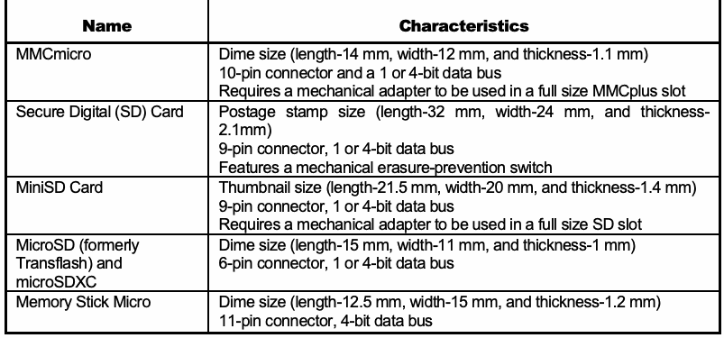
抽出したテキスト（原本と未照合・参考）
| Name | Characteristics |
| MMCmicro | Dime size (length-14 mm, width-12 mm, and thickness-1.1 mm) 10-pin connector and a 1 or 4-bit data bus Requires a mechanical adapter to be used in a full size MMCplus slot |
| Secure Digital (SD) Card | Postage stamp size (length-32 mm, width-24 mm, and thickness- 2.1mm) 9-pin connector, 1 or 4-bit data bus Features a mechanical erasure-prevention switch |
| MiniSD Card | Thumbnail size (length-21.5 mm, width-20 mm, and thickness-1.4 mm) 9-pin connector, 1 or 4-bit data bus Requires a mechanical adapter to be used in a full size SD slot |
| MicroSD (formerly Transflash) and microSDXC | Dime size (length-15 mm, width-11 mm, and thickness-1 mm) 6-pin connector, 1 or 4-bit data bus |
| Memory Stick Micro | Dime size (length-12.5 mm, width-15 mm, and thickness-1.2 mm) 11-pin connector, 4-bit data bus |
抽出したテキストの訳（原本と未照合・参考）
| 名称 | 特性 |
| MMCmicro | 10セント硬貨ほどの大きさ（長さ14 mm、幅12 mm、厚さ1.1 mm） 10ピンコネクタ、1ビットまたは4ビットのデータバス フルサイズのMMCplusスロットで使用するには機械式アダプターが必要 |
| Secure Digital（SD）カード | 切手ほどの大きさ（長さ32 mm、幅24 mm、厚さ2.1 mm） 9ピンコネクタ、1ビットまたは4ビットのデータバス 機械式の誤消去防止スイッチを備える |
| MiniSDカード | 親指の爪ほどの大きさ（長さ21.5 mm、幅20 mm、厚さ1.4 mm） 9ピンコネクタ、1ビットまたは4ビットのデータバス フルサイズのSDスロットで使用するには機械式アダプターが必要 |
| MicroSD（旧称Transflash）およびmicroSDXC | 10セント硬貨ほどの大きさ（長さ15 mm、幅11 mm、厚さ1 mm） 6ピンコネクタ、1ビットまたは4ビットのデータバス |
| Memory Stick Micro | 10セント硬貨ほどの大きさ（長さ12.5 mm、幅15 mm、厚さ1.2 mm） 11ピンコネクタ、4ビットのデータバス |
5.5 Cloud Based Services for Mobile Devices
5.5 モバイルデバイス向けクラウドベースサービス
Mobile cloud computing is the combination of mobile networks and cloud computing allowing user applications and data to be stored on the cloud (i.e., internet servers) rather than the mobile device memory. This data may be stored across geographically diverse locations.
モバイルクラウドコンピューティングは、モバイルネットワークとクラウドコンピューティングを組み合わせ、ユーザーのアプリケーションやデータをモバイルデバイスのメモリではなくクラウド（すなわちインターネット上のサーバー）に保存できるようにするものである。データは地理的に離れた複数の場所に保存される場合がある。
Cloud computing environments are complex in their design and frequently geographically disperse. Often, storage locations for cloud computing are chosen due to lowest cost and data redundancy requirements. One issue may be identification of the location of the data. This is an emerging field.
クラウドコンピューティング環境は設計が複雑であり、地理的に分散していることが多い。クラウドコンピューティングのストレージの場所は、多くの場合、最小コストとデータ冗長性の要件から選ばれる。データの所在を特定することが一つの問題となる場合がある。これは新興の分野である。
Cloud storage opens numerous possibilities for mobile device application developers beyond mobile device memory limitations. As mobile applications evolve data retrieval becomes seamless to the user and not apparent if data is stored on the cloud or the internal memory of the mobile device.
クラウドストレージにより、モバイルデバイスのメモリ容量の制約を超えた多くの可能性がモバイルデバイスのアプリケーション開発者に開かれる。モバイルアプリケーションが進化すると、データの取得はユーザーにとってシームレスになり、データがクラウドに保存されているのか、モバイルデバイスの内部メモリに保存されているのかが分からなくなる。
There are several factors within cloud computing environments that challenge forensics examiners requiring a hybrid approach to include both live and “dead box” forensic techniques. Additionally, recovery of user data stored in the cloud may become more problematic based on laws and regulations. Retrieval and analysis of cloud based data should follow agency specific guidelines on cloud forensics.
クラウドコンピューティング環境には、ライブフォレンジック技術と「デッドボックス」フォレンジック技術の両方を含むハイブリッドなアプローチを必要とする、フォレンジック調査担当者にとっての課題がいくつかある。さらに、クラウドに保存されたユーザーデータの復元は、法令や規制によって、より困難になる可能性がある。クラウドベースのデータの取得と分析は、各機関固有のクラウドフォレンジック指針に従うべきである。
The mobile device forensics examiner should not discount cloud based data left behind (e.g., browser cache or other forensics artifacts) that may be present on tangential equipment enabling an examiner to piece together what has occurred on a device.
モバイルデバイスのフォレンジック検査担当者は、周辺の機器に存在しうる、残されたクラウドベースのデータ（ブラウザーキャッシュやその他のフォレンジック上の痕跡など）を軽視すべきではない。こうしたデータによって、検査担当者はデバイス上で何が起きたかをつなぎ合わせることができる。
抽出したテキストの訳（原本と未照合・参考）
6. 調査と分析The examination process uncovers digital evidence, including that which may be hidden or obscured. The results are gained through applying established scientifically based methods and should describe the content and state of the data fully, including the source and the potential significance. Data reduction, separating relevant from irrelevant information, occurs once the data is exposed. The analysis process differs from examination in that it looks at the results of the examination for its direct significance and probative value to the case. Examination is a technical process that is the province of a forensic specialist. However, analysis may be done by roles other than a specialist, such as the investigator or the forensic examiner.
調査プロセスでは、隠された、または見えにくくされたものを含め、デジタル証拠を明らかにする。結果は、確立された科学的根拠のある手法を適用して得られ、データの出所や潜在的な重要性を含め、データの内容と状態を十分に記述するべきである。データが明らかになった後、関連情報と無関係な情報を分けるデータ削減が行われる。分析プロセスは、調査結果の直接的な重要性と証拠価値を検討する点で、調査とは異なる。調査は、フォレンジック専門家が担う技術的なプロセスである。一方、分析は、捜査担当者やフォレンジック調査担当者など、専門家以外の役割が行う場合もある。
The examination process begins with a copy of the evidence acquired from the mobile device. Fortunately, compared with classical examination of personal computers or network servers, the amount of acquired data to examine is much smaller with mobile devices. Because of the prevalence of proprietary case file formats, the forensic toolkit used for acquisition will typically be the one used for examination and analysis. While interoperability among the acquisition and examination facilities of different tools is possible, only a few tools support this feature. Examination and analysis using 3rd party tools are generally accomplished by importing a generated mobile device memory dump into a mobile forensics tool that supports 3rd party mobile device images.
調査プロセスは、モバイルデバイスから取得した証拠のコピーを用いて開始される。従来型のパーソナルコンピュータやネットワークサーバーの調査と比べると、モバイルデバイスで調査対象となる取得データの量ははるかに少ない。独自形式のケースファイルが広く使われているため、データ取得に用いたフォレンジックツールが、そのまま調査と分析にも通常使用される。異なるツール間で取得機能と調査機能の相互運用を実現できる場合もあるが、この機能に対応するツールは少数である。サードパーティ製ツールを用いた調査と分析は、通常、生成されたモバイルデバイスのメモリダンプを、サードパーティ製のモバイルデバイスイメージに対応するモバイルフォレンジックツールにインポートして行う。
未レビュー訳The forensic examiner will need information about the case and the parties involved to provide a starting point for potential evidence that might be found. Conducting the examination is a partnership between the forensic analyst or examiner and the investigator. The investigator provides insight into the types of information sought, while the forensic examiner provides the means to find relevant information that might be on the system.
フォレンジック検査担当者は、見つかるかもしれない潜在的な証拠について出発点を得るために、事件と関係当事者に関する情報を必要とする。検査の実施は、フォレンジック分析担当者または検査担当者と、捜査担当者との協働である。捜査担当者は求められている情報の種類についての見通しを提供し、フォレンジック検査担当者はシステム上にあるかもしれない関連情報を見つけるための手段を提供する。
The understanding gained by studying the case should provide ideas about the type of data to target and specific keywords or phrases to use when searching the acquired data. Depending on the type of case, the strategy varies. For example, a case about child pornography may begin with browsing all of the graphic images on the system, while a case about an Internet-related offense might begin with browsing all Internet history files.
事件を検討して得られた理解は、対象とするデータの種類や、取得データを検索するために用いる具体的なキーワードまたは語句の案につながるはずである。戦略は事件の種類によって異なる。たとえば、児童ポルノに関する事件では、システム上のすべての画像を閲覧することから始める場合がある。一方、インターネット関連の違反に関する事件では、すべてのインターネット履歴ファイルを閲覧することから始める場合がある。
未レビュー訳6.1 Potential Evidence
6.1 潜在的な証拠
Mobile device manufacturers typically offer a similar set of information handling features and capabilities, including Personal Information Management (PIM) applications, messaging and e-mail, and web browsing. The set of features and capabilities vary based on the era in which the device was manufactured, the version of firmware running, modifications made for a particular service provider, and any modifications or applications installed by the user. The potential evidence on these devices may include the following items:
モバイルデバイスの製造元は通常、個人情報管理（PIM）アプリケーション、メッセージングおよび電子メール、ウェブ閲覧など、類似した情報処理機能を提供する。機能は、デバイスの製造時期、稼働するファームウェアのバージョン、特定のサービスプロバイダー向けの変更、ユーザーが行った変更やインストールしたアプリケーションによって異なる。これらのデバイスに含まれる可能性のある証拠には、次のものがある：
•Subscriber and equipment identifiers
•翻訳準備中
•Date/time, language, and other settings
•翻訳準備中
•Phonebook/Contact information
•翻訳準備中
•Calendar information
•翻訳準備中
•Text messages
•翻訳準備中
•Outgoing, incoming, and missed call logs
•翻訳準備中
•Electronic mail
•翻訳準備中
•Photos
•翻訳準備中
•Audio and video recordings
•翻訳準備中
•Multi-media messages
•翻訳準備中
•Instant messaging
•翻訳準備中
•Web browsing activities
•翻訳準備中
•Electronic documents
•翻訳準備中
•Social media related data
•翻訳準備中
•Application related data
•翻訳準備中
•Location information
•翻訳準備中
•Geolocation data
•翻訳準備中
Even esoteric network information found on a UICC may prove useful in an investigation. For example, if a network rejects a location update from a phone attempting to register itself, the list of forbidden network entries in the Forbidden PLMNs (Public Land Mobile Networks) elementary file is updated with the code of the country and network involved [3GP07]. This list is maintained on the UICC and is due to service being declined by a foreign provider. The mobile device of an individual suspected of traveling to a neighboring country might be checked for this information.
翻訳準備中
The items present on a device are dependent not only on the features and capabilities of the mobile device, but also on the voice and data services subscribed to by the user. For example, prepaid phone service may rule out the possibility for multi-media messaging, electronic mail, and web browsing. Similarly, a contract subscription may selectively exclude certain types of service, though the phone itself may support them.
翻訳準備中
Two types of computer forensic investigations generally take place. The first type is where an incident has occurred but the identity of the offender is unknown (e.g., a hacking incident). The second is where the suspect and the incident are both known (e.g., a child-porn investigation). Prepared with the background of the incident, the forensic examiner and analyst may proceed toward accomplishing the following objectives:
翻訳準備中
•Gather information about the individual(s) involved {who}.
•関係者に関する情報を収集する（誰が）。
未レビュー訳•Determine the exact nature of the events that occurred {what}.
•発生した出来事の正確な内容を特定する（何が）。
未レビュー訳•Construct a timeline of events {when}.
•翻訳準備中
•Uncover information that explains the motivation for the offense {why}.
•翻訳準備中
•Discover what tools or exploits were used {how}.
•翻訳準備中
In many instances the data is peripheral to an investigation or useful in substantiating or refuting the claims of an individual about some incident. On occasion, direct knowledge, motivation, and intention may be established. Most of the evidence sources from mobile devices are: contact data, call data, messaging, pictures, video, social media, or Internet-related information. User applications potentially provide other evidence sources. User files placed on the device for rendering, viewing, or editing are other important evidence sources. Besides graphic files, other relevant file content includes audio and video recordings, spreadsheets, presentation slides, and other similar electronic documents.
翻訳準備中
Installed executable programs may also have relevance in certain situations. Often times the most important data recovered is that which links to information held by the service provider. Service providers maintain databases for billing or debiting accounts based on call logs, which can be queried using the subscriber or equipment identifiers. Similarly, undelivered SMS text messages, multi-media, or voice messages may also be recoverable. This may allow an examiner to validate their findings as the data obtained from the device may be verified with the data obtained from the service provider.
インストールされた実行可能プログラムも、特定の状況では関連性を持つことがある。多くの場合、回復されたデータのうち最も重要なのは、サービスプロバイダーが保有する情報に結び付くデータである。サービスプロバイダーは、通話ログに基づいてアカウントに請求する、または残高から差し引くためのデータベースを維持しており、これは加入者識別子または機器識別子を使って照会できる。同様に、未配信のSMSテキストメッセージ、マルチメディアメッセージ、または音声メッセージも回復できる場合がある。これにより、デバイスから得たデータをサービスプロバイダーから得たデータと照合できるため、検査担当者は自らの所見を検証できる場合がある。
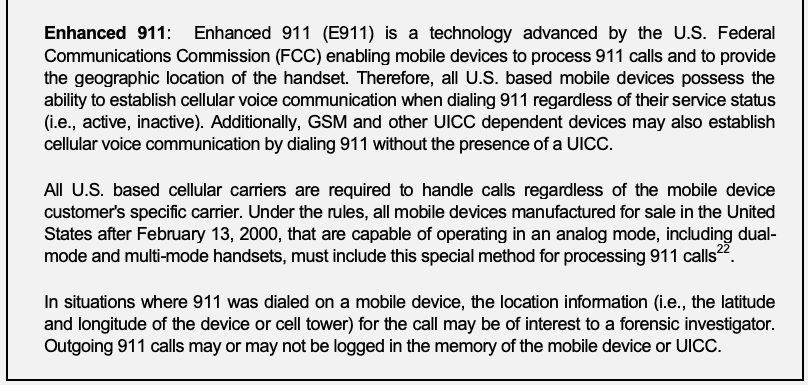
抽出したテキスト（原本と未照合・参考）
Enhanced 911: Enhanced 911 (E911) is a technology advanced by the U.S. Federal Communications Commission (FCC) enabling mobile devices to process 911 calls and to provide the geographic location of the handset. Therefore, all U.S. based mobile devices possess the ability to establish cellular voice communication when dialing 911 regardless of their service status (i.e., active, inactive). Additionally, GSM and other UICC dependent devices may also establish cellular voice communication by dialing 911 without the presence of a UICC. All U.S. based cellular carriers are required to handle calls regardless of the mobile device customer's specific carrier. Under the rules, all mobile devices manufactured for sale in the United States after February 13, 2000, that are capable of operating in an analog mode, including dual- mode and multi-mode handsets, must include this special method for processing 911 calls22. In situations where 911 was dialed on a mobile device, the location information (i.e., the latitude and longitude of the device or cell tower) for the call may be of interest to a forensic investigator. Outgoing 911 calls may or may not be logged in the memory of the mobile device or UICC.抽出したテキストの訳（原本と未照合・参考）
拡張911（E911）：拡張911（E911）は、モバイルデバイスが911通報を処理し、端末のおおよその地理的位置を提供できるようにするため、米国連邦通信委員会（FCC）が推進した技術である。したがって、米国で使用されるモバイルデバイスは、サービスの状態（有効または無効）にかかわらず、911に発信すると携帯電話の音声通信を確立できる。さらに、GSMなどのUICCに依存するデバイスも、UICCが装着されていなくても911への発信によって携帯電話の音声通信を確立できる場合がある。米国内のすべての携帯電話事業者は、モバイルデバイスの顧客がどの事業者と契約しているかにかかわらず、通話を取り扱うことを義務付けられている。規則により、2000年2月13日以降に米国内で販売する目的で製造され、アナログ方式で動作できるすべてのモバイルデバイス（デュアルモードおよびマルチモード端末を含む）は、911通報を処理するための特別な方式を備えなければならない22。モバイルデバイスから911に発信された場合、その通話に関する位置情報（デバイスまたは基地局の緯度・経度など）がフォレンジック調査担当者にとって関心対象となることがある。発信911通話は、モバイルデバイスまたはUICCのメモリに記録される場合と、されない場合がある。6.2 Applying Mobile Device Forensic Tools
6.2 モバイルデバイス・フォレンジックツールの適用
Once a copy of the acquisition results are available, the next steps involve searching the data, identifying evidence, creating bookmarks, and developing the contents of a final report. Knowledge and experience with the tools used for examination are extremely valuable, since proficient use of the available features and capabilities of a forensic tool can greatly speed the examination process.
取得結果のコピーが用意できたら、次の段階ではデータを検索し、証拠を特定し、ブックマークを作成し、最終報告書の内容をまとめる。調査に使うツールに関する知識と経験は非常に重要である。フォレンジックツールの機能や性能を習熟して活用すれば、調査プロセスを大幅に迅速化できる。
It is important to note that forensic tools have the potential to contain some degree of error in their operation. For example, the implementation of the tool may have a programming error; the specification of a file structure used by the tool to translate bits into data comprehensible by the examiner may be inaccurate or out of date; or the file structure generated by another program as input may be incorrect, causing the tool to function improperly. Experiments conducted with mobile device forensic tools indicate a prevalence of errors in the formatting and display of data [Aye11, Jan09]. Therefore, having a high degree of trust and understanding of the tool’s ability to perform its function properly is essential. The Computer Forensics Tool Testing (CFTT) project at the National Institute of Standards and Technology (NIST) produces specification, test methods and test reports that provide a foundation for toolmakers to improve tools, users to make informed choices, and provide interested parties with an overview of any anomalies found. CFTT has spent several years researching and testing forensic tools capable of acquiring data from the internal memory of mobile devices and Subscriber Identity Modules (SIMs).
フォレンジックツールの動作には、ある程度の誤りが含まれる可能性があることに留意する必要がある。たとえば、ツールの実装にプログラミング上の誤りがある場合、ツールがビット列を調査担当者に理解できるデータへ変換する際に使うファイル構造の仕様が不正確または古い場合、あるいは入力として別のプログラムが生成したファイル構造が誤っている場合には、ツールが適切に動作しないことがある。モバイルデバイスのフォレンジックツールを用いた実験では、データの書式設定や表示に誤りが多いことが示されている［Aye11、Jan09］。したがって、ツールが機能を適切に実行できることについて、高い信頼と十分な理解を持つことが不可欠である。米国国立標準技術研究所（NIST）のコンピュータフォレンジックツール試験（CFTT）プロジェクトは、ツールメーカーがツールを改善し、ユーザーが十分な情報に基づいて選択し、関係者が発見された異常の概要を把握できるよう、基盤となる仕様、試験方法、および試験報告書を作成している。CFTTは数年にわたり、モバイルデバイスおよび加入者識別モジュール（SIM）の内部メモリからデータを取得できるフォレンジックツールの研究と試験を行ってきた。
A knowledgeable individual may tamper with device information, such as purposefully modifying a file extension to foil the workings of a tool, altering the date/time of the mobile device to falsify timestamps associated with logged activities, creating false transactions in the memory of the mobile device or its UICC or utilizing a wiping tool to remove or eliminate data from memory. Seasoned experience with a tool provides an understanding of its limitations, allowing an examiner to compensate for them and minimize errors to achieve the best possible results.
知識のある人物は、ツールの動作を妨げる目的でファイル拡張子を変更したり、記録された活動に関連するタイムスタンプを偽造するためにモバイルデバイスの日付／時刻を変更したり、モバイルデバイスまたはそのUICCのメモリに偽のトランザクションを作成したり、消去ツールを使ってメモリのデータを消去または削除したりするなど、デバイス情報を改ざんすることがある。ツールを使った経験を積むと、その限界を理解できるようになり、調査担当者は限界を補い、誤りを最小限に抑えて最善の結果を得られる。
To uncover evidence, specialists should gain a background of the suspect, offense and determine a set of terms for the examination. Search expressions should be developed in a systematic fashion, such as using contact names that may be relevant. By proceeding systematically, the specialist creates a profile for potential leads that may unveil valuable findings. Forensic Examination of Digital Evidence – A Guide for Law Enforcement, produced by the U.S. Department of Justice [DOJ08], offers the following suggestions for the analysis of extracted data:
証拠を明らかにするため、専門家は容疑者と犯罪についての背景情報を把握し、検査で用いる一連の用語を定めるべきである。検索式は、関連する可能性のある連絡先名を使うなど、体系的なやり方で作成すべきである。体系的に進めることで、専門家は、価値ある発見を明らかにするかもしれない潜在的な手掛かりのプロファイルを作成する。米国司法省が作成した『Forensic Examination of Digital Evidence – A Guide for Law Enforcement』[DOJ08]は、抽出したデータの分析について次の提案をしている：
•Ownership and possession – Identify the individuals who created, modified, or accessed a file, and the ownership and possession of questioned data by placing the subject with the device at a particular time and date, locating files of interest in non-default locations, recovering passwords that indicate possession or ownership, and identifying contents of files that are specific to a user.
•所有および占有 – 特定の日時に対象者とデバイスを結び付け、関心対象のファイルが既定以外の場所にあるかを調べ、所有または占有を示すパスワードを復元し、特定のユーザーに結び付くファイルの内容を特定することで、ファイルを作成、変更、またはアクセスした人物ならびに問題となるデータの所有者および占有者を特定する。
未レビュー訳•Application and file analysis – Identify information relevant to the investigation by examining file content, correlating files to installed applications, identifying relationships between files (e.g., e-mail files to e-mail attachments), determining the significance of unknown file types, examining system configuration settings, and examining file metadata (e.g., documents containing authorship identification).
•アプリケーションおよびファイルの分析 – ファイル内容を調べ、ファイルとインストール済みアプリケーションを関連付け、ファイル間の関係（電子メールファイルと添付ファイルなど）を特定し、不明なファイル形式の重要性を判断し、システム構成設定を調べ、ファイルのメタデータ（作成者を特定する情報を含む文書など）を調べて、調査に関係する情報を特定する。
未レビュー訳•Timeframe analysis – Determine when events occurred on the system to associate usage with an individual by reviewing any logs present and the date/time stamps in the file system, such as the last modified time. Besides call logs, the date/time and content of messages and e-mail can prove useful. Such data can also be corroborated with billing and subscriber records kept by the service provider.
•時系列の分析 – システム上のログおよびファイルシステム内の日時スタンプ（最終変更時刻など）を調べ、個人の利用と関連付けるために、出来事がいつ発生したかを特定する。通話履歴に加え、メッセージや電子メールの日時および内容が役立つことがある。このようなデータは、通信事業者が保有する課金記録および加入者記録と照合して裏付けることもできる。
•Data hiding analysis – Detect and recover hidden data that may indicate knowledge, ownership, or intent by correlating file headers to file extensions to show intentional obfuscation; gaining access to password-protected, encrypted, and compressed files; gaining access to steganographic information detected in images; and gaining access to reserved areas of data storage outside the normal file system.
•データ隠蔽の分析 – ファイルヘッダーとファイル拡張子を照合して意図的な難読化を示す、パスワード保護・暗号化・圧縮されたファイルにアクセスする、画像内で検出されたステガノグラフィ情報にアクセスする、通常のファイルシステム外にある予約済みストレージ領域にアクセスするなどの方法で、知識、所有、または意図を示す可能性のある隠しデータを検出して復元する。
The capabilities of the tool and the richness of its features, versus the operating system and type of device under examination, determines what information can be recovered, identified, and reported, and the amount of effort needed. The search engine plays a significant role in the discovery of information used for the creation of bookmarks and final reporting. For example, some tools used to search for textual evidence identify and categorize files based on file extension, where others use a file signature database. The latter feature is preferable since it eliminates the possibility of missing data because of an inconsistent file name extension (e.g., eliminating a text file whose extension was changed to that of a graphics or image file). Similarly, the ability for the tool to find and gather images automatically into a common graphics library for examination is extremely useful.
ツールの機能や特徴の豊富さと、調査対象のオペレーティングシステムおよびデバイスの種類によって、復元、特定、報告できる情報と必要な作業量が決まる。検索エンジンは、ブックマークの作成や最終報告に使う情報の発見に重要な役割を果たす。たとえば、テキスト証拠を検索するツールの中には、ファイル拡張子に基づいてファイルを特定・分類するものがある一方、ファイル署名データベースを使うものもある。後者の機能のほうが望ましい。ファイル名の拡張子が一致しないためにデータを見落とす可能性（たとえば、テキストファイルの拡張子が画像ファイルのものに変更されている場合）をなくせるからである。同様に、ツールが画像を自動的に検索して共通の画像ライブラリに集め、調査できる機能も非常に有用である。
Searching data for information on incriminating or exculpatory evidence takes patience and can be time consuming. Some tools have a simple search engine that matches an input text string exactly, allowing only for elementary searches to be performed. Other tools incorporate more intelligent and feature rich search engines, allowing for generalized regular expression patterns (grep) type searches, including wildcard matches, filtering of files by extension, directory and batch scripts that search for specific types of content (e.g., e-mail addresses, URLs). The greater the tool’s capabilities, the more the forensic examiner benefits from experience with and knowledge of the tool.
有罪を示す証拠または無罪を示す証拠となる情報をデータから検索するには、忍耐が必要で、時間がかかることがある。入力した文字列と完全一致するものだけを検索し、基本的な検索しかできない単純な検索エンジンを備えたツールもある。より高度で機能豊富な検索エンジンを搭載したツールでは、ワイルドカード検索、拡張子によるファイルのフィルタリング、電子メールアドレスやURLなど特定の内容を検索するディレクトリ／バッチスクリプトを含む、一般化された正規表現（grep）型の検索が可能である。ツールの機能が豊富であるほど、フォレンジック調査担当者は経験と知識を活用できる。
6.3 Call and Subscriber Records
6.3 通話記録および加入者記録
Records maintained by the service provider capture information needed to accurately bill a subscriber or, in the case of a prepaid service plan, debit the balance. The records collected are referred to as call detail records (CDRs), which are generated by the switch handling an originating call or SMS message from a mobile device. For some service providers, the records may also include fixed line, international gateway, and voice over IP transaction information. While the content and format of these records differ widely from one service provider to another, the fundamental data needed to identify the subscriber/device initiating the call, the initial cell servicing the call, the number dialed, and the duration of the call is captured. Detailed information such as the identifier of the cell (i.e., the BTS) and the sector involved are often included. Appendix C gives an example of the data elements of a CDR, specified in the GSM standards [ETS99]. As one can see, considerable discretion about what is implemented is left open to the service providers and network operators.
通信事業者が保有する記録には、加入者への正確な請求、またはプリペイドサービスプランの場合は残高からの差し引きに必要な情報が記録される。収集された記録は通話詳細記録（CDR）と呼ばれ、モバイルデバイスからの発信通話またはSMSメッセージを処理する交換機によって生成される。通信事業者によっては、固定回線、国際ゲートウェイ、およびIP電話のトランザクション情報も記録に含まれる。記録の内容と形式は通信事業者ごとに大きく異なるが、通話を開始した加入者／デバイス、通話を最初に処理したセル、発信先の番号、および通話時間を特定するために必要な基本データは記録される。多くの場合、セル（すなわちBTS）の識別子や関係するセクターなど、詳細情報も含まれる。付録Cには、GSM標準［ETS99］で定義されたCDRのデータ要素の例を示す。このように、実装する内容について通信事業者とネットワーク事業者にはかなりの裁量が残されている。
The retention period for maintaining call detail and other types of records varies among service providers [GSM05]. However, the period is generally limited, requiring immediate action to avoid data loss. One should act quickly to have the cellular carrier preserve any data that can be used to identify communications that have occurred and are linked to the parties of interest, stressing non-disclosure of that action to the account subscriber [Ala03, Ala04]. The data available may include subscriber records, the content of email servers (i.e., undelivered email), email server logs, or other IP address authentication logs, the content of SMS and MMS message servers, and the content of voicemail servers. Note that certain types of undelivered content, such as voicemail, may be considered in transit from a legal standpoint in some jurisdictions, and obtaining or listening to them without the proper authority may be treated as an illegal interception of communications [Ala03]. While the USA PATRIOT Act eliminated this issue at the federal level, state statutes may be intentionally more restrictive or not yet be realigned completely with the federal statute.23
通話詳細記録やその他の記録の保存期間は、通信事業者によって異なる［GSM05］。ただし、通常は期間が限られているため、データの損失を避けるには速やかな対応が必要である。関心対象者に関連する通信を特定するために利用できるデータを携帯電話事業者に保全させるには、迅速に行動するべきであり、その対応をアカウント加入者に開示しないよう求める［Ala03、Ala04］。入手可能なデータには、加入者記録、電子メールサーバーの内容（未配信電子メールなど）、電子メールサーバーのログ、その他のIPアドレス認証ログ、SMSおよびMMSメッセージサーバーの内容、ボイスメールサーバーの内容が含まれる場合がある。ボイスメールなど未配信のコンテンツは、一部の法域では法的に通信途中とみなされることがあるため、適切な権限なしに取得または聴取すると、通信の違法傍受として扱われる可能性がある［Ala03］。米国愛国者法（USA PATRIOT Act）により連邦レベルではこの問題が解消されたが、州法は意図的により厳格である場合や、連邦法との整合がまだ完全に取れていない場合がある。23
未レビュー訳For example, CDRs will contain information such as: sender and receiver phone numbers, time and duration of the call, call type (i.e., voice, SMS), etc. CDRs may be obtained from U.S. service providers through their law enforcement point of contact, with the appropriate legal documentation. Procedures may vary among states in the U.S., and new laws regarding proper seizure are continually legislated. Procedures also vary for getting records from service providers and network operators located in other countries. Close and continuing consultation with legal counsel is advised. Various online law enforcement forums can also be helpful in identifying points of contact and sharing tips on procedures for accurately obtaining the required data.24
翻訳準備中
Besides call detail records, subscriber records maintained by a service provider can provide data useful in an investigation. For example, for GSM systems, the database usually contains the following information about each customer [Wil03]:
通話詳細記録に加え、通信事業者が保有する加入者記録からも、調査に役立つデータが得られることがある。たとえば、GSMシステムのデータベースには通常、各顧客について次の情報が含まれる［Wil03］：
•Customer name and address
•顧客の氏名および住所
•Billing name and address (if other than customer)
•請求先の氏名および住所（顧客と異なる場合）
•User name and address (if other than customer)
•ユーザーの氏名および住所（顧客と異なる場合）
•Billing account details
•翻訳準備中
•Telephone number (MSISDN)
•翻訳準備中
•IMSI
•翻訳準備中
•UICC serial number (ICCID)
•翻訳準備中
•PIN/PUK for the UICC
•UICCのPIN／PUK
•Services allowed
•利用可能なサービス
Other useful information, including phone numbers (i.e., work or home), contact information (e.g., email address), and credit card numbers used, may also be retained in subscriber records. Pay-as-you-go prepaid phones purchased anonymously over the counter may also have useful information maintained with their accounts, which was supplied by the subscribers, such as the credit card numbers used for purchases of additional time or an email address registered online for receipt of notifications. Gaining access to the call records of prepaid phones should not be ruled out.
電話番号（勤務先または自宅など）、連絡先情報（電子メールアドレスなど）、使用されたクレジットカード番号など、その他の有用な情報が加入者記録に保存されている場合もある。店頭で匿名購入された従量制プリペイド電話についても、追加通話時間の購入に使われたクレジットカード番号や、通知の受信にオンライン登録した電子メールアドレスなど、加入者が提供した有用な情報がアカウントに保持されている場合がある。プリペイド電話の通話記録へのアクセスを得る可能性を排除すべきではない（should not）。
CDRs and other records maintained by the service provider can be requested using subscriber or equipment identifier information seized or acquired from a mobile device or UICC. Subscriber information often used for this purpose includes the IMSI from the UICC and the mobile device number (i.e., MSISDN). Equipment identifiers used are the ESN or IMEI of the phone and the serial number (i.e., ICCID) of the UICC. The search criteria used could be, for example, all calls received by a certain phone number (e.g., that of a victim) or all calls handled by a base station responsible for a particular cell (i.e., to determine who was in a certain area at a certain time) [Wil03]. The analysis of the initial set of records obtained usually leads to additional requests for related records of other subscribers and equipment, based on the data uncovered. For example, frequent calls to a victim’s mobile device from one or more other mobile devices before a homicide would logically lead to interest in obtaining the records of the caller(s).
モバイルデバイスまたはUICCから押収または取得した加入者識別子／機器識別子の情報を使って、通信事業者が保有するCDRやその他の記録を請求できる。この目的でよく用いられる加入者情報には、UICCのIMSIとモバイルデバイス番号（MSISDN）が含まれる。機器識別子には、電話機のESNまたはIMEI、およびUICCのシリアル番号（ICCID）が用いられる。検索条件として、特定の電話番号（被害者の番号など）が受けたすべての通話、あるいは特定のセルを担当する基地局が処理したすべての通話（特定の時刻に特定の地域に誰がいたかを判断するため）などを指定できる［Wil03］。最初に取得した記録一式を分析すると、明らかになったデータに基づいて、他の加入者や機器に関する関連記録を追加で請求することにつながることが多い。たとえば、殺人事件の前に、1台以上の他のモバイルデバイスから被害者のデバイスへ頻繁に発信されていた場合、発信者の記録の取得に関心が向くのは当然である。
CDRs can be analyzed for a variety of purposes. For example, a service provider may use them to understand the calling patterns of their subscribers and the performance of the network [Aja06]. Call detail records can also be used with cell site tower information obtained from the service provider to translate cell identifiers into geographical locations for the cells involved and identify the general locale from which calls were placed. While plotting call record locations and information onto a map can sometimes be useful, it does not necessarily provide a complete and accurate picture. Cell towers can service phones at distances of up to 35 kilometers (approximately 21 miles) and may service several distinct sectors. Radio frequency coverage maps maintained by the service provider can be obtained to create a more exact portrayal of the data for the sectors involved. The results of the data analysis can be used to determine the location of the mobile device at a given time [Oco09]. The analysis can also help to establish timelines and identify possible co-conspirators [Mil08]. A change of cell identifier between the beginning and the end of a call, over a series of calls, may also indicate a general direction of travel or pattern of behavior.
CDRはさまざまな目的で分析できる。たとえば、サービスプロバイダーは、加入者の通話パターンやネットワークの性能を把握するためにCDRを利用することがある[Aja06]。通話詳細記録は、サービスプロバイダーから入手したセルサイトのタワー情報と併せて用いることで、セル識別子を関係するセルの地理的位置に変換し、通話が発信されたおおよその場所を特定することにも使える。通話記録の位置と情報を地図上にプロットすることは役立つ場合もあるが、必ずしも完全かつ正確な全体像を与えるわけではない。セルタワーは最大35キロメートル（約21マイル）の距離にある電話機にサービスを提供でき、複数の別個のセクターにサービスを提供することもある。関係するセクターについてデータをより正確に描き出すために、サービスプロバイダーが維持している無線周波数のカバレッジマップを入手できる。データ分析の結果は、ある時点におけるモバイルデバイスの位置を判定するために利用できる[Oco09]。この分析は、タイムラインの確立や、共謀者である可能性のある人物の特定にも役立つ[Mil08]。一連の通話にわたって、通話の開始時と終了時とでセル識別子が変化していれば、おおよその移動方向や行動パターンを示している場合もある。
The boundaries of a cell are somewhat variable. Various factors, such as terrain, seasonal changes, antenna performance, and call loading, affect the coverage area of cells and the plausible locale to associate with a call record. Detailed field tests and measurements may be required to ensure an accurate analysis. Tools exist to aid law enforcement in performing cell site analysis and mapping activities independently. In some situations, such as densely populated urban locations involving microcells or picocells with a limited coverage area, location determination may be relatively straightforward by the very nature of the network.
セルの境界はある程度変動する。地形、季節による変化、アンテナの性能、通話負荷などさまざまな要因が、セルのカバレッジエリアと通話記録に結び付けられる妥当な地域に影響する。正確な分析には、詳細な現地試験と測定が必要となる場合がある。法執行機関がセルサイトの分析やマッピングを独自に実施するためのツールも存在する。マイクロセルやピコセルのようにカバレッジ範囲が限られるセルを用いる人口密集都市部などでは、ネットワークの性質上、位置の特定が比較的容易な場合もある。
Identifying the geographical coverage of specific cells may provide valuable information when combined with call detail records, geographically establishing plausible locations with some degree of certainty for the times involved. Professional criminals are aware of these capabilities and may attempt to turn them to their advantage by having someone use their mobile device to establish a false alibi. Attempts at evasion may also occur. A common ploy used is to purchase, use, and quickly dispose of pay-as-you-go prepaid phones to minimize exposure or use stolen phones. To obfuscate usage and complicate analysis of records, a variety of different UICCs may be swapped among different GSM/UMTS mobile devices.
特定のセルの地理的カバレッジを特定することは、通話詳細記録と組み合わせることで、該当する時刻についてもっともらしい位置をある程度の確度で地理的に立証でき、有用な情報をもたらす場合がある。職業的な犯罪者はこうした能力を承知しており、誰かに自分のモバイルデバイスを使わせて偽のアリバイを作ることで、これを自分に有利に利用しようとすることがある。回避の試みが行われることもある。よく使われる手口は、露見を最小限に抑えるために従量制のプリペイド電話を購入し、使用し、すぐに処分すること、あるいは盗んだ電話を使うことである。使用状況を分かりにくくし、記録の分析を複雑にするために、さまざまなUICCが異なるGSM/UMTSモバイルデバイスの間で差し替えられることもある。
Careful analysis of the call records in conjunction with other forms of available data may be useful establishing the relationship between the mobile device and its owner. For example, call detail records of pay-as-you-go prepaid phones are maintained by and available from network providers, the same as for contract subscriptions. By analyzing the patterns and content of communications and mapping the dat to known associates of a suspect, ownership of such phones is possible to establish. Other traditional forms of forensic evidence (e.g., fingerprinting, DNA) may also be used to establish ownership.
通話記録を、利用可能な他の形式のデータと併せて注意深く分析することは、モバイルデバイスとその所有者との関係を立証するうえで有用な場合がある。たとえば、従量制プリペイド電話の通話詳細記録は、契約による加入の場合と同じく、ネットワークプロバイダーによって維持され、そこから入手できる。通信のパターンと内容を分析し、そのデータを容疑者の既知の関係者に対応付けることで、そのような電話の所有関係を立証することが可能である。他の従来型のフォレンジック証拠（指紋、DNAなど）も、所有関係の立証に用いられることがある。
Network traffic information quantifying the amount of data transferred to/from the device is also frequently reported and may aid an investigator in specific investigations.
デバイスとの間で転送されたデータ量を定量化するネットワークトラフィック情報も、頻繁に報告されており、特定の調査で捜査担当者の役に立つ場合がある。
抽出したテキストの訳（原本と未照合・参考）
7. 報告Reporting is the process of preparing a detailed summary of all the steps taken and conclusions reached in the investigation of a case. Reporting depends on maintaining a careful record of all actions and observations, describing the results of tests and examinations, and explaining the inferences drawn from the data. A good report relies on solid documentation, notes, photographs and tool-generated content.
報告とは、事件の調査で行ったすべての手順と到達した結論を詳細に要約するプロセスである。報告を行うには、すべての行為と観察結果を注意深く記録し、試験および調査の結果を説明し、データから導いた推論を示す必要がある。質の高い報告書は、確かな文書記録、メモ、写真、およびツールが生成した内容に基づく。
Reporting occurs once the data has been thoroughly searched and relevant items bookmarked. Many forensic tools come with a built-in reporting facility that usually follows predefined templates and may allow customization of the report structure. Permitted customizations include allowing for organization logos and report headers and selection of styles and structure to provide a more professional look tailored to the organization’s needs. Reports generated by a forensic tool typically include items from the case file, such as the specialist’s name, a case number, a date and title, the categories of evidence, and the relevant evidence found. Report generation typically either outputs all of the data obtained or allows examiners to select relevant data (i.e., bookmarked items) for the final report. Including only relevant findings in the report minimizes its size and lessens confusion for the reader.
報告は、データが徹底的に検索され、関連する項目にブックマークが付けられた後に行われる。多くのフォレンジックツールには組み込みの報告機能が備わっており、通常は事前定義されたテンプレートに従うが、報告書の構成をカスタマイズできる場合もある。許されるカスタマイズには、組織のロゴや報告書ヘッダーを入れられること、および組織のニーズに合わせたより専門的な体裁とするためのスタイルと構成の選択が含まれる。フォレンジックツールが生成する報告書には通常、専門家の氏名、事件番号、日付と表題、証拠のカテゴリ、発見された関連証拠といった、事件ファイルの項目が含まれる。報告書の生成では通常、取得したすべてのデータを出力するか、最終報告書に載せる関連データ（すなわちブックマークした項目）を検査担当者が選択できるかのいずれかである。関連する所見だけを報告書に含めることで、報告書のサイズを最小限に抑え、読み手の混乱を減らせる。
The software-generated contents are only one part of the overall report. The final report contains the software-generated contents along with data accumulated throughout the investigation that summarizes the actions taken, the analysis done, and the relevance of the evidence uncovered. Ideally, the supporting documentation is in electronic form and able to be incorporated directly into the report.
ソフトウェアが生成した内容は、報告書全体の一部にすぎない。最終報告書には、ソフトウェアが生成した内容とともに、実施した行為、行った分析、および明らかになった証拠の関連性を要約する、調査全体を通じて蓄積されたデータが含まれる。理想的には、裏付けとなる文書は電子形式であり、報告書に直接組み込むことができる。
Reporting facilities vary significantly across mobile device acquisition applications. Report generation typically can render a complete report in one of several common formats (e.g., .txt, .csv, .doc, .html, .pdf) or at least provide a means to export out individual data items to compose a report manually. A few tools include no means of report generation or data export and instead require examiners to capture individual screenshots of the tool interface for later assembly into a report format. Regardless of how reports are generated, checking that the finalized report is consistent with the data presented in the user interface representation is vital to identify and eliminate any possible inconsistencies that may appear [Aye11].
モバイルデバイス取得アプリケーションの報告機能は大きく異なる。一般に、報告書生成機能では、一般的な形式（.txt、.csv、.doc、.html、.pdfなど）のいずれかで完全な報告書を出力できるか、少なくとも個々のデータ項目をエクスポートして手作業で報告書を作成できる。一部のツールには報告書生成機能やデータエクスポート機能がなく、後で報告書形式にまとめるため、調査担当者がツール画面のスクリーンショットを個別に撮影する必要がある。報告書の生成方法にかかわらず、完成した報告書がユーザーインターフェース上に示されたデータと一致していることを確認することは、現れ得る不整合を特定し排除するうえで不可欠である[Aye11]。
The ability to modify a pre-existing report and incorporate data (e.g., images, video stills) captured by alternative means is advantageous. Auxiliary acquisition techniques are sometime required to recover specific data types, as mentioned earlier. For example, video recording a manual examination documents the recovery of data that the automated forensic tool may not have acquired. Video editing software allows still images to be captured for inclusion into the report. Pictures could also be taken of the manual exam using a digital camera; though this process is less efficient and may not document the entire process, it may be the only method available.
既存の報告書を変更し、別の手段で取得したデータ（画像や動画の静止画など）を組み込めると有利である。前述のとおり、特定の種類のデータを復元するには補助的な取得技法が必要となる場合がある。たとえば、手作業による調査を動画で記録すれば、自動フォレンジックツールが取得できなかったデータの復元を記録できる。動画編集ソフトウェアを使うと、報告書に含める静止画を切り出せる。デジタルカメラで手動調査の写真を撮ることもできるが、この方法は効率が低く、プロセス全体を記録できない場合もあり、利用可能な唯一の方法であることもある。
The type of data determines whether it is presentable in a hard-copy format. Today, many popular mobile devices are capable of capturing audio and video. Such evidentiary data (e.g., audio, video) cannot easily be presented in a printed format and instead should be included with the finalized report on removable media (e.g., CD-R, DVD-R, or flash drive) along with the appropriate application for proper display.
データの種類によって、紙面で提示できるかどうかが決まる。現在、多くの一般的なモバイルデバイスは音声や動画を記録できる。このような証拠データ（音声や動画など）は印刷物では提示しにくいため、適切に再生するためのアプリケーションとともに、リムーバブルメディア（CD-R、DVD-R、フラッシュドライブなど）に収録して最終報告書に添付するべきである。
Reports of forensic examination results should include all the information necessary to identify the case and its source, outline the test results and findings, and bear the signature of the individual responsible for its contents. In general, the report may include the following information [DOJ08]:
フォレンジック検査結果の報告書は、事件とその出所を特定するために必要なすべての情報を含み、試験結果と所見を概説し、その内容に責任を負う個人の署名を付すべきである。一般に、報告書には次の情報を含めることができる[DOJ08]：
•Identity of the reporting agency
•報告機関の名称
未レビュー訳•Case identifier or submission number
•事件識別子または提出番号
未レビュー訳•Case investigator
•事件の捜査担当者
•Identity of the submitter
•提出者の氏名
•Date of evidence receipt
•証拠の受領日
•Date of report
•報告日
未レビュー訳•Descriptive list of items submitted for examination, including serial number, make, and model
•調査対象として提出された項目の説明一覧（シリアル番号、メーカー、モデルを含む）
未レビュー訳•Identity and signature of the examiner
•調査担当者の氏名および署名
•The equipment and set up used in the examination
•調査に用いた機器と設定
•Brief description of steps taken during examination, such as string searches, graphics image searches, and recovering erased files.
•文字列検索、画像検索、消去済みファイルの復元など、調査中に実施した手順の簡潔な説明
•Supporting materials such as printouts of particular items of evidence, digital copies of evidence, and chain of custody documentation
•特定の証拠項目の印刷物、証拠のデジタルコピー、証拠保管の連鎖に関する文書などの裏付け資料
未レビュー訳•Details of findings:
•所見の詳細：
•Specific files related to the request
•依頼に関連する特定のファイル
•Other files, including deleted files, that support the findings
•所見を裏付けるその他のファイル（削除済みファイルを含む）
•String searches, keyword searches, and text string searches
•文字列検索、キーワード検索、およびテキスト文字列検索
•Internet-related evidence, such as Web site traffic analysis, chat logs, cache files, e-mail, and news group activity
•ウェブサイトのトラフィック分析、チャットログ、キャッシュファイル、電子メール、ニュースグループの活動など、インターネット関連の証拠
•Graphic image analysis
•画像分析
•Indicators of ownership, which could include program registration data
•プログラムの登録データなど、所有者を示す情報
•Data analysis
•データ分析
•Description of relevant programs on the examined items
•調査対象の項目に関連するプログラムの説明
•Techniques used to hide or mask data, such as encryption, steganography, hidden attributes, hidden partitions and file name anomalies
•暗号化、ステガノグラフィ、隠し属性、隠しパーティション、ファイル名の不自然な点など、データを隠したり覆い隠したりするために用いられる手法
未レビュー訳•Report conclusions
•報告書の結論
Digital evidence, as well as the tools, techniques and methodologies used in an examination is subject to being challenged in a court of law or other formal proceedings. Proper documentation is essential in providing individuals the ability to re-create the process from beginning to end. As part of the reporting process, making a copy of the software used and including it with the output produced is advisable when custom tools are used for examination or analysis, should it become necessary to reproduce forensic processing results.
デジタル証拠ならびに調査に用いたツール、技法、方法論は、法廷その他の正式な手続きにおいて異議を申し立てられる可能性がある。最初から最後までのプロセスを再現できるようにするには、適切な文書化が不可欠である。報告プロセスの一環として、調査または分析にカスタムツールを使用した場合、フォレンジック処理の結果を再現する必要が生じたときに備え、使用したソフトウェアのコピーを作成し、生成物とともに含めることが望ましい。
抽出したテキストの訳（原本と未照合・参考）
8. 参考文献The references below are divided into two sections. The first section contains bibliographic citations. The second section contains the URLs that were footnoted throughout the guide.
翻訳準備中
8.1 Bibliographic Citations
翻訳準備中
[3GP07] 3GPP (2007), Specification of the Subscriber Identity Module - Mobile Equipment (SIM - ME) interface, 3rd Generation Partnership Project, TS 11.11 V8.14.0 (Release 1999), Technical Specification, (2007-06).
翻訳準備中
[ACP11] Good Practice and Advice Guide for Managers of e-Crime Investigation, January 2011, <URL: http://www.acpo.police.uk/documents/crime/2011/201103CRIECI14.pdf>.
翻訳準備中
[Aja06] Ireti Ajala, Spatial Analysis of GSM Subscriber Call Data Records, Directions Magazine, Mar 07, 2006, <URL: http://www.directionsmag.com/article.php?article_id=2112&trv=1>.
[Aja06] Ireti Ajala、Spatial Analysis of GSM Subscriber Call Data Records、Directions Magazine、2006年3月7日、<URL: http://www.directionsmag.com/article.php?article_id=2112&trv=1>。
[Ala03] Searching Voicemail and E-mail, Point of View, Alameda County District Attorney's Office, Winter 2003, <URL: http://www.acgov.org/da/pov/documents/voicemail.pdf>.
[Ala03] Searching Voicemail and E-mail、Point of View、Alameda County District Attorney's Office、2003年冬、<URL: http://www.acgov.org/da/pov/documents/voicemail.pdf>。
[Ala04] Phone, E-mail, and Internet Records, Point of View, Alameda County District Attorney's Office, Fall 2004, <URL: http://www.acgov.org/da/pov/documents/phone.pdf>.
[Ala04] Phone, E-mail, and Internet Records、Point of View、Alameda County District Attorney's Office、2004年秋、<URL: http://www.acgov.org/da/pov/documents/phone.pdf>。
[Alz07] Marwan Al-Zarouni, Introduction to Mobile Phone Flasher Devices and Considerations for their Use in Mobile Phone Forensics, Australian Digital Forensics Conference, December 2007, <URL: http://ro.ecu.edu.au/cgi/viewcontent.cgi?article=1015&context=adf>.
[Alz07] Marwan Al-Zarouni、Introduction to Mobile Phone Flasher Devices and Considerations for their Use in Mobile Phone Forensics、Australian Digital Forensics Conference、2007年12月、<URL: http://ro.ecu.edu.au/cgi/viewcontent.cgi?article=1015&context=adf>。
[Avi10] Adam J. Aviv, Katherine Gibson, Evan Mossop, Matt Blaze, and Jonathan M. Smith, Smudge Attacks on Smartphone Touch Screens, 4th USENIX Workshop on Offensive Technologies, August 2010, <URL: https://www.usenix.org/legacy/event/woot10/tech/full_papers/Aviv.pdf>.
翻訳準備中
[Aye11] Rick Ayers, Computer Forensic Tool Testing (CFTT) Program<URL: http://www.cftt.nist.gov/mobile_devices.htm>.
翻訳準備中
[Aye12] Rick Ayers, Forensics@NIST <URL: http://www.nist.gov/oles/upload/6-Ayers_Richard-Mobile-Device-Tool-Testing.pdf>.
翻訳準備中
[Bad10] Mona Bader, Ibrahim Baggili, iPhone 3GS Forensics: Logical Analysis using Apple iTunes Backup Utility, Small Scale Digital Device Forensics Journal, Vol. 4, No.1, September 2010, <URL: http://www.ssddfj.org/papers/SSDDFJ_V4_1_Bader_Bagilli.pdf>.
[Bad10] Mona Bader、Ibrahim Baggili、iPhone 3GS Forensics: Logical Analysis using Apple iTunes Backup Utility、Small Scale Digital Device Forensics Journal、第4巻第1号、2010年9月、<URL: http://www.ssddfj.org/papers/SSDDFJ_V4_1_Bader_Bagilli.pdf>。
[Bel10] Graeme B. Bell, Richard Boddington, Solid State Drives: The Beginning of the End for Current Practice in Digital Forensic Recovery?, The Journal of Digital Forensics Security and Law, Volume 5, Number 3, 2010.
[Bel10] Graeme B. Bell、Richard Boddington、Solid State Drives: The Beginning of the End for Current Practice in Digital Forensic Recovery?、The Journal of Digital Forensics Security and Law、第5巻第3号、2010年。
[Bre06] Marcel Breeuwsma, Forensic Imaging of Embedded Systems using JTAG (boundary-scan), Digital Investigation, Volume 3, Issue 1, 2006, pp.32-42.
[Bre06] Marcel Breeuwsma, Forensic Imaging of Embedded Systems using JTAG (boundary-scan), Digital Investigation, 第3巻第1号, 2006年, 32-42ページ。
[Bre07] Marcel Breeuwsma, Martien de Jongh, Coert Klaver, Ronald van der Knijff, Mark Roeloffs, Forensic Data Recovery from Flash Memory, Small Scale Digital Device Forensics Journal, Vol. 1, No. 1, June 2007, <URL: http://www.ssddfj.org/papers/ssddfj_v1_1_breeuwsma_et_al.pdf>.
[Bre07] Marcel Breeuwsma、Martien de Jongh、Coert Klaver、Ronald van der Knijff、Mark Roeloffs、Forensic Data Recovery from Flash Memory、Small Scale Digital Device Forensics Journal、第1巻第1号、2007年6月、<URL: http://www.ssddfj.org/papers/ssddfj_v1_1_breeuwsma_et_al.pdf>。
[Bro08] Sam Brothers, How Cell Phone “Forensic” Tools Actually Work – Cell Phone Tool Leveling System, Mobile Forensic World, Chicago, IL, March, 2008.
[Bro08] Sam Brothers、「携帯電話『フォレンジック』ツールの実際の仕組み―携帯電話ツールのレベル分類システム」、Mobile Forensic World、イリノイ州シカゴ、2008年3月。
[Bro12] Sam Brothers, How Cell Phone Forensics Tools Work, AAFS 2012, Washington, DC.
翻訳準備中
[Cas11] Eoghan Casey, Benjamin Turnbull, Digital Evidence and Computer Crime, Third Edition, Elsevier Inc., 2011 <URL: http://www.elsevierdirect.com/companions/9780123742681/Chapter_20_Final.pdf>.
[Cas11] Eoghan Casey、Benjamin Turnbull、Digital Evidence and Computer Crime、第3版、Elsevier Inc.、2011年、<URL: http://www.elsevierdirect.com/companions/9780123742681/Chapter_20_Final.pdf>。
[Dan09] Dankar S., Ayers, R., Mislan, R., Hashing Techniques for Mobile Device Forensics, Small Scale Digital Device Forensics Journal, 2009.
[Dan09] Dankar S.、Ayers, R.、Mislan, R.、Hashing Techniques for Mobile Device Forensics、Small Scale Digital Device Forensics Journal、2009年。
[DOJ08] Electronic Crime Scene Investigation: A Guide for First Responders, Second Edition, NCJ 219941, April 2008, <URL: https://www.ncjrs.gov/pdffiles1/nij/219941.pdf>.
[DOJ08] Electronic Crime Scene Investigation: A Guide for First Responders、第2版、NCJ 219941、2008年4月、<URL: https://www.ncjrs.gov/pdffiles1/nij/219941.pdf>。
[Eld12] Bob Elder, Chip-Off and JTAG Analysis for Mobile Device Forensics, Evidence Technology Magazine, May-June 2012, <URL: http://www.evidencemagazine.com/index.php?option=com_content&task=view&id=922>.
[Eld12] Bob Elder、Chip-Off and JTAG Analysis for Mobile Device Forensics、Evidence Technology Magazine、2012年5～6月、<URL: http://www.evidencemagazine.com/index.php?option=com_content&task=view&id=922>。
[ETS99] Digital cellular telecommunications system (Phase 2) - Event and call data (GSM 12.05 version 4.3.1), European Telecommunication Standard (ETS), ETSI TS 100 616 V7.0.1, July 1999.
[ETS99] Digital cellular telecommunications system (Phase 2) - Event and call data (GSM 12.05 version 4.3.1)、European Telecommunication Standard (ETS)、ETSI TS 100 616 V7.0.1、1999年7月。
[Fio09] Salvatore Fiorillo, Theory and practice of flash memory mobile forensics, Australian Digital Forensics Conference, December 2009, <URL: http://ro.ecu.edu.au/cgi/viewcontent.cgi?article=1066&context=adf>.
翻訳準備中
[For10] Dario Forte, Andrea de Donno, Chapter 10: Mobile Network Investigations, Handbook of Digital Forensics and Investigation, Edited by Eoghan Casey, Elsevier Academic Press, 2010.
[For10] Dario Forte、Andrea de Donno、Chapter 10: Mobile Network Investigations、Handbook of Digital Forensics and Investigation、Eoghan Casey編、Elsevier Academic Press、2010年。
[Gib02] K. Edward Gibbs, David F. Clark, Chapter 10: Wireless Netowrk Analysis, Handbook of Digital Forensics and Investigation, Edited by Eoghan Casey, Academic Press, 2002.
[Gib02] K. Edward Gibbs、David F. Clark、Chapter 10: Wireless Netowrk Analysis、Handbook of Digital Forensics and Investigation、Eoghan Casey編、Academic Press、2002年。
[GSM04] IMEI Allocation and Approval Guidelines, Version 3.3.0, GSM Association, Permanent Reference Document TW.06, December 2004, <URL: http://www.gsmworld.com/documents/twg/tw06.pdf>.
[GSM04] 「IMEIの割当ておよび承認に関するガイドライン」、バージョン3.3.0、GSM Association、Permanent Reference Document TW.06、2004年12月、<URL: http://www.gsmworld.com/documents/twg/tw06.pdf>。
未レビュー訳[GSM05] GSME Position On Data Retention – Implications for The Mobile Industry, GSM Europe, GSM Association, 23 August 2005, <URL: http://www.gsmworld.com/gsmeurope/documents/positions/2005/gsme_position_data_retention.pdf#search=%22GSME%20POSITION%20ON%20DATA%20RETENTION%22>.
[GSM05] GSME Position On Data Retention – Implications for The Mobile Industry、GSM Europe、GSM Association、2005年8月23日、<URL: http://www.gsmworld.com/gsmeurope/documents/positions/2005/gsme_position_data_retention.pdf#search=%22GSME%20POSITION%20ON%20DATA%20RETENTION%22>。
[Haa04] Job de Haas, Reverse Engineering ARM Based Devices, Black Hat Europe, May 2004, <URL: https://www.blackhat.com/presentations/bh-europe-04/bh-eu-04-dehaas/bh-eu-04-dehaas.pdf>.
[Haa04] Job de Haas、Reverse Engineering ARM Based Devices、Black Hat Europe、2004年5月、<URL: https://www.blackhat.com/presentations/bh-europe-04/bh-eu-04-dehaas/bh-eu-04-dehaas.pdf>。
[Hoo11] Andrew Hoog, Katie Strzempka, 2011, iPhone and iOS Forensics: Investigation, Analysis and Mobile Security for Apple iPhone, iPad and iOS Devices, Elsevier, Jul 25, 2011>.
[Hoo11] Andrew Hoog、Katie Strzempka、2011年、iPhone and iOS Forensics: Investigation, Analysis and Mobile Security for Apple iPhone, iPad and iOS Devices、Elsevier、2011年7月25日>。
[ITU06] ITU-T (2006), Automatic International Telephone Credit Cards, International Telecommunications Union, Telecommunication Standardization Sector (ITU-T), Recommendation E.118, (02/01).
[ITU06] ITU-T (2006)、Automatic International Telephone Credit Cards、International Telecommunications Union、Telecommunication Standardization Sector (ITU-T)、勧告E.118、(02/01)。
[INT06] Mobile Phone Forensics, 47th EWPITC meeting – Final report, European Working Party on IT Crime, INTERPOL, September 7, 2006.
[INT06] Mobile Phone Forensics、47th EWPITC meeting – Final report、European Working Party on IT Crime、INTERPOL、2006年9月7日。
[Jan09] Wayne Jansen, Aurélien Delaitre, Mobile Forensic Reference Materials: A Methodology and Reification, NIST Interagency Report IR-7617, October 2009, <URL: http://csrc.nist.gov/publications/nistir/ir7617/nistir-7617.pdf>.
[Jan09] Wayne Jansen、Aurélien Delaitre、Mobile Forensic Reference Materials: A Methodology and Reification、NIST Interagency Report IR-7617、2009年10月、<URL: http://csrc.nist.gov/publications/nistir/ir7617/nistir-7617.pdf>。
[Jon10] Kevin Jonkers, The forensic use of mobile phone flasher boxes5, digital investigation 6 (2010) 168–178, <URL: http://www.sciencedirect.com>.
[Jon10] Kevin Jonkers, The forensic use of mobile phone flasher boxes5, digital investigation 6 (2010) 168–178, <URL: http://www.sciencedirect.com>。
[Kat10] Eric Katz, A Field Test of Mobile Phone Shielding Devices, 2010, College of Technology Masters Thesis, Paper 33, <URL: http://docs.lib.purdue.eud/techmasters/33>.
[Kat10] Eric Katz、A Field Test of Mobile Phone Shielding Devices、2010年、College of Technology 修士論文、Paper 33、<URL: http://docs.lib.purdue.eud/techmasters/33>。
[Kni10] Ronald van der Knijff, Chapter 8: Embedded Systems Analysis, Handbook of Digital Forensics and Investigation, Edited by Eoghan Casey, Elsevier Academic Press, 2010.
[Kni10] Ronald van der Knijff、Chapter 8: Embedded Systems Analysis、Handbook of Digital Forensics and Investigation、Eoghan Casey 編、Elsevier Academic Press、2010年。
[Man08] Kevin Mansell, Darren Lole, Fiona Litchfield, Recovering Deleted Data From Fat Partitions Within Mobile Phone Handsets Using Traditional Imaging Techniques, F3 Annual Conference, November 11-13, 2008, <URL: http://www.controlf.net/content/uploads/MANSELL-Imaging-FAT-Partitions-on-Phone-Handsets-Feb-09.pdf>.
[Man08] Kevin Mansell、Darren Lole、Fiona Litchfield、Recovering Deleted Data From Fat Partitions Within Mobile Phone Handsets Using Traditional Imaging Techniques、F3 Annual Conference、2008年11月11～13日、<URL: http://www.controlf.net/content/uploads/MANSELL-Imaging-FAT-Partitions-on-Phone-Handsets-Feb-09.pdf>。
[Mcc05] Paul McCarthy, Forensic Analysis of Mobile devices, BS CIS Thesis, University of South Australia, School of Computer and Information Science, Mawson Lakes, October 2005.
[Mcc05] Paul McCarthy、Forensic Analysis of Mobile devices、BS CIS 学位論文、University of South Australia、School of Computer and Information Science、Mawson Lakes、2005年10月。
[Mcc06] Paul McCarthy, Jill Slay, Mobile devices: admissibility of current forensic procedures for acquiring data, the Second IFIP WG 11.9 International Conference on Digital Forensics, 2006.
[Mcc06] Paul McCarthy、Jill Slay、Mobile devices: admissibility of current forensic procedures for acquiring data、the Second IFIP WG 11.9 International Conference on Digital Forensics、2006年。
[Mel04] Barrie Mellars, Forensic Examination of Mobile devices, Digital Investigation, Vol.1, No. 4, 2004, pp. 266-272.
[Mel04] Barrie Mellars、Forensic Examination of Mobile devices、Digital Investigation、第1巻第4号、2004年、pp. 266-272。
[Mil08] Christa Miller, The other side of mobile forensics, Cygnus Business Media, July 1, 2008, <URL: http://www.officer.com/article/10248785/the-other-side-of-mobile-forensics>.
[Mil08] Christa Miller、The other side of mobile forensics、Cygnus Business Media、2008年7月1日、<URL: http://www.officer.com/article/10248785/the-other-side-of-mobile-forensics>。
[Mül12] Tilo Müller, Michael Spreitzenbarth, and Felix C. Freiling, Forensic Recovery of Scrambled Telephones, <URL: http://www1.cs.fau.de/filepool/projects/frost/frost.pdf>.
[Mül12] Tilo Müller、Michael Spreitzenbarth、Felix C. Freiling、Forensic Recovery of Scrambled Telephones、<URL: http://www1.cs.fau.de/filepool/projects/frost/frost.pdf>。
[Mur13] Cindy Murphy, Developing Process for Mobile Device Forensics, 2013, <URL: http://www.mobileforensicscentral.com/mfc/documents/Mobile Device Forensic Process v3.0.pdf>.
[Mur13] Cindy Murphy、Developing Process for Mobile Device Forensics、2013年、<URL: http://www.mobileforensicscentral.com/mfc/documents/Mobile Device Forensic Process v3.0.pdf>。
[NIJ05] No More ‘Cell’ Phones, TechBeat, Winter 2005, National Law Enforcement and Corrections Technology Center, <URL: http://www.nlectc.org/techbeat/winter2005/NoMoreCellPhones.pdf>.
[NIJ05] No More ‘Cell’ Phones、TechBeat、2005年冬号、National Law Enforcement and Corrections Technology Center、<URL: http://www.nlectc.org/techbeat/winter2005/NoMoreCellPhones.pdf>。
[Oco04] Thomas R. O'connor, Admissibility of Scientific Evidence Under Daubert, North Carolina Wesleyan College, March 2004, <URL: http://faculty.ncwc.edu/toconnor/daubert.htm>.
[Oco04] Thomas R. O'connor、Admissibility of Scientific Evidence Under Daubert、North Carolina Wesleyan College、2004年3月、<URL: http://faculty.ncwc.edu/toconnor/daubert.htm>。
[Oco09] Terrence P. O’Connor, Provider Side Cell Phone Forensic, Small Scale Digital Device Forensics Journal, Vol. 3, No. 1, June 2009, <URL: http://www.ssddfj.org/papers/SSDDFJ_V3_1_OConnor.pdf>.
翻訳準備中
[Orm09] By Justin Ormont (Own work) CC-BY-SA-3.0 <URL: http://creativecommons.org/licenses/by-sa/3.0> or GFDL <URL: http://www.gnu.org/copyleft/fdl.html>, via Wikimedia Commons.
翻訳準備中
[Rei08] Lee Reiber, SIMs and Salsa, MFI Forum, Mobile Forensics, Inc., September 2008.
翻訳準備中
[Smi05] Greg Smith, Switch On ~ Update = Lose Evidence, Mobile Telephone Evidence Newsletter, INDEX NO: VOL 4-MTE05- 2006, Trew & Co, 2005, <URL: http://filebucket.org/files/7019_h66bf/Switch%20On%20Update%20Lose%20Evidence>.
[Smi05] Greg Smith、Switch On ~ Update = Lose Evidence、Mobile Telephone Evidence Newsletter、INDEX NO: VOL 4-MTE05- 2006、Trew & Co、2005年、<URL: http://filebucket.org/files/7019_h66bf/Switch%20On%20Update%20Lose%20Evidence>。
[Smi06] Greg Smith, Handset Password Unlock, Mobile Telephone Evidence Newsletter, INDEX NO: VOL 4-MTE03- 2006 supp: 002, Trew & Co, 2006.
翻訳準備中
[SWG13] SWGDE, SWGDE Best Practices for Mobile Phone Forensics, <URL: https://www.swgde.org/documents/Current%20Documents/2013-02-11%20SWGDE%20Best%20Practices%20for%20Mobile%20Phone%20Examinations%20V2-0>.
[SWG13] SWGDE、SWGDE Best Practices for Mobile Phone Forensics、<URL: https://www.swgde.org/documents/Current%20Documents/2013-02-11%20SWGDE%20Best%20Practices%20for%20Mobile%20Phone%20Examinations%20V2-0>。
[Tha10] John (Zeke) Thackray, Flasher Boxes: Back to Basics in Mobile Phone Forensics, Digital Forensic Investigator News, July 13, 2010, <URL: http://www.dfinews.com/article/flasher-boxes-back-basics-mobile-phone-forensics>.
[Tha10] John (Zeke) Thackray、Flasher Boxes: Back to Basics in Mobile Phone Forensics、Digital Forensic Investigator News、2010年7月13日、<URL: http://www.dfinews.com/article/flasher-boxes-back-basics-mobile-phone-forensics>。
[Wil03] Svein Willassen, Forensics and the GSM Mobile Telephone System, International Journal of Digital Evidence, Volume 2, Issue 1, 2003, <URL: http://www.utica.edu/academic/institutes/ecii/publications/articles/A0658858-BFF6-C537-7CF86A78D6DE746D.pdf>.
[Wil03] Svein Willassen、Forensics and the GSM Mobile Telephone System、International Journal of Digital Evidence、第2巻第1号、2003年、<URL: http://www.utica.edu/academic/institutes/ecii/publications/articles/A0658858-BFF6-C537-7CF86A78D6DE746D.pdf>。
[Wil05] Svein Willassen, Forensic Analysis of Mobile Phone Internal Memory, IFIP WG 11.9 International Conference on Digital Forensics, National Center for Forensic Science, Orlando, Florida, February 13-16, 2005, in Advances in Digital Forensics, Vol. 194, Pollitt, M.; Shenoi, S. (Eds.), XVIII, 313 p., 2006.
[Wil05] Svein Willassen、「携帯電話の内部メモリのフォレンジック分析」、IFIP WG 11.9デジタルフォレンジック国際会議、National Center for Forensic Science、フロリダ州オーランド、2005年2月13～16日、『Advances in Digital Forensics』第194巻、Pollitt, M.、Shenoi, S.編、XVIII、313ページ、2006年。
[Zdz12] Jonathan Zdziarski, iOS Forensic Investigative Methods, 2012, <URL: http://www.zdziarski.com/blog/wp-content/uploads/2013/05/iOS-Forensic-Investigative-Methods.pdf>.
翻訳準備中
[Zim11] Scott Zimmerman, Dominick Glavach, Cyber Forensics in the Cloud, December 2011, IAnewsletter, Vol 14, No 1, <URL: http://iac.dtic.mil/csiac/download/Vol14_No1.pdf>.
[Zim11] Scott Zimmerman、Dominick Glavach、Cyber Forensics in the Cloud、2011年12月、IAnewsletter、第14巻第1号、<URL: http://iac.dtic.mil/csiac/download/Vol14_No1.pdf>。
8.2 Footnoted URLs
翻訳準備中
http://developer.android.com/sdk/index.html
翻訳準備中
https://developer.apple.com/devcenter/ios/index.action
翻訳準備中
http://www.3gpp.org/ftp/Specs/html-info/31102.htm
翻訳準備中
http://www.qualcomm.com/
翻訳準備中
http://www.radio-electronics.com
翻訳準備中
http://www.ietf.org/
翻訳準備中
http://en.wikipedia.org/wiki/Mobile_IP
翻訳準備中
http://nislab.bu.edu/sc546/sc441Spring2003/mobileIP
翻訳準備中
http://appleinsider.com/articles/13/05/14/mobile-malware-exploding-but-only-for-android
翻訳準備中
http://www.scientificamerican.com/article.cfm?id=boston-marathon-bomb-attack
翻訳準備中
http://mobile.softpedia.com/phoneFinder
翻訳準備中
http://www.numberingplans.com/?page=analysis&sub=imeinr
翻訳準備中
http://www.tiaonline.org/standards/resources/esn/codes.cfm
翻訳準備中
http://www.numberingplans.com/?page=analysis&sub=simnr
翻訳準備中
http://transition.fcc.gov/oet/ea/fccid/
翻訳準備中
http://www.npac.com/the-npac/access/law-enforcement-agencies-psaps
翻訳準備中
http://www.fonefinder.net/
翻訳準備中
http://transition.fcc.gov/pshs/services/911-services/enhanced911/archives/factsheet_requirements_012001.pdf
翻訳準備中
http://info.sen.ca.gov/pub/bill/asm/ab_1301-1350/ab_1305_cfa_20050603_115538_sen_comm.html
翻訳準備中
https://htcc.secport.com/mailman/listinfo/htcc
翻訳準備中
Appendix A. Acronyms
翻訳準備中
APDU – Application Protocol Data Unit
APDU – Application Protocol Data Unit（アプリケーションプロトコルデータユニット）
API – Application Programming Interface
API – Application Programming Interface（アプリケーションプログラミングインターフェース）
ASCII – American Standard Code for Information Interchange
ASCII – American Standard Code for Information Interchange（情報交換用米国標準コード）
BCD – Binary Coded Decimal
BCD – Binary Coded Decimal（二進化十進数）
BSC – Base Station Controller
BSC – Base Station Controller（基地局制御装置）
BTS – Base Transceiver Station
BTS – Base Transceiver Station（基地局）
CDMA – Code Division Multiple Access
CDMA – Code Division Multiple Access（符号分割多元接続）
CDR – Call Detail Record
CDR – Call Detail Record（通話詳細記録）
CF – Compact Flash
CF – Compact Flash（コンパクトフラッシュ）
CNIC – Cellular Network Isolation Card
CNIC – Cellular Network Isolation Card（セルラーネットワーク隔離カード）
CSIM – CDMA Subscriber Identity Module
CSIM – CDMA Subscriber Identity Module（CDMA加入者識別モジュール）
EDGE – Enhanced Data for GSM Evolution
EDGE – Enhanced Data for GSM Evolution（GSM Evolution向け拡張データ）
EMS – Enhanced Messaging Service
EMS – Enhanced Messaging Service（拡張メッセージングサービス）
ESN – Electronic Serial Number
ESN – Electronic Serial Number（電子シリアル番号）
ETSI – European Telecommunications Standards Institute
翻訳準備中
eUICC – Embedded Universal Integrated Circuit Card
翻訳準備中
FCC ID – Federal Communications Commission Identification Number
FCC ID – Federal Communications Commission Identification Number（連邦通信委員会識別番号）
GPRS – General Packet Radio Service
GPRS – General Packet Radio Service（汎用パケット無線サービス）
GPS – Global Positioning System
GPS – Global Positioning System（全地球測位システム）
GSM – Global System for Mobile Communications
GSM – Global System for Mobile Communications（移動体通信システム）
HTTP – HyperText Transfer Protocol
HTTP – HyperText Transfer Protocol（ハイパーテキスト転送プロトコル）
ICCID – Integrated Circuit Card Identification
ICCID – Integrated Circuit Card Identification（集積回路カード識別子）
IDE – Integrated Drive Electronics
IDE – 統合ドライブエレクトロニクス
未レビュー訳iDEN – Integrated Digital Enhanced Network
翻訳準備中
IM – Instant Messaging
翻訳準備中
IMAP – Internet Message Access Protocol
IMAP – Internet Message Access Protocol（インターネットメッセージアクセスプロトコル）
未レビュー訳IMEI – International Mobile Equipment Identity
IMEI – International Mobile Equipment Identity（国際移動体装置識別番号）
IMSI – International Mobile Subscriber Identity
IMSI – International Mobile Subscriber Identity（国際移動体加入者識別番号）
IrDA – Infra Red Data Association
IrDA – Infra Red Data Association（赤外線データ協会）
JTAG – Joint Test Action Group
JTAG – Joint Test Action Group（共同試験行動グループ）
LCD – Liquid Crystal Display
LCD – Liquid Crystal Display（液晶ディスプレイ）
LED – Light Emitting Diode
LED – Light Emitting Diode（発光ダイオード）
LND – Last Numbers Dialed
LND – Last Numbers Dialed（最後にダイヤルした番号）
MD5 – Message Digest 5
MD5 – Message Digest 5（メッセージダイジェスト5）
MEID – Mobile Equipment Identifier
MEID – Mobile Equipment Identifier（モバイル機器識別子）
MMC – Multi-Media Card
MMC – Multi-Media Card（マルチメディアカード）
MMS – Multimedia Messaging Service
MMS – Multimedia Messaging Service（マルチメディアメッセージングサービス）
MSC – Mobile Switching Center
MSC – Mobile Switching Center（移動交換局）
MSISDN – Mobile Subscriber Integrated Services Digital Network
MSISDN – Mobile Subscriber Integrated Services Digital Network（移動体加入者総合サービスデジタル網番号）
NFC – Near Field Communication
NFC – Near Field Communication（近距離無線通信）
OS – Operating System
OS – Operating System（オペレーティングシステム）
PC – Personal Computer
PC – Personal Computer（パーソナルコンピュータ）
PC/SC – Personal Computer/Smart Card
PC/SC – Personal Computer/Smart Card（パーソナルコンピュータ／スマートカード）
PDA – Personal Digital Assistant
PDA – Personal Digital Assistant（携帯情報端末）
PIM – Personal Information Management
PIM – Personal Information Management（個人情報管理）
PIN – Personal Identification Number
PIN – Personal Identification Number（個人識別番号）
PPI – Pixels Per Inch
PPI – Pixels Per Inch（1インチ当たりのピクセル数）
POP – Post Office Protocol
POP – Post Office Protocol（ポストオフィスプロトコル）
RAM – Random Access Memory
RAM – Random Access Memory（ランダムアクセスメモリ）
ROM – Read Only Memory
ROM – Read Only Memory（読み出し専用メモリ）
SD – Secure Digital
SD – Secure Digital（セキュアデジタル）
未レビュー訳SDK – Software Development Kit
SDK – Software Development Kit（ソフトウェア開発キット）
未レビュー訳SHA1 – Secure Hash Algorithm, version 1
SHA1 – Secure Hash Algorithm, version 1（セキュアハッシュアルゴリズム第1版）
SIM – Subscriber Identity Module
SIM – Subscriber Identity Module（加入者識別モジュール）
SMS – Short Message Service
SMS – Short Message Service（ショートメッセージサービス）
SSD – Solid State Drive
SSD – Solid State Drive（ソリッドステートドライブ）
TDMA – Time Division Multiple Access
TDMA – Time Division Multiple Access（時分割多元接続）
UICC – Universal Integrated Circuit Card
UICC – Universal Integrated Circuit Card（汎用集積回路カード）
UMTS – Universal Mobile Telecommunications System
UMTS – Universal Mobile Telecommunications System（汎用移動体通信システム）
URL – Uniform Resource Locator
URL – Uniform Resource Locator（統一資源位置指定子）
USB – Universal Serial Bus
USB – Universal Serial Bus（ユニバーサルシリアルバス）
USIM – UMTS Subscriber Identity Module
USIM – UMTS Subscriber Identity Module（UMTS加入者識別モジュール）
WAP – Wireless Application Protocol
WAP – Wireless Application Protocol（ワイヤレスアプリケーションプロトコル）
WiFi – Wireless Fidelity
WiFi – Wireless Fidelity（ワイヤレスフィデリティ）
未レビュー訳Appendix B. Glossary
翻訳準備中
Acquisition – A process by which digital evidence is duplicated, copied, or imaged.
取得 – デジタル証拠を複製、コピー、またはイメージ化するプロセス。
Analysis – The examination of acquired data for its significance and probative value to the case.
分析 – 取得データについて、事件にとっての重要性と証拠価値を調べること。
Authentication Mechanism – Hardware or software-based mechanisms that force users to prove their identity before accessing data on a device.
認証メカニズム – デバイス上のデータにアクセスする前に、ユーザーに本人確認を要求するハードウェアまたはソフトウェアベースの仕組み。
Bluetooth – A wireless protocol that allows two similarly equipped devices to communicate with each other within a short distance (e.g., 30 ft.).
Bluetooth – 近距離（例：30フィート）で、同様の機能を備えた2台のデバイスが相互に通信できるようにする無線プロトコル。
Brute Force Password Attack – A method of accessing an obstructed device by attempting multiple combinations of numeric/alphanumeric passwords.
総当たりパスワード攻撃 – 数字または英数字のパスワードの組み合わせを複数試し、ロックされたデバイスへのアクセスを試みる方法。
Buffer Overflow Attack – A method of overloading a predefined amount of memory storage in a buffer, which can potentially overwrite and corrupt memory beyond the buffer’s boundaries.
バッファオーバーフロー攻撃 – バッファ内の事前定義された記憶容量を超えるデータを入力し、バッファ境界を越えたメモリを上書きして破損させる可能性のある攻撃。
Cellular Network Isolation Card (CNIC) – A SIM card that isolates the device from cell tower connectivity.
セルラーネットワーク隔離カード（CNIC） – デバイスを携帯電話基地局との接続から隔離するSIMカード。
Chain of Custody – A process that tracks the movement of evidence through its collection, safeguarding, and analysis lifecycle by documenting each person who handled the evidence, the date/time it was collected or transferred, and the purpose for any transfers.
証拠保管の連鎖 – 証拠の収集、保全、および分析のライフサイクルを通じて移動を追跡するプロセス。証拠を取り扱った各人、収集または移管した日時、および移管の目的を記録する。
Closed Source Operating System – Source code for an operating system is not publically available.
クローズドソースのオペレーティングシステム – オペレーティングシステムのソースコードが公開されていないこと。
Code Division Multiple Access (CDMA) – A spread spectrum technology for cellular networks based on the Interim Standard-95 (IS-95) from the Telecommunications Industry Association (TIA).
符号分割多元接続（CDMA） – Telecommunications Industry Association（TIA）の暫定規格95（IS-95）に基づく、セルラーネットワーク向けのスペクトラム拡散技術。
Compressed File – A file reduced in size through the application of a compression algorithm, commonly performed to save disk space. The act of compressing a file makes it unreadable to most programs until the file is uncompressed.
圧縮ファイル – 圧縮アルゴリズムを適用してサイズを縮小したファイル。一般にディスク容量を節約するために行われる。ファイルを圧縮すると、展開するまでほとんどのプログラムで読み取れなくなる。
Cradle – A docking station, which creates an interface between a user’s PC and PDA and enables communication and battery recharging.
クレードル – ユーザーのPCとPDAの間にインターフェースを設け、通信とバッテリーの充電を可能にするドッキングステーション。
CDMA Subscriber Identity Module (CSIM) – CSIM is an application to support CDMA2000 phones that runs on a UICC, with a file structure derived from the R-UIM card.
CDMA加入者識別モジュール（CSIM） – UICC上で動作し、R-UIMカードから派生したファイル構造を持つ、CDMA2000電話機をサポートするアプリケーション。
Deleted File – A file that has been logically, but not necessarily physically, erased from the operating system, perhaps to eliminate potentially incriminating evidence. Deleting files does not always necessarily eliminate the possibility of recovering all or part of the original data.
削除済みファイル – オペレーティングシステムから論理的に消去されたファイル。物理的には消去されていない場合があり、潜在的に不利な証拠を除去する目的で削除されることもある。ファイルを削除しても、元のデータの全部または一部を復元できる可能性が必ずしもなくなるわけではない。
Digital Evidence – Electronic information stored or transmitted in binary form.
デジタル証拠 – バイナリ形式で保存または送信される電子情報。
Electromagnetic Interference – An electromagnetic disturbance that interrupts, obstructs, or otherwise degrades or limits the effective performance of electronics/electrical equipment.
電磁妨害 – 電子機器または電気機器の有効な性能を中断、妨害、劣化、または制限する電磁的な乱れ。
Electronic Serial Number (ESN) – A unique 32-bit number programmed into CDMA phones when they are manufactured.
電子シリアル番号（ESN） – CDMA電話機の製造時にプログラムされる、一意の32ビット番号。
Encryption – Any procedure used in cryptography to convert plain text into cipher text to prevent anyone but the intended recipient from reading that data.
暗号化 – 意図された受信者以外がデータを読めないよう、平文を暗号文に変換するために暗号技術で用いられるあらゆる手順。
Enhanced Data for GSM Evolution (EDGE) – An upgrade to GPRS to provide higher data rates by joining multiple time slots.
GSM進化型拡張データ（EDGE） – 複数のタイムスロットを結合してより高いデータ転送速度を提供する、GPRSの拡張方式。
Enhanced Messaging Service (EMS) – An improved message system for GSM mobile devices allowing picture, sound, animation and text elements to be conveyed through one or more concatenated SMS messages.
拡張メッセージングサービス（EMS） – 画像、音声、アニメーション、テキストの各要素を、連結した1通以上のSMSメッセージで送信できるようにする、GSMモバイルデバイス向けの改良型メッセージシステム。
Examination – A technical review that makes the evidence visible and suitable for analysis; as well as tests performed on the evidence to determine the presence or absence of specific data.
調査 – 証拠を分析に適した形で可視化する技術的な検証。特定のデータの有無を判定するため、証拠に対して行う試験も含む。
Exculpatory Evidence – Evidence that tends to decrease the likelihood of fault or guilt.
無罪を示す証拠 – 過失または有罪である可能性を低下させる傾向のある証拠。
Feature Phone – A mobile device that primarily provide users with simple voice and text messaging services.
フィーチャーフォン – 主に簡易な音声およびテキストメッセージングのサービスをユーザーに提供するモバイルデバイス。
File Signature Anomaly – A mismatch between the internal file header and its external file name extension; a file name inconsistent with the content of the file (e.g., renaming a graphics file with a non-graphics extension).
ファイルシグネチャの異常 – ファイル内部のヘッダーと外部のファイル名拡張子が一致しないこと。ファイルの内容と整合しないファイル名（例：画像ファイルを画像以外の拡張子に名前変更すること）。
File System – A software mechanism that defines the way that files are named, stored, organized, and accessed on logical volumes of partitioned memory.
ファイルシステム – パーティション分割されたメモリの論理ボリューム上で、ファイルの命名、保存、整理、アクセスの方法を定義するソフトウェア機構。
Flash ROM – Non-volatile memory that is writable.
フラッシュROM – 書き込み可能な不揮発性メモリ。
Forbidden PLMNs – A list of Public Land Mobile Networks (PLMNs) maintained on the SIM that the mobile phone cannot automatically contact, usually because service was declined by a foreign provider.
禁止PLMN – SIM上で管理される公衆陸上移動体通信網（PLMN）の一覧。通常は外国の通信事業者がサービスを拒否したため、モバイルフォンが自動的に接続できないネットワークを示す。
Forensic Copy – A bit-for-bit reproduction of the information contained on an electronic device or associated media, whose validity and integrity has been verified using an accepted algorithm.
フォレンジックコピー – 電子デバイスまたは関連メディアに含まれる情報をビット単位で複製したもの。受け入れられたアルゴリズムを用いて有効性と完全性が検証されている。
Forensic Specialist – Locates, identifies, collects, analyzes, and examines data, while preserving the integrity and maintaining a strict chain of custody of information discovered.
フォレンジック専門家 – 発見した情報の完全性を保ち、厳格な証拠保管の連鎖を維持しながら、データの所在を突き止め、識別、収集、分析、および調査する者。
General Packet Radio Service (GPRS) – A packet switching enhancement to GSM and TDMA wireless networks to increase data transmission speeds.
汎用パケット無線サービス（GPRS） – データ伝送速度を高めるため、GSMおよびTDMA無線ネットワークを拡張したパケット交換方式。
Global Positioning System (GPS) – A system for determining position by comparing radio signals from several satellites.
全地球測位システム（GPS） – 複数の衛星からの無線信号を比較して位置を特定するシステム。
Global System for Mobile Communications (GSM) – A set of standards for second generation, cellular networks currently maintained by the 3rd Generation Partnership Project (3GPP).
グローバル移動体通信システム（GSM） – 第2世代セルラーネットワークの一連の規格。現在は第3世代パートナーシッププロジェクト（3GPP）が維持している。
Hardware Driver – Applications responsible for establishing communication between hardware and software programs.
ハードウェアドライバー – ハードウェアとソフトウェアプログラムの間の通信を確立する役割を担うソフトウェア。
Hashing – The process of using a mathematical algorithm against data to produce a numeric value that is representative of that data.
ハッシュ化 – データに数学的アルゴリズムを適用し、そのデータを表す数値を生成するプロセス。
HyperText Transfer Protocol (HTTP) – A standard method for communication between clients and Web servers.
ハイパーテキスト転送プロトコル（HTTP） – クライアントとWebサーバー間の通信に用いる標準的な方法。
Image – An exact bit-stream copy of all electronic data on a device, performed in a manner that ensures the information is not altered.
イメージ – デバイス上のすべての電子データを、情報が変更されない方法で取得した、ビットストリームの完全なコピー。
Inculpatory Evidence – Evidence that tends to increase the likelihood of fault or guilt.
有罪を示す証拠 – 過失または有罪である可能性を高める傾向のある証拠。
Instant Messaging (IM) – A facility for exchanging messages in real-time with other people over the Internet and tracking the progress of a given conversation.
インスタントメッセージング（IM） – インターネット経由で他の人とリアルタイムにメッセージを交換し、会話の進行状況を追跡する機能。
Integrated Circuit Card ID (ICCID) – The unique serial number assigned to, maintained within, and usually imprinted on the (U)SIM.
集積回路カード識別子（ICCID） – （U）SIMに割り当てられ、内部に保持され、通常はカード上にも印字されている一意のシリアル番号。
Integrated Digital Enhanced Network (iDEN) – A proprietary mobile communications technology developed by Motorola that combines the capabilities of a digital cellular telephone with two-way radio.
統合デジタル拡張ネットワーク（iDEN） – デジタルセルラー電話と双方向無線の機能を組み合わせた、Motorolaが開発した独自のモバイル通信技術。
International Mobile Equipment Identity (IMEI) – A unique identification number programmed into GSM and UMTS mobile devices.
国際移動体装置識別番号（IMEI） – GSMおよびUMTSのモバイルデバイスにプログラムされる一意の識別番号。
International Mobile Subscriber Identity (IMSI) – A unique number associated with every GSM mobile phone subscriber, which is maintained on a (U)SIM.
国際移動体加入者識別番号（IMSI） – GSMモバイル電話の各加入者に関連付けられ、（U）SIM上に保持される一意の番号。
Internet Message Access Protocol (IMAP) – A method of communication used to read electronic messages stored in a remote server.
インターネットメッセージアクセスプロトコル（IMAP） – リモートサーバーに保存された電子メッセージを読むための通信方式。
Key Chords –Specific hardware keys pressed in a particular sequence on a mobile device.
キーコンビネーション – モバイルデバイス上で、決まった順序で押される特定のハードウェアキー。
Location Information (LOCI) – The Location Area Identifier (LAI) of the phone’s current location, continuously maintained on the (C/U)SIM when the phone is active and saved whenever the phone is turned off.
位置情報（LOCI） – 電話機の現在位置を示す位置エリア識別子（LAI）。電話機の電源が入っている間は（C/U）SIM上で継続的に更新され、電源が切られる際に保存される。
Mobile Devices – A mobile device is a small hand-held device that has a display screen with touch input and/or a QWERTY keyboard and may provide users with telephony capabilities. Mobile devices are used interchangeably (phones, tablets) throughout this document.
モバイルデバイス – タッチ入力および／またはQWERTYキーボードを備えた表示画面を持ち、電話機能を提供する場合もある小型の携帯型デバイス。本書では、モバイルデバイスを電話機やタブレットと同義で用いる。
Mobile Subscriber Integrated Services Digital Network (MSISDN) – The international telephone number assigned to a cellular subscriber.
移動体加入者総合サービスデジタル網番号（MSISDN） – 携帯電話加入者に割り当てられる国際電話番号。
Multimedia Messaging Service (MMS) – An accepted standard for messaging that lets users send and receive messages formatted with text, graphics, photographs, audio, and video clips.
マルチメディアメッセージングサービス（MMS） – テキスト、画像、写真、音声、および動画クリップで構成されたメッセージをユーザーが送受信できるようにする、広く受け入れられたメッセージング標準。
Near Field Communication (NFC) – A form of contactless, close proximity, radio communications based on radio-frequency identification (RFID) technology.
近距離無線通信（NFC） – 無線周波数識別（RFID）技術に基づく、非接触の近距離無線通信方式。
Password Protected – The ability to protect the contents of a file or device from being accessed until the correct password is entered.
パスワード保護 – 正しいパスワードが入力されるまで、ファイルまたはデバイスの内容へのアクセスを防止する機能。
Personal Digital Assistant (PDA) – A handheld computer that serves as a tool for reading and conveying documents, electronic mail, and other electronic media over a communications link, as well as for organizing personal information, such as a name-and-address database, a to-do list, and an appointment calendar.
携帯情報端末（PDA） – 通信回線を通じた文書、電子メール、その他の電子メディアの閲覧・送信に使えるほか、氏名・住所データベース、ToDoリスト、予定表などの個人情報を整理するための携帯型コンピュータ。
Personal Information Management (PIM) Applications – A core set of applications that provide the electronic equivalents of such items as an agenda, address book, notepad, and reminder list.
個人情報管理（PIM）アプリケーション – 予定表、住所録、メモ帳、リマインダーリストなどを電子的に実現する基本的なアプリケーション一式。
Personal Information Management (PIM) Data – The set of data types such as contacts, calendar entries, phonebook entries, notes, memos, and reminders maintained on a device, which may be synchronized with a personal computer.
個人情報管理（PIM）データ – デバイスに保存される連絡先、予定表の項目、電話帳の項目、メモ、備忘録、リマインダーなどのデータ型一式。パーソナルコンピュータと同期できる場合がある。
Post Office Protocol (POP) – A standard protocol used to receive electronic mail from a server.
ポストオフィスプロトコル（POP） – サーバーから電子メールを受信するための標準プロトコル。
Probative Data – Information that reveals the truth of an allegation.
証拠価値のあるデータ – 主張の真偽を明らかにする情報。
Push-To-Talk (PTT) – A method of communicating on half-duplex communication lines, including two-way radio, using a “walkie-talkie” button to switch from voice reception to transmit mode.
プッシュ・ツー・トーク（PTT） – 双方向無線を含む半二重通信回線で通信する方式。「ウォーキートーキー」式のボタンを使って、音声受信から送信モードに切り替える。
Removable User Identity Module (R-UIM) – A card developed for cdmaOne/CDMA2000 handsets that extends the GSM SIM card to CDMA phones and networks.
リムーバブルユーザー識別モジュール（R-UIM） – cdmaOne／CDMA2000端末向けに開発されたカード。GSM SIMカードをCDMA電話機およびネットワークに拡張する。
Secure Digital eXtended Capacity (SDXC) – Supports cards up to 2 TB, compared to a limit of 32 GB for SDHC cards in the SD 2.0 specification.
セキュアデジタル拡張容量（SDXC） – SD 2.0仕様のSDHCカードの上限が32 GBであるのに対し、最大2 TBのカードをサポートする。
Short Message Service (SMS) – A cellular network facility that allows users to send and receive text messages of up to 160 alphanumeric characters on their handset.
ショートメッセージサービス（SMS） – 携帯電話網で、ユーザーが端末上で最大160文字の英数字テキストメッセージを送受信できる機能。
SMS Chat – A facility for exchanging messages in real-time using SMS text messaging that allows previously exchanged messages to be viewed.
SMSチャット – SMSテキストメッセージを用いてリアルタイムにメッセージを交換し、以前のメッセージを閲覧できる機能。
Steganography – The art and science of communicating in a way that hides the existence of the communication. For example, a child pornography image can be hidden inside another graphic image file, audio file, or other file format.
ステガノグラフィ – 通信の存在を隠す方法で情報を伝える技術および学問。たとえば、児童ポルノ画像を別の画像ファイル、音声ファイル、またはその他のファイル形式の中に隠すことができる。
Subscriber Identity Module (SIM) – A smart card chip specialized for use in GSM equipment.
加入者識別モジュール（SIM） – GSM機器での使用に特化したスマートカードチップ。
Synchronization Protocols – Protocols that allow users to view, modify, and transfer/update data between a cell phone and personal computer.
同期プロトコル – ユーザーが携帯電話とパーソナルコンピュータの間でデータを閲覧、変更、転送／更新できるようにするプロトコル。
Universal Integrated Circuit Card – An integrated circuit card that securely stores the international mobile subscriber identity (IMSI) and the related cryptographic key used to identify and authenticate subscribers on mobile devices. A UICC may be referred to as a: SIM, USIM, RUIM or CSIM, and is used interchangeably with those terms.
汎用集積回路カード – 国際移動体加入者識別番号（IMSI）と、モバイルデバイス上の加入者を識別および認証するための関連暗号鍵を安全に保存する集積回路カード。UICCはSIM、USIM、RUIM、またはCSIMと呼ばれることがあり、これらの用語と互換的に使われる。
UMTS Subscriber Identity Module (USIM) – A module similar to the SIM in GSM/GPRS networks, but with additional capabilities suited to 3G networks.
UMTS加入者識別モジュール（USIM） – GSM／GPRSネットワークのSIMに似たモジュールだが、3Gネットワーク向けの追加機能を備える。
Universal Mobile Telecommunications System (UMTS) – A third-generation (3G) mobile phone technology standardized by the 3GPP as the successor to GSM.
汎用移動体通信システム（UMTS） – GSMの後継として3GPPが標準化した第3世代（3G）携帯電話技術。
Universal Serial Bus (USB) – A hardware interface for low-speed peripherals such as the keyboard, mouse, joystick, scanner, printer, and telephony devices.
ユニバーサルシリアルバス（USB） – キーボード、マウス、ジョイスティック、スキャナー、プリンター、電話機器などの低速周辺機器向けのハードウェアインターフェース。
Volatile Memory – Memory that loses its content when power is turned off or lost.
揮発性メモリ – 電源を切る、または失うと内容が失われるメモリ。
Wireless Application Protocol (WAP) – A standard that defines the way in which Internet communications and other advanced services are provided on wireless mobile devices.
ワイヤレスアプリケーションプロトコル（WAP） – 無線モバイルデバイスでインターネット通信その他の高度なサービスを提供する方法を定義する標準。
Wireless Fidelity (WiFi) – A term describing a wireless local area network that observes the IEEE 802.11 protocol.
ワイヤレスフィデリティ（WiFi） – IEEE 802.11プロトコルに準拠する無線ローカルエリアネットワークを表す用語。
Write-Blocker – A device that allows investigators to examine media while preventing data writes from occurring on the subject media.
書き込みブロッカー – 対象メディアへのデータ書き込みを防ぎながら、調査担当者がメディアを調査できるようにするデバイス。
Write Protection – Hardware or software methods of preventing data from being written to a disk or other medium.
書き込み保護 – ディスクその他のメディアへのデータ書き込みを防止するハードウェアまたはソフトウェアの方法。
Appendix C. Standardized Call Records
翻訳準備中
The European Telecommunications Standards Institute specification for GSM event and call data provides detailed definitions for a variety of records needed in the administration of subscriber related event and call data [ETS99]. Table 5 gives the record structure for a mobile-originated call attempt, identifying and describing the name of the various fields involved and an indication of whether the field is mandatory (M), conditional (C), or optional (O).
翻訳準備中
Other record definitions also appear in the standard. The reader is asked to consult the standard directly for a more detailed explanation of the use of each field given in Table 5 and a better understanding of the range of records and data involved in network administration.
この標準には、その他のレコード定義も記載されている。表5の各フィールドの使用方法を詳しく知り、ネットワーク管理に関係するレコードとデータの範囲を理解するには、標準を直接参照されたい。
Table 5: Example Record Structure
表5：レコード構造の例
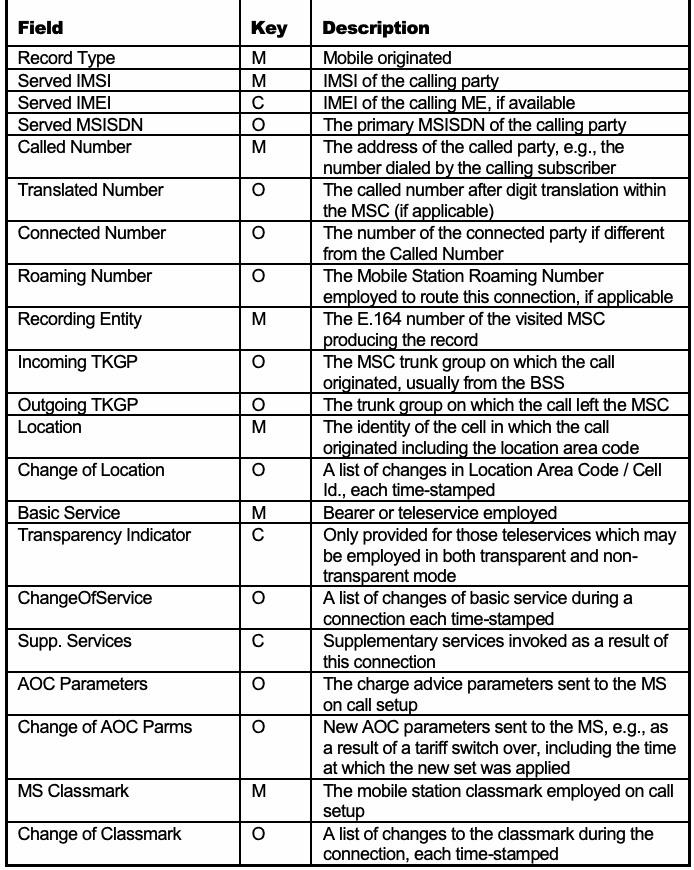
抽出したテキスト（原本と未照合・参考）
| Field | Key | Description |
| Record Type | M | Mobile originated |
| Served IMSI | M | IMSI of the calling party |
| Served IMEI | C | IMEI of the calling ME, if available |
| Served MSISDN | O | The primary MSISDN of the calling party |
| Called Number | M | The address of the called party, e.g., the number dialed by the calling subscriber |
| Translated Number | O | The called number after digit translation within the MSC (if applicable) |
| Connected Number | O | The number of the connected party if different from the Called Number |
| Roaming Number | O | The Mobile Station Roaming Number employed to route this connection, if applicable |
| Recording Entity | M | The E.164 number of the visited MSC producing the record |
| Incoming TKGP | O | The MSC trunk group on which the call originated, usually from the BSS |
| Outgoing TKGP | O | The trunk group on which the call left the MSC |
| Location | M | The identity of the cell in which the call originated including the location area code |
| Change of Location | O | A list of changes in Location Area Code / Cell Id., each time-stamped |
| Basic Service | M | Bearer or teleservice employed |
| Transparency Indicator | C | Only provided for those teleservices which may be employed in both transparent and non- transparent mode |
| ChangeOfService | O | A list of changes of basic service during a connection each time-stamped |
| Supp. Services | C | Supplementary services invoked as a result of this connection |
| AOC Parameters | O | The charge advice parameters sent to the MS on call setup |
| Change of AOC Parms | O | New AOC parameters sent to the MS, e.g., as a result of a tariff switch over, including the time at which the new set was applied |
| MS Classmark | M | The mobile station classmark employed on call setup |
| Change of Classmark | O | A list of changes to the classmark during the connection, each time-stamped |
抽出したテキストの訳（原本と未照合・参考）
| フィールド | キー | 説明 |
| レコード種別 | M | モバイル発信 |
| 処理対象IMSI | M | 発信者のIMSI |
| 処理対象IMEI | C | 利用可能な場合の発信側MEのIMEI |
| 処理対象MSISDN | O | 発信者の主MSISDN |
| 着信先番号 | M | 着信側のアドレス（発信加入者がダイヤルした番号など） |
| 変換後番号 | O | 該当する場合、MSC内で数字変換された後の着信先番号 |
| 接続先番号 | O | 着信先番号と異なる場合の、接続先当事者の番号 |
| ローミング番号 | O | 該当する場合、この接続の経路制御に用いられた移動局ローミング番号 |
| 記録生成主体 | M | 記録を生成した訪問先MSCのE.164番号 |
| 着信TKGP | O | 通話の発信元となったMSCのトランクグループ（通常はBSSから） |
| 発信TKGP | O | 通話がMSCから出たトランクグループ |
| 位置 | M | 位置エリアコードを含む、通話が開始されたセルの識別情報 |
| 位置の変更 | O | タイムスタンプ付きの位置エリアコード／セルIDの変更一覧 |
| 基本サービス | M | 使用されたベアラサービスまたはテレサービス |
| 透過性インジケーター | C | 透過モードと非透過モードの両方で使用可能なテレサービスについてのみ提供される |
| サービス変更 | O | 接続中に発生した基本サービスの変更一覧（各変更にタイムスタンプ付き） |
| 付加サービス | C | この接続に伴って起動された付加サービス |
| AOCパラメーター | O | 通話設定時にMSへ送信された料金通知パラメーター |
| AOCパラメーターの変更 | O | 料金体系の切替えなどに伴ってMSへ送信された新しいAOCパラメーター（新しいパラメーターが適用された時刻を含む） |
| MSクラスマーク | M | 通話設定時に用いられた移動局クラスマーク |
| クラスマークの変更 | O | 接続中に発生したクラスマークの変更一覧（各変更にタイムスタンプ付き） |
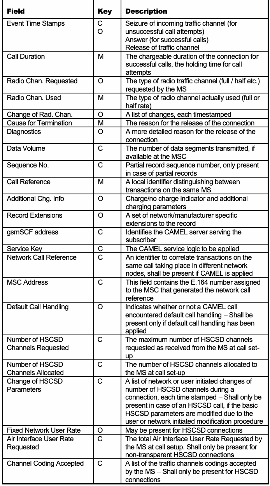
抽出したテキスト（原本と未照合・参考）
| Field | Key | Description |
| Event Time Stamps | C O | Seizure of incoming traffic channel (for unsuccessful call attempts) Answer (for successful calls) Release of traffic channel |
| Call Duration | M | The chargeable duration of the connection for successful calls, the holding time for call attempts |
| Radio Chan. Requested | O | The type of radio traffic channel (full / half etc.) requested by the MS |
| Radio Chan. Used | M | The type of radio channel actually used (full or half rate) |
| Change of Rad. Chan. | O | A list of changes, each timestamped |
| Cause for Termination | M | The reason for the release of the connection |
| Diagnostics | O | A more detailed reason for the release of the connection |
| Data Volume | C | The number of data segments transmitted, if available at the MSC |
| Sequence No. | C | Partial record sequence number, only present in case of partial records |
| Call Reference | M | A local identifier distinguishing between transactions on the same MS |
| Additional Chg. Info | O | Charge/no charge indicator and additional charging parameters |
| Record Extensions | O | A set of network/manufacturer specific extensions to the record |
| gsmSCF address | C | Identifies the CAMEL server serving the subscriber |
| Service Key | C | The CAMEL service logic to be applied |
| Network Call Reference | C | An identifier to correlate transactions on the same call taking place in different network nodes, shall be present if CAMEL is applied |
| MSC Address | C | This field contains the E.164 number assigned to the MSC that generated the network call reference |
| Default Call Handling | O | Indicates whether or not a CAMEL call encountered default call handling – Shall be present only if default call handling has been applied |
| Number of HSCSD Channels Requested | C | The maximum number of HSCSD channels requested as received from the MS at call set- up |
| Number of HSCSD Channels Allocated | C | The number of HSCSD channels allocated to the MS at call set-up |
| Change of HSCSD Parameters | C | A list of network or user initiated changes of number of HSCSD channels during a connection, each time stamped – Shall only be present in case of an HSCSD call, if the basic HSCSD parameters are modified due to the user or network initiated modification procedure |
| Fixed Network User Rate | O | May be present for HSCSD connections |
| Air Interface User Rate Requested | C | The total Air Interface User Rate Requested by the MS at call setup. Shall only be present for non-transparent HSCSD connections |
| Channel Coding Accepted | C | A list of the traffic channels codings accepted by the MS – Shall only be present for HSCSD connections |
抽出したテキストの訳（原本と未照合・参考）
| フィールド | キー | 説明 |
| イベントのタイムスタンプ | C O | 着信トラフィックチャネルの捕捉（通話失敗時）、応答（通話成功時）、トラフィックチャネルの解放 |
| 通話時間 | M | 通話成功時の課金対象時間、通話試行時の保留時間 |
| 要求された無線チャネル | O | MSが要求した無線トラフィックチャネルの種類（フルレート／ハーフレートなど） |
| 使用された無線チャネル | M | 実際に使用された無線チャネルの種類（フルレートまたはハーフレート） |
| 無線チャネルの変更 | O | タイムスタンプ付きの変更一覧 |
| 終了理由 | M | 接続が解放された理由 |
| 診断情報 | O | 接続が解放された理由の詳細 |
| データ量 | C | MSCで取得可能な場合、送信されたデータセグメントの数 |
| シーケンス番号 | C | 部分レコードの場合にのみ存在する、部分レコードのシーケンス番号 |
| 通話参照番号 | M | 同じMS上のトランザクションを区別するローカル識別子 |
| 追加課金情報 | O | 課金／非課金インジケーターおよび追加の課金パラメーター |
| レコード拡張 | O | ネットワークまたはメーカー固有のレコード拡張一式 |
| gsmSCFアドレス | C | 加入者を処理するCAMELサーバーを識別する |
| サービスキー | C | 適用するCAMELサービスロジック |
| ネットワーク通話参照番号 | C | 異なるネットワークノードで行われる同一通話のトランザクションを関連付ける識別子。CAMELを適用する場合は存在しなければならない |
| MSCアドレス | C | ネットワーク通話参照番号を生成したMSCに割り当てられたE.164番号 |
| 既定の通話処理 | O | CAMEL通話で既定の通話処理が行われたかどうかを示す。既定の通話処理が適用された場合にのみ存在しなければならない |
| 要求されたHSCSDチャネル数 | C | 通話設定時にMSから受信した、要求HSCSDチャネル数の最大値 |
| 割り当てられたHSCSDチャネル数 | C | 通話設定時にMSへ割り当てられたHSCSDチャネル数 |
| HSCSDパラメーターの変更 | C | 接続中にネットワークまたはユーザーが開始したHSCSDチャネル数の変更一覧（各変更にタイムスタンプ付き）。ユーザーまたはネットワークが開始した変更手続きによって基本HSCSDパラメーターが変更されたHSCSD通話の場合にのみ存在しなければならない |
| 固定ネットワークユーザー速度 | O | HSCSD接続の場合に存在することがある |
| 要求された無線インターフェースユーザー速度 | C | 通話設定時にMSが要求した無線インターフェースユーザー速度の合計。非透過HSCSD接続の場合にのみ存在しなければならない |
| 受け入れられたチャネル符号化方式 | C | MSが受け入れたトラフィックチャネルの符号化方式一覧。HSCSD接続の場合にのみ存在しなければならない |
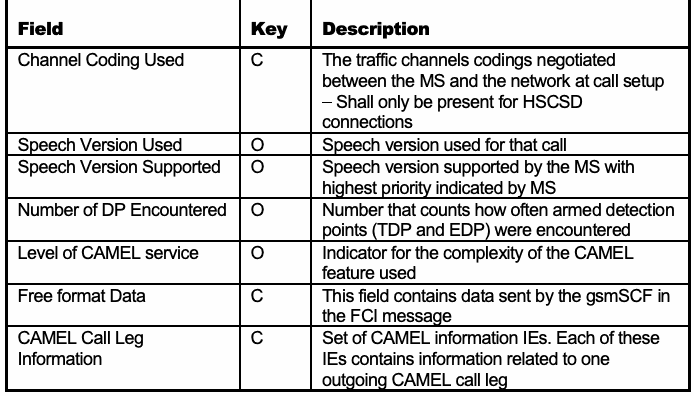
抽出したテキスト（原本と未照合・参考）
| Field | Key | Description |
| Channel Coding Used | C | The traffic channels codings negotiated between the MS and the network at call setup – Shall only be present for HSCSD connections |
| Speech Version Used | O | Speech version used for that call |
| Speech Version Supported | O | Speech version supported by the MS with highest priority indicated by MS |
| Number of DP Encountered | O | Number that counts how often armed detection points (TDP and EDP) were encountered |
| Level of CAMEL service | O | Indicator for the complexity of the CAMEL feature used |
| Free format Data | C | This field contains data sent by the gsmSCF in the FCI message |
| CAMEL Call Leg Information | C | Set of CAMEL information IEs. Each of these IEs contains information related to one outgoing CAMEL call leg |
抽出したテキストの訳（原本と未照合・参考）
| フィールド | キー | 説明 |
| 使用されたチャネル符号化方式 | C | 通話設定時にMSとネットワーク間で調整されたトラフィックチャネルの符号化方式。HSCSD接続の場合にのみ存在しなければならない |
| 使用された音声バージョン | O | その通話で使用された音声バージョン |
| サポートされる音声バージョン | O | MSがサポートする音声バージョンのうち、MSが示した優先度が最も高いもの |
| 検出されたDPの数 | O | 起動された検出ポイント（TDPおよびEDP）が検出された回数 |
| CAMELサービスレベル | O | 使用されたCAMEL機能の複雑さを示すインジケーター |
| 自由形式データ | C | FCIメッセージでgsmSCFが送信したデータを含むフィールド |
| CAMEL通話レグ情報 | C | CAMEL情報IE一式。各IEには、発信側のCAMEL通話レグ1つに関連する情報が含まれる |
Appendix D. Online Resources for Mobile Device Forensics
翻訳準備中
This appendix contains lists of online resources that may be useful to incident response communities and law enforcement when mobile devices are encountered during an incident or crime. The resources provide additional information on aspects of cell phone forensics.
この付録には、インシデントまたは犯罪の発生時にモバイルデバイスが関係する場合、インシデント対応コミュニティや法執行機関に役立つ可能性のあるオンラインリソースの一覧を示す。これらのリソースは、携帯電話フォレンジックの各側面に関する追加情報を提供する。
Table 6: Technical Resource Sites
表6：技術リソースサイト
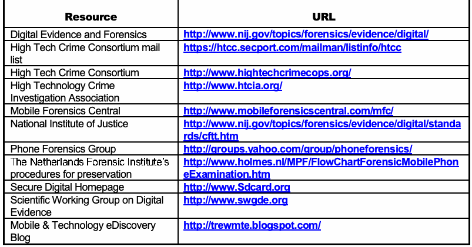
抽出したテキスト（原本と未照合・参考）
| Resource | URL |
| Digital Evidence and Forensics | http://www.nij.gov/topics/forensics/evidence/digital/ |
| High Tech Crime Consortium mail list | https://htcc.secport.com/mailman/listinfo/htcc |
| High Tech Crime Consortium | http://www.hightechcrimecops.org/ |
| High Technology Crime Investigation Association | http://www.htcia.org/ |
| Mobile Forensics Central | http://www.mobileforensicscentral.com/mfc/ |
| National Institute of Justice | http://www.nij.gov/topics/forensics/evidence/digital/standa rds/cftt.htm |
| Phone Forensics Group | http://groups.yahoo.com/group/phoneforensics/ |
| The Netherlands Forensic Institute’s procedures for preservation | http://www.holmes.nl/MPF/FlowChartForensicMobilePhon eExamination.htm |
| Secure Digital Homepage | http://www.Sdcard.org |
| Scientific Working Group on Digital Evidence | http://www.swgde.org |
| Mobile & Technology eDiscovery Blog | http://trewmte.blogspot.com/ |
抽出したテキストの訳（原本と未照合・参考）
| リソース | URL |
| デジタル証拠とフォレンジック | http://www.nij.gov/topics/forensics/evidence/digital/ |
| High Tech Crime Consortiumメーリングリスト | https://htcc.secport.com/mailman/listinfo/htcc |
| High Tech Crime Consortium | http://www.hightechcrimecops.org/ |
| High Technology Crime Investigation Association | http://www.htcia.org/ |
| Mobile Forensics Central | http://www.mobileforensicscentral.com/mfc/ |
| 米国国立司法研究所 | http://www.nij.gov/topics/forensics/evidence/digital/standa rds/cftt.htm |
| Phone Forensics Group | http://groups.yahoo.com/group/phoneforensics/ |
| オランダ法科学研究所のモバイルフォン保全手順 | http://www.holmes.nl/MPF/FlowChartForensicMobilePhon eExamination.htm |
| Secure Digital公式サイト | http://www.Sdcard.org |
| デジタル証拠に関する科学作業部会 | http://www.swgde.org |
| Mobile & Technology電子開示ブログ | http://trewmte.blogspot.com/ |
Table 7: Databases for Identification Queries
表7：識別情報の照会に用いるデータベース
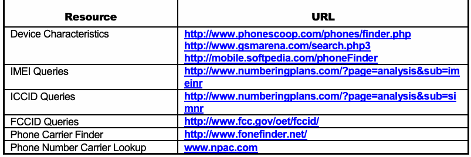
抽出したテキスト（原本と未照合・参考）
| Resource | URL |
| Device Characteristics | http://www.phonescoop.com/phones/finder.php http://www.gsmarena.com/search.php3 http://mobile.softpedia.com/phoneFinder |
| IMEI Queries | http://www.numberingplans.com/?page=analysis&sub=im einr |
| ICCID Queries | http://www.numberingplans.com/?page=analysis&sub=si mnr |
| FCCID Queries | http://www.fcc.gov/oet/fccid/ |
| Phone Carrier Finder | http://www.fonefinder.net/ |
| Phone Number Carrier Lookup | www.npac.com |
抽出したテキストの訳（原本と未照合・参考）
| リソース | URL |
| デバイスの特性 | http://www.phonescoop.com/phones/finder.php http://www.gsmarena.com/search.php3 http://mobile.softpedia.com/phoneFinder |
| IMEI照会 | http://www.numberingplans.com/?page=analysis&sub=im einr |
| ICCID照会 | http://www.numberingplans.com/?page=analysis&sub=si mnr |
| FCCID照会 | http://www.fcc.gov/oet/fccid/ |
| 携帯電話事業者検索 | http://www.fonefinder.net/ |
| 電話番号による事業者検索 | www.npac.com |